כך במקור
כך במקור (sic): המסמך מדפיס כאן משהו שגוי — טעות דפוס, מילה או מספר כפולים, תאריך שאינו יכול להיות — והמאגר מביא אותו כפי שהוא מודפס, בלי לתקן. כל סימון נבדק מול העמוד הסרוק. ברשימה שלהלן כל הסימונים במאגר, מסמך אחר מסמך: הסעיף שבו הם מופיעים, המילים שסביבם — המילה המסומנת בקו גלי, כמו בדף המסמך — חיתוך מן הסריקה שבו אפשר לראות את הטעות בעמוד עצמו, והסבר קצר מדוע.
מה מונח על הכף
כל טעות דורגה לפי השפעתה בעולם: גבוהה — סכום, תאריך או זכות תלויים בה, ובית משפט צפוי לפסוק נגד האופן שבו היא מיושמת היום; בינונית — היישום הקיים צפוי לעמוד או שההכרעה שקולה, או הפניה שאי אפשר לעקוב אחריה; נמוכה — טעות שדבר אינו תלוי בה. הדירוג הוא קריאה שלנו ולא של עורך דין.
חוזה — קופת תגמולים וקרן מיוחדת לעובדי הוראה, "דפנה"
- סעיף 6 אכפילותחומרה נמוכה
… פעם בפעם. השקעת הכספים כאמור המזכירות תמצא לנכון לתת לו מידי פעם בפעם. השקעת הכספים כאמור תהווה בסיס לשמירת …
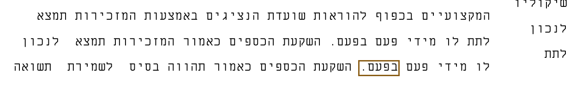
מן הסריקה, עמ' 2 המילים "השקעת הכספים כאמור המזכירות תמצא לנכון לתת לו מידי פעם בפעם." חוזרות על סוף המשפט שלפניהן; המשפט הבא פותח שוב "השקעת הכספים כאמור".
חזרה של רצף מילים בהקלדה; ההוראה על השקעת הכספים קריאה במלואה בלעדיה.
- סעיף 1 א, נספח א'טעות כתיבחומרה נמוכה
… בשעור של שלושה עשר ושליש האחוז בגין עבודה במשרה נוספת של עובדי הרואה כהגדרתה בסעיף 27 להסכם הקיבוצי מיום …
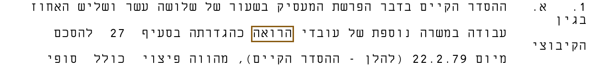
מן הסריקה, עמ' 4 צ"ל "הוראה": "עובדי הוראה".
טעות כתיב; המשמעות ברורה.
- סעיף 5 ג, נספח א'טעות כתיבחומרה נמוכה
… ובקופת התגמולים מהפרשות המעסיק והעובד לפי ההסדר החדש ייעשו מדי חודש כחודשו במועד תשלום המשכורת של החודש שבגינו …
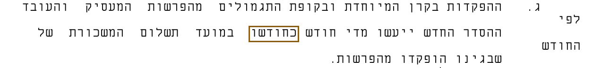
מן הסריקה, עמ' 6 צ"ל "בחודשו": "מדי חודש בחודשו".
טעות כתיב בתביעה שלא הוסכמה; המשמעות ברורה.
- סעיף 5 ג, נספח א'טעות כתיבחומרה נמוכה
במקרה של איחור בהפקדת הכספים כאמרו, יישא המעסיק בהפרשי ריבית והצמדה …
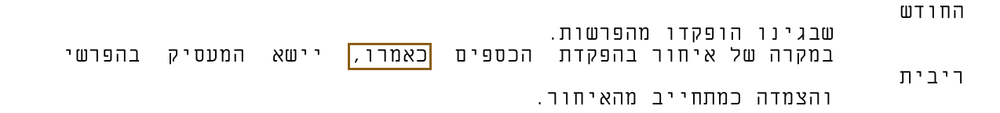
מן הסריקה, עמ' 6 צ"ל "כאמור".
טעות כתיב; המשמעות ברורה.
- סעיף 5 ד, נספח א'טעות כתיבחומרה נמוכה
… ישולם גם בגין תקופת עבודה אצל מעסיק או מעסיקים קודמים למעסיק האחרון בתאני שעובד ההוראה עבד בשירותם לפחות 4 שנים …
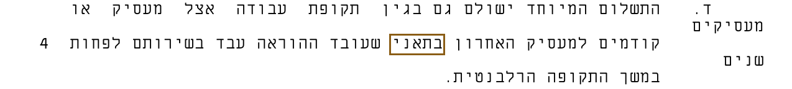
מן הסריקה, עמ' 6 צ"ל "בתנאי".
טעות כתיב בתביעה שלא הוסכמה; המשמעות ברורה.
- נספח לסיכוםהיפוך סדרחומרה נמוכה
A X -- = D2
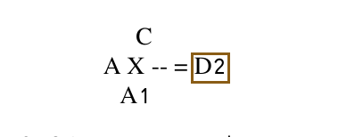
מן הסריקה, עמ' 7 הנוסחה מגדירה "D2" באמצעות "A", אך ההגדרות שמעליה הן A1, A2, B, C ו-D, ואין A או D2; כנראה הספרה 2 של A2 עברה אל D בהקלדה, והנוסחה היא D = A2 X C/A1.
ההגדרות שמעל הנוסחה קובעות אותה בלי ספק: אין במסמך A או D2 אחרים, ו-A2 הוא השכר ביום ביצוע התשלום.
- נספח ב'טעות כתיבחומרה נמוכה
פקודות החברות (נוסח חדש) התשמ"ג - 1983
מן הסריקה, עמ' 7 צ"ל "פקודת החברות", כפי שמדפיסים כותרת נספח ג' וההגדרה "הפקודה" בו.
טעות כתיב בשם הפקודה; היא מזוהה בבירור בשמה ובשנתה.
- נספח ב'טעות כתיבחומרה נמוכה
אנו האנשים והגופים, ששנותיהם וכתובותיהם רשומים מטה, רוצים להתאגד …
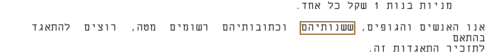
מן הסריקה, עמ' 7 צ"ל "ששמותיהם": טבלת המנויים שמתחת מונה "שמות המנויים".
טעות כתיב; טבלת המנויים מבהירה את המילה.
- סעיף 1 א, נספח ג'טעות כתיבחומרה נמוכה
"החוק" - פקודות מס הכנסה (נוסח חדש) תשכ"א - 1961; ההסדר …
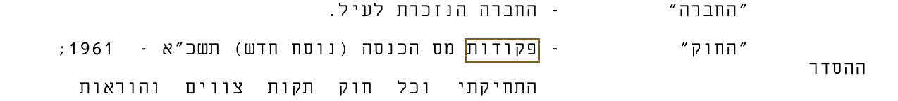
מן הסריקה, עמ' 8 צ"ל "פקודת מס הכנסה (נוסח חדש)".
טעות כתיב בשם הפקודה; היא מזוהה בבירור בשמה ובשנתה.
- סעיף 1 א, נספח ג'טעות כתיבחומרה נמוכה
… - פקודות מס הכנסה (נוסח חדש) תשכ"א - 1961; ההסדר התחיקתי וכל חוק תקות צווים והוראות אחרים, העשויים לחול על …
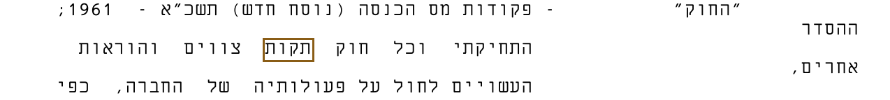
מן הסריקה, עמ' 8 צ"ל "תקנות".
טעות כתיב; המשמעות ברורה.
- סעיף 1 א, נספח ג'טעות כתיבחומרה נמוכה
… חוק תקות צווים והוראות אחרים, העשויים לחול על פעולותיה של החברה, כפי שהייו בתוקף מזמן לזמן.
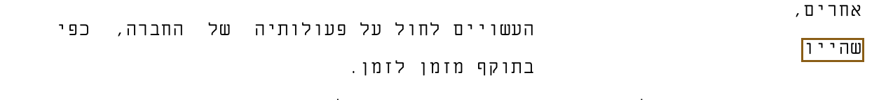
מן הסריקה, עמ' 8 צ"ל "שיהיו".
טעות כתיב; המשמעות ברורה.
- סעיף 1 א, נספח ג'טעות כתיבחומרה נמוכה
"תקנות אלה" - תקנון ההתאגדות של הבחרה כפי שיהיה בתוקף אותה שעה.
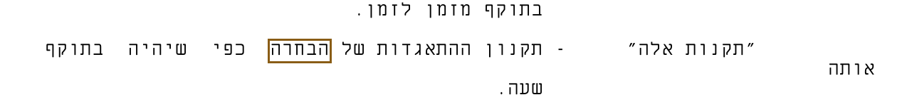
מן הסריקה, עמ' 8 צ"ל "החברה".
טעות כתיב; המשמעות ברורה.
- סעיף 4, נספח ג'טעות כתיבחומרה נמוכה
… הכרוכות בסוגי מניותיה ככל שתראה לנכון. בתנאי שהסכמת הבעלים של אל פחות משלושת רבעים ממספר המניות שהוצאו …
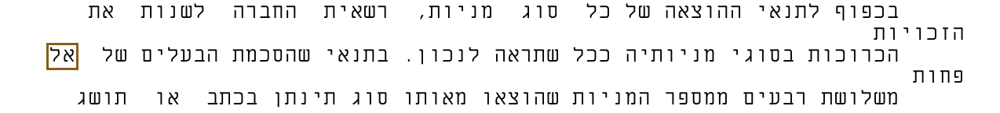
מן הסריקה, עמ' 9 צ"ל "לא": "של לא פחות משלושת רבעים".
היפוך אותיות; הרוב הנדרש (שלושה רבעים) ברור.
- סעיף 9 ב, נספח ג'טעות כתיבחומרה נמוכה
אישור דיהים וחשבונות כספיים, בחירת דירקטורים, מינוי …
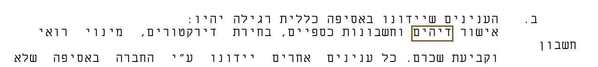
מן הסריקה, עמ' 10 כנראה צ"ל "דו"חות" (או "דו"חים"): אישור הדו"חות והחשבונות הכספיים באסיפה הכללית הרגילה.
טעות כתיב; ההקשר (חשבונות כספיים, רואי חשבון) מבהיר את המילה.
- סעיף 15 א, נספח ג'טעות כתיבחומרה נמוכה
הדירקטורים ינהלו את עזקי החברה באופן שיראה להם כרצוי וכמועיל …
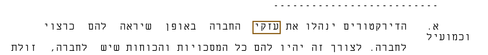
מן הסריקה, עמ' 11 צ"ל "עסקי".
טעות כתיב; המשמעות ברורה.
- סעיף 15 א, נספח ג'טעות כתיבחומרה נמוכה
… עזקי החברה באופן שיראה להם כרצוי וכמועיל לחברה. לצורך זה יהיו להם כל המסכויות והכוחות שיש לחברה, זולת אם יוחדו בתקנות …
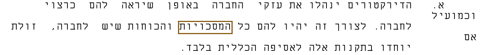
מן הסריקה, עמ' 11 צ"ל "הסמכויות", כפי שמדפיס סעיף 15(ג).
טעות כתיב; המשמעות ברורה.
- סעיף 17 ד, נספח ג'טעות כתיבחומרה נמוכה
עמית יקבל את הכספים שהצטברו לזכותו בחשבון במיוחד עם סיום עבודתו אצל המעביד.
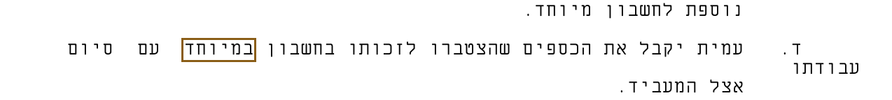
מן הסריקה, עמ' 12 צ"ל "בחשבון המיוחד", החשבון שסעיף 17(ג) קובע.
טעות כתיב; סעיף 17(ג) מזהה את החשבון.
- סעיף 17 ה 1), נספח ג'חסר או מיותרחומרה נמוכה
המדד הבסיסי: מדד חודש ההפקדה חברה, כפי שיפורסם ב-15 לחודש שלאחריו.
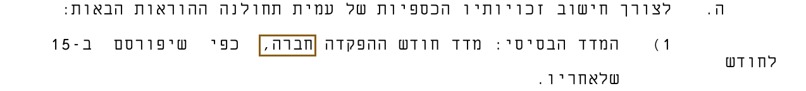
מן הסריקה, עמ' 12 צ"ל "ההפקדה בחברה", כפי שמדפיסה פסקה (3): "מיום ההפקדה בחברה".
אות שנשמטה; המדד הבסיסי מזוהה בבירור כמדד חודש ההפקדה.
- סעיף 17 ה 2), נספח ג'טעות כתיבחומרה נמוכה
המדד החקובע: המדד האחרון הידוע ביום משיכת הכספים …
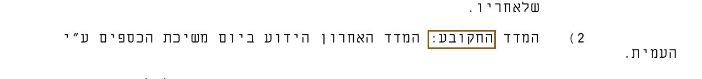
מן הסריקה, עמ' 12 צ"ל "הקובע".
טעות כתיב; המשמעות ברורה.
- סעיף 19 ב, נספח ג'טעות כתיבחומרה נמוכה
בפטירת עמית תשלם החברה את הסכומים שהצטברו בחשבון המיותר לשאריו, בהתאם להוראות חוק פיצויי …
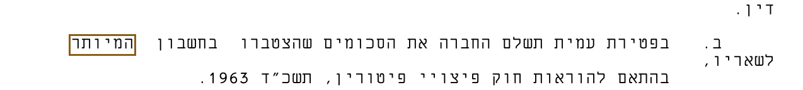
מן הסריקה, עמ' 13 צ"ל "בחשבון המיוחד", החשבון שסעיף 17(ג) קובע ושמתשלומיו נגזרים פיצויי הפיטורים.
טעות כתיב; ההפניה לחוק פיצויי פיטורים מזהה את החשבון.
- סעיף 19 ב, נספח ג'תאריך שגויחומרה נמוכה
… שהצטברו בחשבון המיותר לשאריו, בהתאם להוראות חוק פיצויי פיטורין, תשכ"ד 1963.
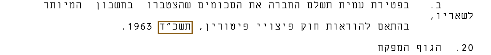
מן הסריקה, עמ' 13 חוק פיצויי פיטורים הוא מהתשכ"ג-1963; תשכ"ד היא שנת 1963/64 ואינה שנת החוק.
החוק מזוהה בבירור בשמו ובשנתו הלועזית.
- סעיף 24 א, נספח ג'טעות כתיבחומרה נמוכה
כל הפעולות האדמינסטרטיביות והכספיות של הבחרה יבוצעו על ידי הבנק, על פי הסכם ניהול, …
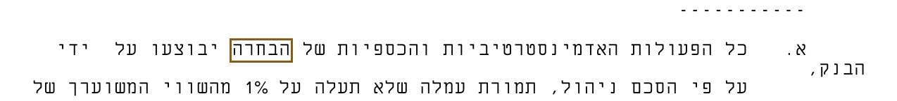
מן הסריקה, עמ' 14 צ"ל "החברה".
טעות כתיב; המשמעות ברורה.
- סעיף 25 ב, נספח ג'טעות כתיבחומרה נמוכה
הדירקטורים ישקדו על כך, שהחברה לא תעסוק בכל עיסוק שההסתדר התחיקתי אינו מחיב אותן במפורש, זולת אם …
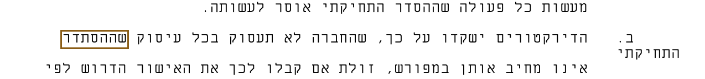
מן הסריקה, עמ' 14 צ"ל "שההסדר התחיקתי", כפי שמדפיס המשך המשפט.
טעות כתיב; המשמעות ברורה.
הסכם קיבוצי — שכר ותנאי עבודה של העובדים המדורגים בדירוג עובדי הוראה
- סעיף 28.גמספורחומרה נמוכה
28.ג בשנה"ל תשנ"ד ותשנ"ה יועמדו המכסות הבאות …
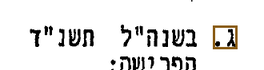
מן הסריקה, עמ' 9 רצף המספור: 28.א · 28.ג · 28.ד · 28.ה
הרשימה בסעיף 28 עוברת מ-א. ל-ג.; אין בה ב.
דילוג או כפילות במספור בלבד; הסדר ברור ואין בכך שינוי של כלל.
הסכם קיבוצי — תוספות שכר לעובדי ההוראה: ערך תוספות השכר שניתנו לדירוג המהנדסים
- פתיחחסר או מיותרחומרה נמוכה
הואיל: ועל פי סעיף 34.ג להסכם הקיבוצי שתינתן שנחתם בין הצדדים ביום 11.5.93 (להלן - …
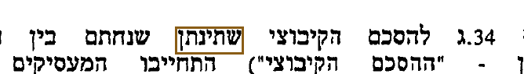
מן הסריקה, עמ' 1 מילה שאין לה מקום במשפט ("להסכם הקיבוצי שתינתן שנחתם").
מילה מיותרת במשפט; המשמעות ברורה.
- סעיף 8טעות כתיבחומרה נמוכה
… החינוך הפורמלי (בתי ספר בחינוך היסודי חט"ב, חינוך על יסודי, מכללות וסימנרים) מענק יובל בשיעור 60% מהמשכורת הקובעת …
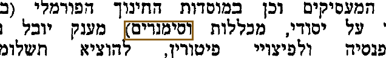
מן הסריקה, עמ' 5 צ"ל "וסמינרים".
טעות כתיב; המשמעות ברורה.
הסכם קיבוצי — התחייבות המעסיקים לפי סעיף 34ג' ל"הסכם 93": ערך תוספות השכר שינתנו לדירוג המהנדסים
- סעיף 11 (כותרת)מספורחומרה נמוכה
11 מענק יובל
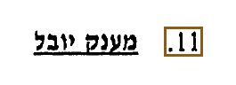
מן הסריקה, עמ' 7 רצף המספור: … · 6 · 7 · 8 · 9 · 11 · 12 · 13 · 14 · 15 · …
המספור עובר מסעיף 9 לסעיף 11; אין בהסכם סעיף 10.
דילוג או כפילות במספור בלבד; הסדר ברור ואין בכך שינוי של כלל.
- סעיף 15.בכפילותחומרה נמוכה
… הסכום יועבר להסתדרות המורים בהתאם לתוכניות שיוגשו למשרד החינוך בנושא הההשתלמויות והפעלתן.
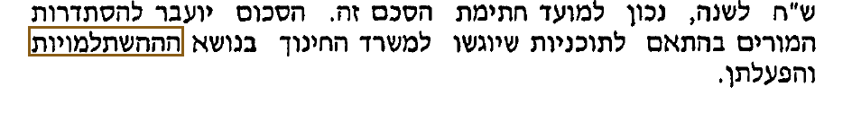
מן הסריקה, עמ' 36 האות ה' הודפסה שלוש פעמים; צ"ל "ההשתלמויות".
מילה או אות כפולה; המשמעות ברורה.
- סעיף 1, נספח א'טעות כתיבחומרה בינונית
חישוב התוספת לכל שנת ותק יהיה כאחת מהשכר המשולב בשנת הוותק הקודמת לה.
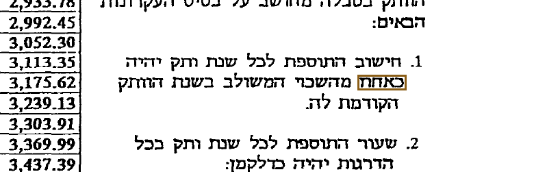
מן הסריקה, עמ' 16 צ"ל "כאחוז".
הוותק מחושב כאחוז מהשכר בשנה הקודמת, כפי שמראים הטבלאות והשיעורים שבהערה 2; בית משפט לא היה קורא "כאחת" אחרת.
- סעיף 1, נספח ב'טעות כתיבחומרה בינונית
חישוב התוספת לכל שנת ותק יהיה כאחת מהשכר המשולב בשנת הוותק הקודמת לה.
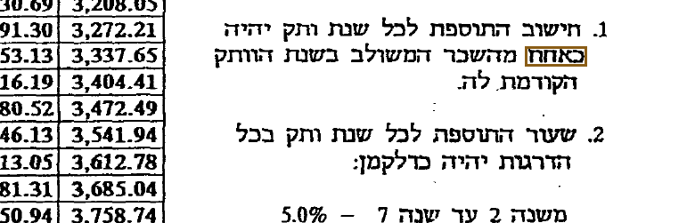
מן הסריקה, עמ' 17 צ"ל "כאחוז".
הוותק מחושב כאחוז מהשכר בשנה הקודמת, כפי שמראים הטבלאות והשיעורים שבהערה 2; בית משפט לא היה קורא "כאחת" אחרת.
- סעיף 1, נספח ג'טעות כתיבחומרה בינונית
חישוב התוספת לכל שנת ותק יהיה כאחת מהשכר המשולב בשנת הוותק הקודמת לה.
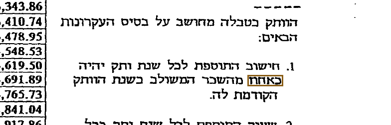
מן הסריקה, עמ' 18 צ"ל "כאחוז".
הוותק מחושב כאחוז מהשכר בשנה הקודמת, כפי שמראים הטבלאות והשיעורים שבהערה 2; בית משפט לא היה קורא "כאחת" אחרת.
- סעיף 1, נספח ד'טעות כתיבחומרה בינונית
חישוב התוספת לכל שנת ותק יהיה כאחת מהשכר המשולב בשנת הוותק הקודמת לה.
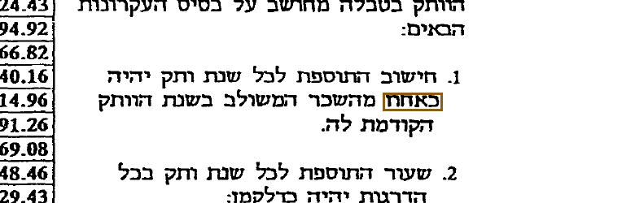
מן הסריקה, עמ' 19 צ"ל "כאחוז".
הוותק מחושב כאחוז מהשכר בשנה הקודמת, כפי שמראים הטבלאות והשיעורים שבהערה 2; בית משפט לא היה קורא "כאחת" אחרת.
- סעיף 1, נספח ה'טעות כתיבחומרה בינונית
חישוב התוספת לכל שנת ותק יהיה כאחת מהשכר המשולב בשנת הוותק הקודמת לה.
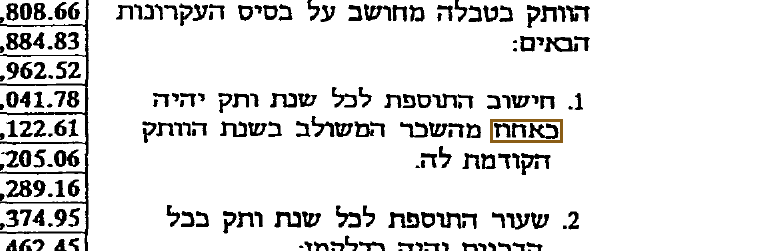
מן הסריקה, עמ' 20 צ"ל "כאחוז".
הוותק מחושב כאחוז מהשכר בשנה הקודמת, כפי שמראים הטבלאות והשיעורים שבהערה 2; בית משפט לא היה קורא "כאחת" אחרת.
- חתימותטעות כתיבחומרה נמוכה
הממונ על האוצר
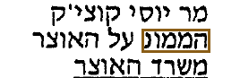
מן הסריקה, עמ' 25 "הממונ" קטוע; צ"ל "הממונה".
טעות כתיב; המשמעות ברורה.
הסכם קיבוצי — הפרשה לקופת גמל בגין רכיבי שכר ותשלומים אחרים שאינם פנסיוניים
- סעיף 3טעות כתיבחומרה נמוכה
לצורך הסכם זה פנסיה צוברת משמעת פנסיה צוברת במסגרת קרן פנסיה מקיפה.
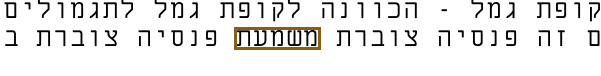
מן הסריקה, עמ' 2 צ"ל "משמעה".
טעות כתיב; המשמעות ברורה.
- סעיף 5(א)(1)טעות כתיבחומרה נמוכה
… תחילת ההפרשה בפועל, תבוצע בשכר הראשון לאחר בחירת קופות הגמל - כפי שיחברו ע"י האיגודים המקצועיים בהסכמת המעסיקים …
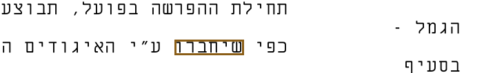
מן הסריקה, עמ' 3 צ"ל "שייבחרו".
טעות כתיב; המשמעות ברורה.
- סעיף 13(ב)טעות כתיבחומרה נמוכה
… תמשיך בהפרשה לקופת גמל ולא לפנסיה צוברת, ואולם ההפרשה לקופת גמל לכולוסיה זו, במקרה זה, תהיה תוך התאמה לאמור …
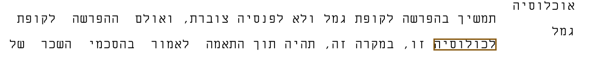
מן הסריקה, עמ' 5 צ"ל "לאוכלוסיה".
טעות כתיב; המשמעות ברורה.
- טבלהטעות כתיבחומרה נמוכה
השם הסתדרות העובדים הכללית החדשה
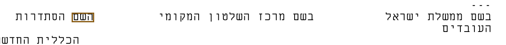
מן הסריקה, עמ' 6 צ"ל "בשם".
טעות כתיב; המשמעות ברורה.
הסכם מיוחד (השלמה) — טבלאות שכר
- פתיחטעות כתיבחומרה נמוכה
בין ממשלת ישראל בשם מדינה ישראל המיוצגת ע"י הממונה על השכר והסכמי …
מן הסריקה, עמ' 1 צ"ל "מדינת": "בשם מדינת ישראל".
טעות כתיב בגוש הצדדים; זהות הצד ברורה.
- פתיחטעות כתיבחומרה נמוכה
שלוש הערים בגדולות: ירושלים, תל אביב-יפו, חיפה, המיוצגות …
מן הסריקה, עמ' 1 צ"ל "הגדולות", כפי שהעמוד מדפיס בשורת החתימה "בשם שלוש הערים הגדולות".
טעות כתיב בשם הצד; זהותו ברורה.
- סעיף דטעות כתיבחומרה נמוכה
שנת ותק ראשון ביעוץ
מן הסריקה, עמ' 2 צ"ל "ראשונה": "שנת ותק" נקבה, ושאר שורות הטבלה מדפיסות "שניה", "שלישית", "רביעית", "חמישית".
טעות התאם; שיעור הגמול שבשורה אינו נוגע בה.
- סעיף יטעות כתיבחומרה נמוכה
עו"ה אם לילד עד גיל 14 המועסקת בהוראה ובתפקידי הדכרה בהיקף משרה כולל של 79% משרה לפחות, תהיה …
מן הסריקה, עמ' 3 צ"ל "הדרכה", כפי שמדפיסה כותרת הסעיף "מורות אם בתפקידי הדרכה".
טעות כתיב; כותרת הסעיף מבהירה את המילה.
- סעיף יאחסר או מיותרחומרה בינונית
… הוראה (סעיף 28 ל"הסכם 93") ימשיכו לעמוד בתוקפם בשנים תשנ"ה, תשנ"ו ותשנ"ז.
מן הסריקה, עמ' 4 מכתב הארגון מיום 18.9.1995 (עמוד 6 של הסריקה) אומר שבהדפסה האחרונה של סעיף יא' הושמטה המילה "ואילך" בסוף השורה השנייה אחרי "ותשנ"ז", ומכתב ראש מטה שר האוצר מיום 20.9.1995 (עמוד 7) משיב שתוכן המכתב מקובל עליו עקרונית.
זכות לפרישה מוקדמת במכסות תלויה בשאלה אם הן ממשיכות אחרי תשנ"ז; הצדדים עצמם הסכימו במכתבים המצורפים שהמילה הושמטה, ולכן המצב הקיים עומד ככל הנראה.
הסכם קיבוצי בדבר הנהגת דרגות קידום במכללות להכשרת עובדי הוראה
- פתיחהפניה שגויהחומרה נמוכה
הואיל: והוסכם בין הסתדרות המורים בסעיף 2.4 להסכם הקיבוצי מיום 11.5.93, ובסעיף 20 …
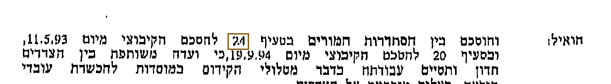
מן הסריקה, עמ' 2 צ"ל "סעיף 24": סעיף 24 להסכם מיום 11.5.93 הוא "ועדה לסמינרים ומכללות", וסיכום הלוואי שבסוף ההסכם מפנה אליו כ"סעיף 24".
הפניה במבוא בלבד; ההסכם מזוהה בתאריכו, וסיכום הלוואי מדפיס את מספר הסעיף נכון.
- סעיף 4.ה.1טעות כתיבחומרה נמוכה
"מרצה בכיר מוסד אקדמי להכשרת עו"ה"
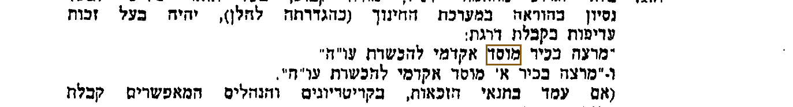
מן הסריקה, עמ' 4 שם הדרגה כפי שסעיף 3.א מגדיר אותו הוא "… במוסד אקדמי להכשרת עו"ה"; כאן נשמטה ה"ב".
הדרגה מזוהה בבירור משמה; סעיף 3.א מחייב להופיע בשם המלא, ואין זכות התלויה באות החסרה.
- סעיף 4.ה.1טעות כתיבחומרה נמוכה
ו-"מרצה בכיר א' מוסד אקדמי להכשרת עו"ה".
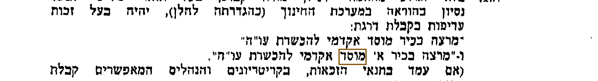
מן הסריקה, עמ' 4 שם הדרגה כפי שסעיף 3.א מגדיר אותו הוא "… במוסד אקדמי להכשרת עו"ה"; כאן נשמטה ה"ב".
הדרגה מזוהה בבירור משמה; סעיף 3.א מחייב להופיע בשם המלא, ואין זכות התלויה באות החסרה.
- סעיף 5.גהפניה שגויהחומרה נמוכה
… ותק במוסד וכדו', ובלבד שישמר איזון בין קבוצות המורים כאמור בסעיף 6.ג, להלן.
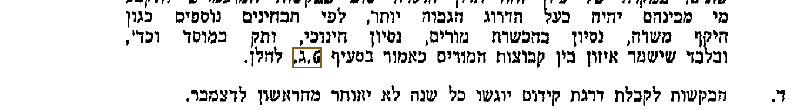
מן הסריקה, עמ' 5 האיזון בין ארבע קבוצות המורים נקבע בסעיף 6.ה; סעיף 6.ג עניינו שמירת השיעורים ללא חריגה.
ההפניה מתוקנת מאליה מן ההקשר: רק סעיף 6.ה עוסק באיזון בין הקבוצות.
- סעיף 6.א.2טעות כתיבחומרה נמוכה
להלן: שיעור המורים הזכאים למינוי "מרצה מוסד אקדמי להכשרת עו"ה"
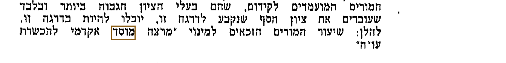
מן הסריקה, עמ' 6 שם הדרגה כפי שסעיף 3.א מגדיר אותו הוא "… במוסד אקדמי להכשרת עו"ה"; כאן נשמטה ה"ב".
הדרגה מזוהה בבירור משמה; סעיף 3.א מחייב להופיע בשם המלא, ואין זכות התלויה באות החסרה.
- סעיף 6.א.3טעות כתיבחומרה נמוכה
להלן: שיעור המורים הזכאים למינוי "מרצה א מוסד אקדמי להכשרת עו"ה"
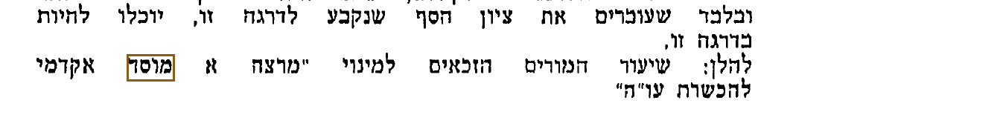
מן הסריקה, עמ' 6 השורה שתחת סעיף 6.א.3 שעניינו דרגת "מרצה בכיר במוסד אקדמי להכשרת עו"ה" מכנה אותה "מרצה א מוסד": נשמטו "בכיר" וה"ב" של "במוסד".
השורה חוזרת על שם הדרגה שבראש אותו סעיף משנה, שמודפס נכון ושבו נקבע השיעור.
- סעיף 9.יב.1הפניה שגויהחומרה נמוכה
I. יו"ר הועדה יהיה נציג מן "המאגר" האמור בסעיף 9.ד.4,
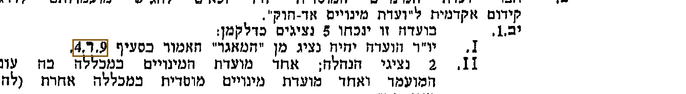
מן הסריקה, עמ' 10 צ"ל סעיף 9.ד.5: שם מוקם "המאגר" של עשרה אנשי אקדמיה; סעיף 9.ד.4 עניינו קבלת החלטות ברוב.
ההפניה מתוקנת מאליה מן ההקשר: רק סעיף 9.ד.5 מקים מאגר.
- סעיף 10.ה.2הפניה שגויהחומרה נמוכה
3 אנשי מקצוע בעלי מוניטין מקצועי מבין התחומים כאמור בסעיף 10.ד.2., עפ"י רשימה שמית מוסכמת על הצדדים, שתוכן …
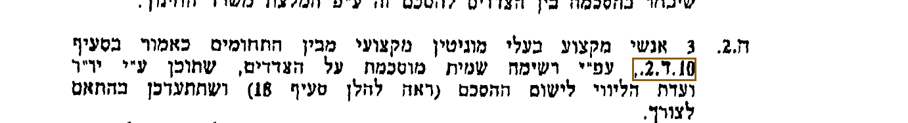
מן הסריקה, עמ' 12 התחומים נמנים בסעיף 9.ד.2; סעיף 10.ד אינו מחולק, ועניינו דרכי מינויה של הוועדה הבין מכללתית.
ההפניה מתוקנת מאליה מן ההקשר: רק סעיף 9.ד.2 מונה תחומים.
- סעיף 13.דטעות כתיבחומרה נמוכה
… היתר וההיתר בוטל, יבוטלו דרגות הקידום שניתנו לעו"ה במכללה מתוקף הסכם ז., מיום ביטול ההיתר.
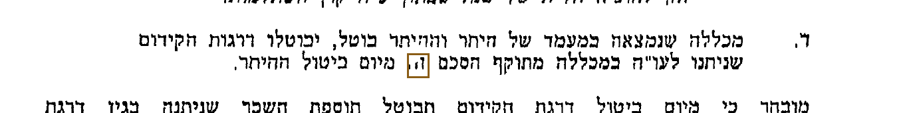
מן הסריקה, עמ' 14 צ"ל "הסכם זה": ה"ה" לא הודפסה ובמקומה נקודה.
טעות הקלדה; המשמעות ברורה.
- סעיף 14, שלב ג' לשלב העיצוב: דיוני ועדת המינויים המוסדית 14.יחהפניה שגויהחומרה נמוכה
… מורים, נסיון חינוכי, ותק במוסד וכד', ובלבד שישמר האיזון כאמור בסעיף 6ג.
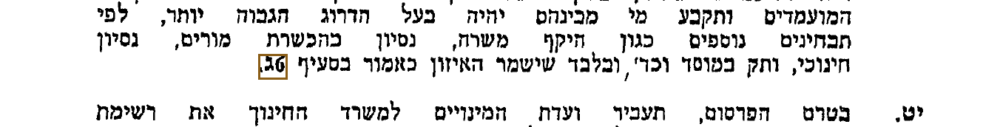
מן הסריקה, עמ' 18 האיזון בין ארבע קבוצות המורים נקבע בסעיף 6.ה; סעיף 6.ג עניינו שמירת השיעורים ללא חריגה.
ההפניה מתוקנת מאליה מן ההקשר: רק סעיף 6.ה עוסק באיזון בין הקבוצות.
- סעיף 18.אטעות כתיבחומרה נמוכה
נציג האגף להכשרת עו"ה, נציג הממונה על השכר, נציג מנהלי מכללות, ונצגי הסתדרות המורים.
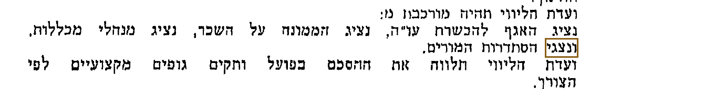
מן הסריקה, עמ' 20 צ"ל "ונציגי".
טעות כתיב; המשמעות ברורה.
- סעיף פרק ב': נוהל דיוני וועדת המינויים 1 1.ב, נספח בהפניה שגויהחומרה נמוכה
… של שוויון בהצבעה יצטרף לדיון החוזר נציג מן המאגר המוסכם עפ"י סעיף 9.ד.4.
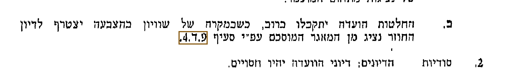
מן הסריקה, עמ' 24 צ"ל סעיף 9.ד.5: שם מוקם "המאגר" של עשרה אנשי אקדמיה; סעיף 9.ד.4 עניינו קבלת החלטות ברוב.
ההפניה מתוקנת מאליה מן ההקשר: רק סעיף 9.ד.5 מקים מאגר.
- סעיף פרק ד': נוהל בחירת נציגות מסגל ההוראה בוועדת המינויים ("נבחרים") 5 5.ו 5.ו.3, נספח בטעות כתיבחומרה נמוכה
… הבחירות למזכירות וועדת המינויים המוסדית, לחברי הנהלת המכללה ולהנהלת גף להכשרת עו"ה במשרד החינוך.
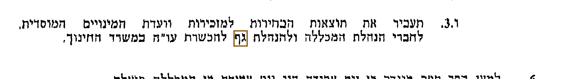
מן הסריקה, עמ' 27 צ"ל "אגף": האגף להכשרת עו"ה במשרד החינוך.
טעות כתיב; המשמעות ברורה.
הסכם קיבוצי — תיקון סעיף 18 (א) להסכם דרגות קידום במכללות להכשרת עובדי הוראה
- פתיחטעות כתיבחומרה נמוכה
הואיל: ובין הצדדים נחתם הסכם קיבוצי בתאריך 22 במאי 1997 בדבר הנהלת דרגות קידום במכללות להכשרת עובדי הוראה …
מן הסריקה, עמ' 1 שם ההסכם מ-22.5.1997 הוא "בדבר הנהגת דרגות קידום"; כאן הודפס "הנהלת".
טעות כתיב בשם ההסכם המתוקן; ההסכם מזוהה בתאריכו.
הסכם קיבוצי — תגמול בגין ליווי טיולים ופעילות חוץ בית ספרית
- פתיחטעות כתיבחומרה נמוכה
שנערך ונחתם ביום י"ז בבאלול התשנ"ח
מן הסריקה, עמ' 1 צ"ל "באלול".
טעות כתיב; המשמעות ברורה.
הסכם קיבוצי — הפרשה לקופת גמל, ארגון המורים
- פתיחטעות כתיבחומרה נמוכה
… עבודה במשרד האוצר, מר יוסי קוצ'יק ומנכ"ל משרד החינוך מר בן-ציון ז"ל;
מן הסריקה, עמ' 1 שם המנכ"ל (בן-ציון דל) הודפס "ז"ל"; ההסכם התאום של הסתדרות המורים מאותו יום מדפיס "דל".
שם החותם שובש; אין לכך השפעה על תוכן ההסכם.
- סעיף 8טעות כתיבחומרה נמוכה
… שעה. כמו כן אין בהסכם זה כשלעצמו משום הכרה ברכיבים כאמור לצורך פנסיה לע פי חוק.
מן הסריקה, עמ' 3 "לע": צ"ל "על" ("על פי חוק").
טעות כתיב; המשמעות ברורה.
- נספחטעות כתיבחומרה נמוכה
… סעיף 10 להסכם, תועבר לדיון בועדה פריטטית של נציגי הצדדים להסכם לפי סעי 13 להסכם מיום 8.9.98.
מן הסריקה, עמ' 4 צ"ל "סעיף".
טעות כתיב; המשמעות ברורה.
- חתימותטעות כתיבחומרה נמוכה
ממונה על הזכר והסכמי עבודה
מן הסריקה, עמ' 4 צ"ל "השכר".
טעות כתיב; המשמעות ברורה.
- נספחטעות כתיבחומרה נמוכה
כ"ח בכסלן התשנ"ט
מן הסריקה, עמ' 5 צ"ל "בכסלו".
טעות כתיב; המשמעות ברורה.
- נספחטעות כתיבחומרה נמוכה
… במהלך המו"מ לכריתת ההסכם הקיבוצי שעניינו הפרשה וניכוי לקופת גמל, כדקלמן:
מן הסריקה, עמ' 5 צ"ל "כדלקמן".
טעות כתיב; המשמעות ברורה.
- סעיף 1, נספחטעות כתיבחומרה נמוכה
בסעיף 5 (ב) להסכם שבדנון, הוסכם כי הפרשה בגין מענק יובל וקצובת …
מן הסריקה, עמ' 5 צ"ל "שבנדון".
טעות כתיב; המשמעות ברורה.
הסכם קיבוצי — הפרשה לקופת גמל, הסתדרות המורים

הסכם קיבוצי — הסכם שכר לעובדים בשירות מי מהמעסיקים לתקופה שמיום 1.1.99 ועד ליום 31.12.2001
- נספחתאריך שגויחומרה נמוכה
ו' בשבט התשס"א
מן הסריקה, עמ' 9 המכתב מתוארך 31.1.2001, שהוא ז' בשבט התשס"א (כפי שמדפיס מכתב השר מאותו יום), ולא ו' בשבט.
היום העברי של תאריך המכתב שגוי ביום אחד; התאריך הלועזי נכון ואין לו השפעה על תוכן.
חוזר תשסז/7 - קצובת ביגוד לשנת הלימודים תשס"ז
- בגוף המסמךטעות כתיבחומרה נמוכה
עובד בדירוג עובדי הוראה, זכאי לקצובת ביגוד כנהוג כלפי קבלי קהל בשירות המדינה, לשנת הלימודים
מן הסריקה, עמ' 1 צ"ל "מקבלי קהל".
טעות כתיב; המשמעות ברורה.
- בגוף המסמךטעות כתיבחומרה נמוכה
עובד הוראה בחינוך הטכנולוגי/מדריך קצועי באחד המקצועות המפורטים להלן, יהיה זכאי …
מן הסריקה, עמ' 2 צ"ל "מקצועי".
טעות כתיב; המשמעות ברורה.
- בגוף המסמךטעות כתיבחומרה נמוכה
עובד הוראה בחינוך הטכנולוגי/מדריך קצועי באחד המקצועות המפורטים להלן יהיה זכאי …

מן הסריקה, עמ' 2 צ"ל "מקצועי".
טעות כתיב; המשמעות ברורה.
חוזר תשס"ח/4 - הסכמים קיבוציים שנחתמו בין מדינת ישראל והמעסיקים לבין ארגון המורים העל-יסודיים בתאריך 24/1/2008
- סעיף 2 בכפילותחומרה נמוכה
… בהתאם לחלקיות משרתו של עובד ההוראה, אך לא מעבר ל- 100% אצל אותה בעלות.
מן הסריקה, עמ' 1 המשפט מודפס פעמיים ברצף בסעיף 2(ב): "התוספת תשולם בהתאם לחלקיות משרתו של עובד ההוראה, אך לא מעבר ל-100% אצל אותה בעלות".
נוסח שהודפס פעמיים; אין בכפילות כלל חדש והמשמעות ברורה.
הסכם קיבוצי לתחילת יישום הרפורמה במערכת החינוך
- פתיחפיסוק ומירכאותחומרה נמוכה
(להלן: המדינה")
מן הסריקה, עמ' 1 מירכאות סוגרות שאין לפניהן מירכאות פותחות; שורת הסתדרות המורים שמתחתיה מדפיסה את שתיהן: (להלן: "הסתדרות המורים").
שיבוש בפיסוק או בסוגריים; המשמעות ברורה.
- פתיחטעות כתיבחומרה נמוכה
לבין: הסתדרות המורים בישראל, מהמיוצגת על-ידי המזכיר הכללי, מר יוסי וסרמן;
מן הסריקה, עמ' 1 צ"ל "המיוצגת", כבשורת המדינה שמעליה.
טעות כתיב; המשמעות ברורה.
- סעיף 5כפילותחומרה נמוכה
… לפי רשימה שגובשה על-ידי משרד החינוך, ולגבי כל מורה חדש כמפורט בהסכם זה..
מן הסריקה, עמ' 2 נקודה כפולה.
סימן פיסוק כפול; אין לו השפעה על המשמעות.
- סעיף 32כפילותחומרה נמוכה
… יוח"א, עבור שעות הוראה פרונטליות הכלולות במבנה שבוע העבודה שבמסגרת הרפורמה..

מן הסריקה, עמ' 11 נקודה כפולה.
סימן פיסוק כפול; אין לו השפעה על המשמעות.
- סעיף 34כפילותחומרה נמוכה
השכר לו היה זכאי מורה, , בשל העסקה ב – 100% משרה, על-פי תפקידיו, …

מן הסריקה, עמ' 12 פסיק כפול: "מורה, ,".
סימן פיסוק כפול; אין לו השפעה על המשמעות.
- סעיף 47(ב) 2כפילותחומרה נמוכה
… בה שובץ בפועל (לפי החישוב בסעיף א לעיל) בהתאם לותקו מדי חודש בחודשו. .
מן הסריקה, עמ' 19 נקודה כפולה: "בחודשו. .".
סימן פיסוק כפול; אין לו השפעה על המשמעות.
- סעיף 52(ב)פיסוק ומירכאותחומרה נמוכה
… כפי שיפורטו במכתב שיימסר להסתדרות המורים לקראת המשא ומתן על ההסכם הכולל).;
מן הסריקה, עמ' 22 סוגר שאין לפניו סוגר פותח בסעיף קטן (ב), ואחריו נקודה ונקודה-פסיק.
שיבוש בפיסוק או בסוגריים; המשמעות ברורה.
- סעיף 56(ג)מספורחומרה נמוכה
(ג) התוספת האישית האחוזית לא תוכר כתוספת …

מן הסריקה, עמ' 23 רצף המספור: (א) · (ג) · (ד) · (ה)
סעיף 56 עובר מ-(א) ל-(ג); אין בו (ב).
דילוג או כפילות במספור בלבד; הסדר ברור ואין בכך שינוי של כלל.
- סעיף 57(א)חסר או מיותרחומרה בינונית
בעת השיבוץ כאמור בסעיף __ לעיל:
מן הסריקה, עמ' 23 מספר הסעיף לא מולא: הדף מדפיס קו ריק במקום ההפניה.
הקידום מוחל לפי השיבוץ שבסעיף הקודם, שאליו ההקשר מפנה בבירור; בית משפט לא היה משנה זאת.
- סעיף 74פיסוק ומירכאותחומרה נמוכה
יועץ חינוכי המועסק בלפחות 7 שעות ייעוץ יהיה זכאי לגמול ייעוץ כמפורט להלן:.
מן הסריקה, עמ' 29 נקודתיים ואחריהן נקודה.
שיבוש בפיסוק או בסוגריים; המשמעות ברורה.
הסכם קיבוצי — יישום תוכנית עוז לתמורה בחינוך העל-יסודי
- סעיף 5(ב)טעות כתיבחומרה נמוכה
שש שעות הוראה פרטנידת בחודש
מן הסריקה, עמ' 3 צ"ל "פרטניות".
טעות כתיב; המשמעות ברורה.
הסכם קיבוצי — בוררות בעניין שחיקת שכר עובדי הוראה
- סעיף 5פיסוק ומירכאותחומרה נמוכה
… בגין התקופה 1.1.02 - 31.12.07, לרבות מכוח הסכמי השכר מהשנים 1993 - 1995,. לא יתנהל כל משא ומתן נוסף בעניין זה.
מן הסריקה, עמ' 3 פסיק ואחריו נקודה.
שיבוש בפיסוק או בסוגריים; המשמעות ברורה.
- נספחחסר או מיותרחומרה נמוכה
בהתאם למוסכם בינינו ועל אף האמור בהסכם הקיבוצי מיום ______, הריני לאשר כי אם תשולם תוספת שכר …
מן הסריקה, עמ' 4 תאריך ההסכם לא מולא: הדף מדפיס קו ריק במקומו. בעותק החתום של אותו מכתב (עמוד 9 של ההסכם מיום 24.1.2008, תוספת שכר ומודל הרפורמה) נכתב בכתב יד 24-1-08.
עותק פקס לא חתום של מכתב שהעותק החתום שלו ממלא את התאריך; שום זכות אינה תלויה בקו הריק.
הסכם קיבוצי — פסק בוררות בעניין שחיקת שכר עובדי הוראה
- סעיף 5פיסוק ומירכאותחומרה נמוכה
… בגין התקופה 1.1.02 - 31.12.07, לרבות מכוח הסכמי השכר מהשנים 1993 - 1995,. לא יתנהל כל משא ומתן נוסף בעניין זה.
מן הסריקה, עמ' 3 פסיק ואחריו נקודה.
שיבוש בפיסוק או בסוגריים; המשמעות ברורה.
הסכם קיבוצי — שכר ותנאי עבודה ורפורמה בחינוך העל-יסודי
- נספחטעות כתיבחומרה נמוכה
… שכר לעובדי ההוראה המיוצגים על ידי הסתדרות המורים בגין שנת 2009, תוזל אותה תוספת גם על עובדי הוראה המיוצגים …
מן הסריקה, עמ' 9 צ"ל "תוחל", כפי שמדפיס עותק הפקס של אותו מכתב (עמוד 4 של הסריקה 2008-01-24 בעניין השחיקה).
טעות כתיב; ההקשר (תוספת שתשולם גם לעובדי ארגון המורים) מבהיר שהכוונה להחלה.
הסכם קיבוצי (מסגרת) — מסגרת עלות הסכמי השכר לעובדים בשירות המעסיקים
- פתיחתאריך שגויחומרה נמוכה
שנערך ונחתם ביום י"ב בניסן תשס"ט (17 באפריל 2008)
מן הסריקה, עמ' 1 השנה העברית שגויה: 17 באפריל 2008, המודפס לצדו, הוא י"ב בניסן תשס"ח, וי"ב בניסן תשס"ט הוא 6.4.2009.
השנה העברית של תאריך ההסכם שגויה; התאריך הלועזי שלצדה נכון.
הסכם קיבוצי ליישום רפורמת "אופק חדש" במערכת החינוך
- פתיחחסר או מיותרחומרה בינונית
שנחתם ביום _________לחודש _________2008
מן הסריקה, עמ' 1 תאריך החתימה לא מולא: הדף מדפיס קווים ריקים במקום היום והחודש. בעותק החתום, עותק הרשם, נכתבו בהם בכתב יד "25" ו"דצמבר" — 25 בדצמבר 2008.
ההסכם מוחל כחתום ב-25.12.2008, התאריך שנכתב בעותק החתום; בית משפט לא היה קובע אחרת.
- סעיף 7(טז)מספורחומרה נמוכה
(טז) יועץ חינוכי – מי שמהווה חלק מהצוות …
מן הסריקה, עמ' 4 רצף המספור: … · (יא) · (יב) · (יג) · (יד) · (טז) · (יז)
ההגדרות בסעיף 7 עוברות מ-(יד) ל-(טז); אין בהן (טו). הסכם 29.2.2012 סימן את (טז) כ-(טו) בסעיף 5(ב).
דילוג או כפילות במספור בלבד; הסדר ברור ואין בכך שינוי של כלל.
- סעיף 10(ד)כפילותחומרה נמוכה
… ישובו עובדי ההוראה לעבודה שלא על-פי תנאי הרפורמה, בשנת הלימודים תש"ע בלבד..
מן הסריקה, עמ' 5 נקודה כפולה.
סימן פיסוק כפול; אין לו השפעה על המשמעות.
- סעיף 27(ז)הפניה שגויהחומרה בינונית
… משרתו, ביחס למספר השעות השבועיות למשרה מלאה המפורט בסעיפים 15 עד שגיאה! מקור ההפניה לא נמצא.23 לעיל, כמפורט בטבלאות המצ"ב כנספחים …
מן הסריקה, עמ' 10 הודעת השגיאה של מעבד התמלילים ("שגיאה! מקור ההפניה לא נמצא.") הודפסה במקום הפניה לסעיף; הסכם 29.2.2012 נתן לסעיף-קטן נוסח חדש בסעיף 17(א): "בסעיפים 15 עד 18 ו — 21 עד 23 לעיל".
השעות מוחלות לפי טבלאות נספחים א' ו-ב', המספר 23 נקרא בעמוד והסכם 2012 תיקן את הטווח; בית משפט לא היה משנה את המצב הקיים.
- סעיף 27(ח)כפילותחומרה נמוכה
עובדי הוראה בתפקידים פארא-רפואיים ומורות משלבות,, המועסקים בבית ספר בהיקף נמוך מ- 1/3 …
מן הסריקה, עמ' 10 פסיק כפול.
סימן פיסוק כפול; אין לו השפעה על המשמעות.
- סעיף 61הפניה שגויהחומרה בינונית
למען הסר ספק מובהר, כי סעיפים 59 ו – 8660 לא יחולו על מורה לא אקדמאי אשר עבר …
מן הסריקה, עמ' 27 צ"ל "60", כפי שתיקן הסכם 29.2.2012 בסעיף 87(ד).
ההחרגה מוחלת על סעיפים 59 ו-60, כפי שתיקן הסכם 2012 וכמקבילה בסעיף 87; סעיף 8660 אינו קיים ובית משפט לא היה פוסק אחרת.
- סעיף 61(ב)כפילותחומרה נמוכה
… בה שובץ בפועל (לפי החישוב בסעיף א לעיל) בהתאם לותקו מדי חודש בחודשו. .
מן הסריקה, עמ' 28 נקודה כפולה: "בחודשו. .".
סימן פיסוק כפול; אין לו השפעה על המשמעות.
- סעיף 75(ג)הפניה שגויהחומרה בינונית
… הרפורמה בבית הספר בו הנו מועסק, יחולו התנאים הקבועים בסעיפים 85 שגיאה! מקור ההפניה לא נמצא.(א) ו - 86 להלן.
מן הסריקה, עמ' 35 הודעת השגיאה של מעבד התמלילים ("שגיאה! מקור ההפניה לא נמצא.") הודפסה במקום הפניה לסעיף; הסכם 29.2.2012 מחק את המלים בסעיף 87(ז).
התנאים מוחלים לפי סעיפים 85 ו-86 הנקראים בעמוד, והסכם 2012 רק מחק את הודעת השגיאה; אין לבית משפט סיבה לשנות זאת.
- סעיף 104(ג)הפניה שגויהחומרה בינונית
… יישום הרפורמה בבית הספר בו הנו מועסק, יחולו התנאים הקבועים בסעיפים 0 שגיאה! מקור ההפניה לא נמצא.(א) ו - 115 להלן.
מן הסריקה, עמ' 45 הודעת השגיאה של מעבד התמלילים ("שגיאה! מקור ההפניה לא נמצא.") הודפסה במקום הפניה לסעיף; צ"ל "בסעיפים 114 ו — 115 להלן", כפי שתיקן הסכם 29.2.2012 בסעיף 87(יב).
המצב הקיים הוא סעיפים 114 ו-115, כפי שתיקן הסכם 2012 וכמקבילה למנהלים (85 ו-86) בסעיף 75(ג); בית משפט היה מגיע לאותה קריאה.
- סעיף 116הפניה שגויהחומרה בינונית
למען הסר ספק מובהר, כי סעיפים 114ו - 114 לא יחולו על סגן מנהל ראשון שאינו אקדמאי …
מן הסריקה, עמ' 48 צ"ל "114ו - 115", כפי שתיקן הסכם 29.2.2012 בסעיף 87(יח).
ההחרגה מוחלת על סעיפים 114 ו-115, כפי שתיקן הסכם 2012 וכמקבילה בסעיפים 61 ו-87; בית משפט לא היה משנה זאת.
- סעיף 131פיסוק ומירכאותחומרה נמוכה
יועץ חינוכי המועסק בלפחות 7 שעות ייעוץ יהיה זכאי לגמול ייעוץ כמפורט להלן:.
מן הסריקה, עמ' 51 נקודתיים ואחריהן נקודה.
שיבוש בפיסוק או בסוגריים; המשמעות ברורה.
- סעיף 156כפילותחומרה נמוכה
… בהסכם זה. למען הסר ספק, סעיף זה לא יחול על העניינים המנויים בסעיף 154154 לעיל ובסעיף 155 (ב) – (ד) לעיל.
מן הסריקה, עמ' 59 מספר הסעיף הודפס פעמיים; צ"ל "154", כפי שתיקן הסכם 29.2.2012 בסעיף 87(כ).
מספר הסעיף הודפס פעמיים; המספר הנכון ברור.
הסכם קיבוצי ליישום רפורמת "אופק חדש" במערכת החינוך
- סעיף 7(טז)מספורחומרה נמוכה
(טז) יועץ חינוכי – מי שמהווה חלק מהצוות …
מן הסריקה, עמ' 4 רצף המספור: … · (יא) · (יב) · (יג) · (יד) · (טז) · (יז)
ההגדרות בסעיף 7 עוברות מ-(יד) ל-(טז); אין בהן (טו). הסכם 29.2.2012 סימן את (טז) כ-(טו) בסעיף 5(ב).
דילוג או כפילות במספור בלבד; הסדר ברור ואין בכך שינוי של כלל.
- סעיף 10(ד)כפילותחומרה נמוכה
… ישובו עובדי ההוראה לעבודה שלא על-פי תנאי הרפורמה, בשנת הלימודים תש"ע בלבד..
מן הסריקה, עמ' 5 נקודה כפולה.
סימן פיסוק כפול; אין לו השפעה על המשמעות.
- סעיף 27(ז)הפניה שגויהחומרה בינונית
… משרתו, ביחס למספר השעות השבועיות למשרה מלאה המפורט בסעיפים 15 עד שגיאה! מקור ההפניה לא נמצא.23 לעיל, כמפורט בטבלאות המצ"ב כנספחים …
מן הסריקה, עמ' 10 הודעת השגיאה של מעבד התמלילים ("שגיאה! מקור ההפניה לא נמצא.") הודפסה במקום הפניה לסעיף; הסכם 29.2.2012 נתן לסעיף-קטן נוסח חדש בסעיף 17(א): "בסעיפים 15 עד 18 ו — 21 עד 23 לעיל".
השעות מוחלות לפי טבלאות נספחים א' ו-ב', המספר 23 נקרא בעמוד והסכם 2012 תיקן את הטווח; בית משפט לא היה משנה את המצב הקיים.
- סעיף 27(ח)כפילותחומרה נמוכה
עובדי הוראה בתפקידים פארא-רפואיים ומורות משלבות,, המועסקים בבית ספר בהיקף נמוך מ- 1/3 …
מן הסריקה, עמ' 10 פסיק כפול.
סימן פיסוק כפול; אין לו השפעה על המשמעות.
- סעיף 61הפניה שגויהחומרה בינונית
למען הסר ספק מובהר, כי סעיפים 59 ו – 8660 לא יחולו על מורה לא אקדמאי אשר עבר …
מן הסריקה, עמ' 27 צ"ל "60", כפי שתיקן הסכם 29.2.2012 בסעיף 87(ד).
ההחרגה מוחלת על סעיפים 59 ו-60, כפי שתיקן הסכם 2012 וכמקבילה בסעיף 87; סעיף 8660 אינו קיים ובית משפט לא היה פוסק אחרת.
- סעיף 61(ב) 2כפילותחומרה נמוכה
… בה שובץ בפועל (לפי החישוב בסעיף א לעיל) בהתאם לותקו מדי חודש בחודשו. .
מן הסריקה, עמ' 28 נקודה כפולה: "בחודשו. .".
סימן פיסוק כפול; אין לו השפעה על המשמעות.
- סעיף 75(ג)הפניה שגויהחומרה בינונית
… הרפורמה בבית הספר בו הנו מועסק, יחולו התנאים הקבועים בסעיפים 85 שגיאה! מקור ההפניה לא נמצא.(א) ו - 86 להלן.
מן הסריקה, עמ' 35 הודעת השגיאה של מעבד התמלילים ("שגיאה! מקור ההפניה לא נמצא.") הודפסה במקום הפניה לסעיף; הסכם 29.2.2012 מחק את המלים בסעיף 87(ז).
התנאים מוחלים לפי סעיפים 85 ו-86 הנקראים בעמוד, והסכם 2012 רק מחק את הודעת השגיאה; אין לבית משפט סיבה לשנות זאת.
- סעיף 100כפילותחומרה נמוכה
… א' –ט'), לפי בסיס משרה של חטיבת ביניים (24 ש"ש), יחולו הוראות סעיף 4949 לעיל.

מן הסריקה, עמ' 44 מספר הסעיף הודפס פעמיים; צ"ל "49".
מספר הסעיף הודפס פעמיים; המספר הנכון ברור.
- סעיף 104(ג)הפניה שגויהחומרה בינונית
… יישום הרפורמה בבית הספר בו הנו מועסק, יחולו התנאים הקבועים בסעיפים 0 שגיאה! מקור ההפניה לא נמצא.(א) ו - 115 להלן.
מן הסריקה, עמ' 45 הודעת השגיאה של מעבד התמלילים ("שגיאה! מקור ההפניה לא נמצא.") הודפסה במקום הפניה לסעיף; צ"ל "בסעיפים 114 ו — 115 להלן", כפי שתיקן הסכם 29.2.2012 בסעיף 87(יב).
המצב הקיים הוא סעיפים 114 ו-115, כפי שתיקן הסכם 2012 וכמקבילה למנהלים (85 ו-86) בסעיף 75(ג); בית משפט היה מגיע לאותה קריאה.
- סעיף 107כפילותחומרה נמוכה
המרת השכר לסגני מנהלים ראשונים שאינם אקדמאים, כאמור בסעיף 104104, תיעשה בהתאם לכללי המרת השכר של סגן …
מן הסריקה, עמ' 46 מספר הסעיף הודפס פעמיים; צ"ל "104".
מספר הסעיף הודפס פעמיים; המספר הנכון ברור.
- סעיף 116הפניה שגויהחומרה בינונית
למען הסר ספק מובהר, כי סעיפים 114ו - 114 לא יחולו על סגן מנהל ראשון שאינו אקדמאי …
מן הסריקה, עמ' 48 צ"ל "114ו - 115", כפי שתיקן הסכם 29.2.2012 בסעיף 87(יח).
ההחרגה מוחלת על סעיפים 114 ו-115, כפי שתיקן הסכם 2012 וכמקבילה בסעיפים 61 ו-87; בית משפט לא היה משנה זאת.
- סעיף 131פיסוק ומירכאותחומרה נמוכה
יועץ חינוכי המועסק בלפחות 7 שעות ייעוץ יהיה זכאי לגמול ייעוץ כמפורט להלן:.
מן הסריקה, עמ' 50 נקודתיים ואחריהן נקודה.
שיבוש בפיסוק או בסוגריים; המשמעות ברורה.
- סעיף 156כפילותחומרה נמוכה
… בהסכם זה. למען הסר ספק, סעיף זה לא יחול על העניינים המנויים בסעיף 154154 לעיל ובסעיף 155 (ב) – (ד) לעיל.
מן הסריקה, עמ' 58 מספר הסעיף הודפס פעמיים; צ"ל "154", כפי שתיקן הסכם 29.2.2012 בסעיף 87(כ).
מספר הסעיף הודפס פעמיים; המספר הנכון ברור.
חוזר תשס"ט/4 - הסכם קיבוצי עם ארגון המורים והוראות בנושא הסדר לתגמול עובדי הוראה עבור עבודה עם תלמידים ליקויי למידה
- סעיף 1 ג 1) א)טעות כתיבחומרה נמוכה
… ותוספת 2008. התוספת תחושב על בסיס השכר האמור למשרה מלאה, לפי דרגתו ווותקו של עובד הוראה, ללא קשר לחלקיות משרתו;
מן הסריקה, עמ' 1 צ"ל "וותקו"; הו"ו הודפסה שלוש פעמים.
טעות כתיב; המשמעות ברורה.
חוזר תשס"ט/8 - הסכם קיבוצי בנושא גמול הכנה לבגרות במקצוע האזרחות
- סעיף 3טעות כתיבחומרה נמוכה
התשלומים הנובעים מהסכם זה יבוצעו החל ממשכרות חודש מאי 2009 ולכל המאוחר החל במשכורת …
מן הסריקה, עמ' 2 צ"ל "ממשכורת".
טעות כתיב; המשמעות ברורה.
הסכם קיבוצי — השתתפות עובדים בנטל וצמצום הוצאות השכר
- חותמת הרישוםתאריך שגויחומרה נמוכה
25.10.2003 [בכתב יד: 7025/2009
מן הסריקה, עמ' 1 חותמת התאריך מדפיסה את שנת 2003 על הסכם שנחתם ביום 16.6.2009 ושודר בפקס ביוני 2009; שנת החותמת אינה יכולה להיות שנת ההחתמה.
חותמת משרדית שאינה חלק מנוסח ההסכם; שום זכות אינה תלויה בתאריכה.
- נספחחסר או מיותרחומרה נמוכה
הנני מודיע על רצון ________ [שם המעסיק] להצטרף להסכם קיבוצי מיום ________ בנושא דמי הבראה.
מן הסריקה, עמ' 9 תאריך ההסכם לא מולא: הדף מדפיס קו ריק במקומו. כתב ההצטרפות הוא להצטרפות להסכם שנחתם ביום 16.6.2009.
טופס כתב הצטרפות שהמעסיק ממלא; סעיף 2(ב) מזהה את ההסכם, ושום זכות אינה תלויה בקו הריק.
- נספחכפילותחומרה נמוכה
הממונה על השכר והסכמי עבודה וסכמי עבודה, משרד האוצר
מן הסריקה, עמ' 9 התואר "הממונה על השכר והסכמי עבודה" מודפס ואחריו שוב "וסכמי עבודה", בלי ה"ה": המילים חוזרות.
חזרה בתואר נמען ברשימת ההעתקים של הטופס; אין לה השפעה על זכות.
הסכם קיבוצי — הפחתה בדמי ההבראה במהלך שנת 2011 חלף שנת 2010
- פתיחטעות כתיבחומרה נמוכה
… העובדים הכללית החדשה, המיוצגת על-ידי מר אבי ניסנקורן, יו"ר האגף לאגף מקצועי;
מן הסריקה, עמ' 1 צ"ל "לאיגוד": סעיף 6 מדפיס את התפקיד "יו"ר האגף לאיגוד מקצועי".
טעות כתיב בתואר הנציג; סעיף 6 מדפיס אותו נכון.
- סעיף 4(ג)(1), בנוסח המובאתאריך שגויחומרה נמוכה
… 1.7.2011 עד יום 31.12.2011 (כולל משכורת דצמבר 2011 המשולמת בינואר 2011).
מן הסריקה, עמ' 3 צ"ל 2012: משכורת דצמבר 2011 משולמת בינואר 2012, כפי שמדפיס סעיף 4(ג)(2) באותו נוסח.
השנה השגויה סותרת את עצמה (משכורת דצמבר המשולמת לפני דצמבר) וסעיף 4(ג)(2) מתקן אותה; אין מחלוקת שנגזרת ממנה.
- סעיף 4(ג)(2), בנוסח המובאכפילותחומרה נמוכה
… דמי הבראה, ישולם לעובד במשכורת חודש יולי 2010 ולא יאוחר ממשכורת חודש אוגוסט 2010.
מן הסריקה, עמ' 4 השורה הפותחת את עמוד 4 חוזרת מילה במילה על סוף עמוד 3 ("לתשלום חלקי של דמי הבראה … ממשכורת חודש אוגוסט 2010.") בתוך הנוסח המצוטט בסעיף 4(ג)(2).
חזרה של שורה בין עמודים; הנוסח המצוטט אינו משתנה בה.
- נספחחסר או מיותרחומרה נמוכה
הנני מודיע על רצון ________ [שם המעסיק] להצטרף להסכם קיבוצי מיום ________ בנושא דמי הבראה, העורך שינויים בהסכם …
מן הסריקה, עמ' 9 תאריך ההסכם לא מולא: הדף מדפיס קו ריק במקומו. כתב ההצטרפות הוא להצטרפות להסכם שנחתם ביום 7.6.2010.
טופס כתב הצטרפות שהמעסיק ממלא; סעיף 2(ב) מזהה את ההסכם, ושום זכות אינה תלויה בקו הריק.
הסכם קיבוצי — קיצור הדחייה של מועד עדכון שכר
- חותמת הרישוםתאריך שגויחומרה נמוכה
חוק הסכמים קיבוציים תשי"ג - 1957
מן הסריקה, עמ' 1 חותמת הרשם מדפיסה "תשי"ג" (1953) לצד 1957; חוק הסכמים קיבוציים הוא מהתשי"ז.
שנת החוק בחותמת הרשם בלבד; השנה הנכונה ידועה ואין לה השפעה על תוכן ההסכם.
הסכם קיבוצי — טבלת השכר למורים, תוספת 2011
- חותמת הרישוםתאריך שגויחומרה נמוכה
חוק הסכמים קיבוציים תשי"ג - 1957 · הסכם קיבוצי זה נרשם כחוק · …
מן הסריקה, עמ' 1 חותמת הרשם מדפיסה "תשי"ג" (1953) לצד 1957; חוק הסכמים קיבוציים הוא מהתשי"ז.
שנת החוק בחותמת הרשם בלבד; השנה הנכונה ידועה ואין לה השפעה על תוכן ההסכם.
הסכם קיבוצי כללי ליישום רפורמת "עוז לתמורה" בחטיבות העליונות
- נספח א'חסר או מיותרחומרה בינונית
מורה אם לפי סעיף ___ (א)
מן הסריקה, עמ' 33 מספר הסעיף לא מולא: הדף מדפיס קו ריק במקומו; הכוונה כנראה לסעיף 11 ("שעות למורות אם"), שסעיפיו הקטנים (א) ו-(ב) הם שני סוגי הטבלאות.
שעות המורות האימהות מוחלות לפי הטבלאות עצמן, המסומנות (א) ו-(ב) כסעיפי המשנה של סעיף 11; מספר הסעיף החסר אינו משנה את מה שבית משפט היה פוסק.
- נספח א'חסר או מיותרחומרה בינונית
מורה אם מגיל 50 עד גיל 55 לפי סעיף ___ (א)
מן הסריקה, עמ' 33 מספר הסעיף לא מולא: הדף מדפיס קו ריק במקומו; הכוונה כנראה לסעיף 11 ("שעות למורות אם"), שסעיפיו הקטנים (א) ו-(ב) הם שני סוגי הטבלאות.
שעות המורות האימהות מוחלות לפי הטבלאות עצמן, המסומנות (א) ו-(ב) כסעיפי המשנה של סעיף 11; מספר הסעיף החסר אינו משנה את מה שבית משפט היה פוסק.
- נספח א'חסר או מיותרחומרה בינונית
מורה אם מעל גיל 55 לפי סעיף ___ (א)
מן הסריקה, עמ' 33 מספר הסעיף לא מולא: הדף מדפיס קו ריק במקומו; הכוונה כנראה לסעיף 11 ("שעות למורות אם"), שסעיפיו הקטנים (א) ו-(ב) הם שני סוגי הטבלאות.
שעות המורות האימהות מוחלות לפי הטבלאות עצמן, המסומנות (א) ו-(ב) כסעיפי המשנה של סעיף 11; מספר הסעיף החסר אינו משנה את מה שבית משפט היה פוסק.
- נספח א'חסר או מיותרחומרה בינונית
מורה אם לפי סעיף ___ (ב)

מן הסריקה, עמ' 33 מספר הסעיף לא מולא: הדף מדפיס קו ריק במקומו; הכוונה כנראה לסעיף 11 ("שעות למורות אם"), שסעיפיו הקטנים (א) ו-(ב) הם שני סוגי הטבלאות.
שעות המורות האימהות מוחלות לפי הטבלאות עצמן, המסומנות (א) ו-(ב) כסעיפי המשנה של סעיף 11; מספר הסעיף החסר אינו משנה את מה שבית משפט היה פוסק.
- נספח א'חסר או מיותרחומרה בינונית
מורה אם מגיל 50 עד גיל 55 לפי סעיף ___ (ב)
מן הסריקה, עמ' 33 מספר הסעיף לא מולא: הדף מדפיס קו ריק במקומו; הכוונה כנראה לסעיף 11 ("שעות למורות אם"), שסעיפיו הקטנים (א) ו-(ב) הם שני סוגי הטבלאות.
שעות המורות האימהות מוחלות לפי הטבלאות עצמן, המסומנות (א) ו-(ב) כסעיפי המשנה של סעיף 11; מספר הסעיף החסר אינו משנה את מה שבית משפט היה פוסק.
- נספח א'חסר או מיותרחומרה בינונית
מורה אם מעל גיל 55 לפי סעיף ___ (ב)
מן הסריקה, עמ' 33 מספר הסעיף לא מולא: הדף מדפיס קו ריק במקומו; הכוונה כנראה לסעיף 11 ("שעות למורות אם"), שסעיפיו הקטנים (א) ו-(ב) הם שני סוגי הטבלאות.
שעות המורות האימהות מוחלות לפי הטבלאות עצמן, המסומנות (א) ו-(ב) כסעיפי המשנה של סעיף 11; מספר הסעיף החסר אינו משנה את מה שבית משפט היה פוסק.
- נספח א'1חסר או מיותרחומרה בינונית
מורה אם לפי סעיף ___ (א)
מן הסריקה, עמ' 34 מספר הסעיף לא מולא: הדף מדפיס קו ריק במקומו; הכוונה כנראה לסעיף 11 ("שעות למורות אם"), שסעיפיו הקטנים (א) ו-(ב) הם שני סוגי הטבלאות.
שעות המורות האימהות מוחלות לפי הטבלאות עצמן, המסומנות (א) ו-(ב) כסעיפי המשנה של סעיף 11; מספר הסעיף החסר אינו משנה את מה שבית משפט היה פוסק.
- נספח א'1חסר או מיותרחומרה בינונית
מורה אם מגיל 50 עד גיל 55 לפי סעיף ___ (א)
מן הסריקה, עמ' 34 מספר הסעיף לא מולא: הדף מדפיס קו ריק במקומו; הכוונה כנראה לסעיף 11 ("שעות למורות אם"), שסעיפיו הקטנים (א) ו-(ב) הם שני סוגי הטבלאות.
שעות המורות האימהות מוחלות לפי הטבלאות עצמן, המסומנות (א) ו-(ב) כסעיפי המשנה של סעיף 11; מספר הסעיף החסר אינו משנה את מה שבית משפט היה פוסק.
- נספח א'1חסר או מיותרחומרה בינונית
מורה אם מעל גיל 55 לפי סעיף ___ (א)
מן הסריקה, עמ' 34 מספר הסעיף לא מולא: הדף מדפיס קו ריק במקומו; הכוונה כנראה לסעיף 11 ("שעות למורות אם"), שסעיפיו הקטנים (א) ו-(ב) הם שני סוגי הטבלאות.
שעות המורות האימהות מוחלות לפי הטבלאות עצמן, המסומנות (א) ו-(ב) כסעיפי המשנה של סעיף 11; מספר הסעיף החסר אינו משנה את מה שבית משפט היה פוסק.
- נספח א'1חסר או מיותרחומרה בינונית
מורה אם לפי סעיף ___ (ב)
מן הסריקה, עמ' 34 מספר הסעיף לא מולא: הדף מדפיס קו ריק במקומו; הכוונה כנראה לסעיף 11 ("שעות למורות אם"), שסעיפיו הקטנים (א) ו-(ב) הם שני סוגי הטבלאות.
שעות המורות האימהות מוחלות לפי הטבלאות עצמן, המסומנות (א) ו-(ב) כסעיפי המשנה של סעיף 11; מספר הסעיף החסר אינו משנה את מה שבית משפט היה פוסק.
- נספח א'1חסר או מיותרחומרה בינונית
מורה אם מגיל 50 עד גיל 55 לפי סעיף ___ (ב)
מן הסריקה, עמ' 34 מספר הסעיף לא מולא: הדף מדפיס קו ריק במקומו; הכוונה כנראה לסעיף 11 ("שעות למורות אם"), שסעיפיו הקטנים (א) ו-(ב) הם שני סוגי הטבלאות.
שעות המורות האימהות מוחלות לפי הטבלאות עצמן, המסומנות (א) ו-(ב) כסעיפי המשנה של סעיף 11; מספר הסעיף החסר אינו משנה את מה שבית משפט היה פוסק.
- נספח א'1חסר או מיותרחומרה בינונית
מורה אם מעל גיל 55 לפי סעיף ___ (ב)
מן הסריקה, עמ' 34 מספר הסעיף לא מולא: הדף מדפיס קו ריק במקומו; הכוונה כנראה לסעיף 11 ("שעות למורות אם"), שסעיפיו הקטנים (א) ו-(ב) הם שני סוגי הטבלאות.
שעות המורות האימהות מוחלות לפי הטבלאות עצמן, המסומנות (א) ו-(ב) כסעיפי המשנה של סעיף 11; מספר הסעיף החסר אינו משנה את מה שבית משפט היה פוסק.
- נספח א'2חסר או מיותרחומרה בינונית
מורה אם לפי סעיף ___ (א)
מן הסריקה, עמ' 35 מספר הסעיף לא מולא: הדף מדפיס קו ריק במקומו; הכוונה כנראה לסעיף 11 ("שעות למורות אם"), שסעיפיו הקטנים (א) ו-(ב) הם שני סוגי הטבלאות.
שעות המורות האימהות מוחלות לפי הטבלאות עצמן, המסומנות (א) ו-(ב) כסעיפי המשנה של סעיף 11; מספר הסעיף החסר אינו משנה את מה שבית משפט היה פוסק.
- נספח א'2חסר או מיותרחומרה בינונית
מורה אם מגיל 50 עד גיל 55 לפי סעיף ___ (א)
מן הסריקה, עמ' 35 מספר הסעיף לא מולא: הדף מדפיס קו ריק במקומו; הכוונה כנראה לסעיף 11 ("שעות למורות אם"), שסעיפיו הקטנים (א) ו-(ב) הם שני סוגי הטבלאות.
שעות המורות האימהות מוחלות לפי הטבלאות עצמן, המסומנות (א) ו-(ב) כסעיפי המשנה של סעיף 11; מספר הסעיף החסר אינו משנה את מה שבית משפט היה פוסק.
- נספח א'2חסר או מיותרחומרה בינונית
מורה אם מעל גיל 55 לפי סעיף ___ (א)
מן הסריקה, עמ' 35 מספר הסעיף לא מולא: הדף מדפיס קו ריק במקומו; הכוונה כנראה לסעיף 11 ("שעות למורות אם"), שסעיפיו הקטנים (א) ו-(ב) הם שני סוגי הטבלאות.
שעות המורות האימהות מוחלות לפי הטבלאות עצמן, המסומנות (א) ו-(ב) כסעיפי המשנה של סעיף 11; מספר הסעיף החסר אינו משנה את מה שבית משפט היה פוסק.
- נספח א'2חסר או מיותרחומרה בינונית
מורה אם לפי סעיף ___ (ב)
מן הסריקה, עמ' 35 מספר הסעיף לא מולא: הדף מדפיס קו ריק במקומו; הכוונה כנראה לסעיף 11 ("שעות למורות אם"), שסעיפיו הקטנים (א) ו-(ב) הם שני סוגי הטבלאות.
שעות המורות האימהות מוחלות לפי הטבלאות עצמן, המסומנות (א) ו-(ב) כסעיפי המשנה של סעיף 11; מספר הסעיף החסר אינו משנה את מה שבית משפט היה פוסק.
- נספח א'2חסר או מיותרחומרה בינונית
מורה אם מגיל 50 עד גיל 55 לפי סעיף ___ (ב)
מן הסריקה, עמ' 35 מספר הסעיף לא מולא: הדף מדפיס קו ריק במקומו; הכוונה כנראה לסעיף 11 ("שעות למורות אם"), שסעיפיו הקטנים (א) ו-(ב) הם שני סוגי הטבלאות.
שעות המורות האימהות מוחלות לפי הטבלאות עצמן, המסומנות (א) ו-(ב) כסעיפי המשנה של סעיף 11; מספר הסעיף החסר אינו משנה את מה שבית משפט היה פוסק.
- נספח א'2חסר או מיותרחומרה בינונית
מורה אם מעל גיל 55 לפי סעיף ___ (ב)
מן הסריקה, עמ' 35 מספר הסעיף לא מולא: הדף מדפיס קו ריק במקומו; הכוונה כנראה לסעיף 11 ("שעות למורות אם"), שסעיפיו הקטנים (א) ו-(ב) הם שני סוגי הטבלאות.
שעות המורות האימהות מוחלות לפי הטבלאות עצמן, המסומנות (א) ו-(ב) כסעיפי המשנה של סעיף 11; מספר הסעיף החסר אינו משנה את מה שבית משפט היה פוסק.
- נספח א'3חסר או מיותרחומרה בינונית
מורה אם לפי סעיף ___ (א)
מן הסריקה, עמ' 36 מספר הסעיף לא מולא: הדף מדפיס קו ריק במקומו; הכוונה כנראה לסעיף 11 ("שעות למורות אם"), שסעיפיו הקטנים (א) ו-(ב) הם שני סוגי הטבלאות.
שעות המורות האימהות מוחלות לפי הטבלאות עצמן, המסומנות (א) ו-(ב) כסעיפי המשנה של סעיף 11; מספר הסעיף החסר אינו משנה את מה שבית משפט היה פוסק.
- נספח א'3חסר או מיותרחומרה בינונית
מורה אם מגיל 50 עד גיל 55 לפי סעיף ___ (א)
מן הסריקה, עמ' 36 מספר הסעיף לא מולא: הדף מדפיס קו ריק במקומו; הכוונה כנראה לסעיף 11 ("שעות למורות אם"), שסעיפיו הקטנים (א) ו-(ב) הם שני סוגי הטבלאות.
שעות המורות האימהות מוחלות לפי הטבלאות עצמן, המסומנות (א) ו-(ב) כסעיפי המשנה של סעיף 11; מספר הסעיף החסר אינו משנה את מה שבית משפט היה פוסק.
- נספח א'3חסר או מיותרחומרה בינונית
מורה אם מעל גיל 55 לפי סעיף ___ (א)
מן הסריקה, עמ' 36 מספר הסעיף לא מולא: הדף מדפיס קו ריק במקומו; הכוונה כנראה לסעיף 11 ("שעות למורות אם"), שסעיפיו הקטנים (א) ו-(ב) הם שני סוגי הטבלאות.
שעות המורות האימהות מוחלות לפי הטבלאות עצמן, המסומנות (א) ו-(ב) כסעיפי המשנה של סעיף 11; מספר הסעיף החסר אינו משנה את מה שבית משפט היה פוסק.
- נספח א'3חסר או מיותרחומרה בינונית
מורה אם לפי סעיף ___ (ב)
מן הסריקה, עמ' 36 מספר הסעיף לא מולא: הדף מדפיס קו ריק במקומו; הכוונה כנראה לסעיף 11 ("שעות למורות אם"), שסעיפיו הקטנים (א) ו-(ב) הם שני סוגי הטבלאות.
שעות המורות האימהות מוחלות לפי הטבלאות עצמן, המסומנות (א) ו-(ב) כסעיפי המשנה של סעיף 11; מספר הסעיף החסר אינו משנה את מה שבית משפט היה פוסק.
- נספח א'3חסר או מיותרחומרה בינונית
מורה אם מגיל 50 עד גיל 55 לפי סעיף ___ (ב)
מן הסריקה, עמ' 36 מספר הסעיף לא מולא: הדף מדפיס קו ריק במקומו; הכוונה כנראה לסעיף 11 ("שעות למורות אם"), שסעיפיו הקטנים (א) ו-(ב) הם שני סוגי הטבלאות.
שעות המורות האימהות מוחלות לפי הטבלאות עצמן, המסומנות (א) ו-(ב) כסעיפי המשנה של סעיף 11; מספר הסעיף החסר אינו משנה את מה שבית משפט היה פוסק.
- נספח א'3חסר או מיותרחומרה בינונית
מורה אם מעל גיל 55 לפי סעיף ___ (ב)
מן הסריקה, עמ' 36 מספר הסעיף לא מולא: הדף מדפיס קו ריק במקומו; הכוונה כנראה לסעיף 11 ("שעות למורות אם"), שסעיפיו הקטנים (א) ו-(ב) הם שני סוגי הטבלאות.
שעות המורות האימהות מוחלות לפי הטבלאות עצמן, המסומנות (א) ו-(ב) כסעיפי המשנה של סעיף 11; מספר הסעיף החסר אינו משנה את מה שבית משפט היה פוסק.
- סעיף א, נספח ה'חסר או מיותרחומרה בינונית
… הערכת המורים, שתבוצע על פי מודל ההערכה כהגדרתו בהסכם קיבוצי מתאריך ___ (להלן: "הסכם עוז לתמורה"), תוערך איכות …
מן הסריקה, עמ' 45 תאריך ההסכם לא מולא: הדף מדפיס קו ריק במקום התאריך של "הסכם עוז לתמורה"; הכוונה כנראה להסכם זה עצמו, שמודל ההערכה שלו מפורט בסעיף 19.
הליך הפיטורים מוחל לפי מודל ההערכה שבהסכם זה עצמו, שהנספח מכנה "הסכם עוז לתמורה"; בית משפט לא היה מהסס בכך.
- סעיף ג, הערות 5, נספח ה'מספורחומרה נמוכה
5. הפיטורים הם רק מהבעלות שבה הועסק המורה …
מן הסריקה, עמ' 47 רצף המספור: 1. · 5. · 6. · 7. · 8. · 9.
ההערות בסוף נספח ה' עוברות מ-1. ל-5.; אין בהן 2. עד 4.
קפיצה במספור ההערות בלבד; תוכנן שלם ובית משפט היה מחיל אותן כפי שהן מודפסות.
- סעיף 6 4, נספח ו'תאריך שגויחומרה בינונית
לגבי בתי הספר שיבחרו להצטרף לרפורמת "עוז לתמורה" משנת הלימודים תשס"ג ואילך, משרד החינוך ינפיק הרשאות …
מן הסריקה, עמ' 56 מכתב משנת 2011 מדבר על שנת הלימודים תשס"ג (2002-2003); הכוונה כנראה לתשע"ג.
ההרשאות ניתנות לבתי ספר המצטרפים מתשע"ג ואילך; מכתב משנת 2011 אינו יכול לכוון לשנה שחלפה ובית משפט לא היה קורא אחרת.
חוזר תשע"ב/4 - תשלום תוספת שחיקה לעובדי הוראה במסגרת הסכם קיבוצי כללי ליישום רפורמת "עוז לתמורה"
- סעיף 2, תחולה בטעות כתיבחומרה נמוכה
מבוהר כי במקרה בו מועסק עובד הוראה על-ידי …
מן הסריקה, עמ' 1 צ"ל "מובהר".
טעות כתיב; המשמעות ברורה.
הסכם קיבוצי — השלמה ותיקון של ההסכמות אליהן הגיעו הצדדים בהסכם הכולל
- חותמת הרישוםתאריך שגויחומרה נמוכה
חוק הסכמים קיבוציים תשי"ג - 1957 · הסכם קיבוצי זה נרשם כחוק · …
מן הסריקה, עמ' 1 חותמת הרשם מדפיסה "תשי"ג" (1953) לצד 1957; חוק הסכמים קיבוציים הוא מהתשי"ז.
שנת החוק בחותמת הרשם בלבד; השנה הנכונה ידועה ואין לה השפעה על תוכן ההסכם.
- סעיף 11(ד), בנוסח המובאחסר או מיותרחומרה בינונית
טבלאות מבנה שבוע העבודה של מורה/ת שילוב מצ"ב כנספחים ______.
מן הסריקה, עמ' 5 סימון הנספח לא מולא: הדף מדפיס קו ריק במקומו.
הטבלאות המתוקנות (מוותק 1) מוחלות במקום טבלאות ההסכם הכולל שמתחילות בוותק 0, ותוכנן מזהה אותן; בית משפט לא היה משנה זאת.
- סעיף 17(ב), בנוסח המובאחסר או מיותרחומרה בינונית
… מלאה המפורט בסעיפים 19 ו — 20 לעיל, כמפורט בטבלאות המצ"ב כנספחים ______.
מן הסריקה, עמ' 6 סימון הנספח לא מולא: הדף מדפיס קו ריק במקומו.
הטבלאות המתוקנות (מוותק 1) מוחלות במקום טבלאות ההסכם הכולל שמתחילות בוותק 0, ותוכנן מזהה אותן; בית משפט לא היה משנה זאת.
- סעיף 18(א)(2)(ב)טעות כתיבחומרה נמוכה
בסופו יבוא: "הריווח של מנהל בית הספר יהיה טעון אישור של …
מן הסריקה, עמ' 7 צ"ל "הדיווח", המילה שהפסקה שלפניה מתקנת.
טעות כתיב; המשמעות ברורה.
- סעיף 23(ב)חסר או מיותרחומרה בינונית
טבלאות שכר מתוקנות, המתחילות בותק 1, מצורפות בנספח ______ להסכם זה ומחליפות את טבלאות השכר …
מן הסריקה, עמ' 9 סימון הנספח לא מולא: הדף מדפיס קו ריק במקומו.
הטבלאות המתוקנות (מוותק 1) מוחלות במקום טבלאות ההסכם הכולל שמתחילות בוותק 0, ותוכנן מזהה אותן; בית משפט לא היה משנה זאת.
- סעיף 23(ב)חסר או מיותרחומרה בינונית
… בנספח ______ להסכם זה ומחליפות את טבלאות השכר המצורפות בנספחים ______ להסכם הכולל.
מן הסריקה, עמ' 9 סימון הנספח לא מולא: הדף מדפיס קו ריק במקומו.
הטבלאות המתוקנות (מוותק 1) מוחלות במקום טבלאות ההסכם הכולל שמתחילות בוותק 0, ותוכנן מזהה אותן; בית משפט לא היה משנה זאת.
- סעיף 40(א), בנוסח המובאחסר או מיותרחומרה בינונית
… השכר המשולב הכוללות דרגות ביניים והמצורפות להסכם הכולל כנספחים ______
מן הסריקה, עמ' 18 סימון הנספח לא מולא: הדף מדפיס קו ריק במקומו.
הטבלאות המתוקנות (מוותק 1) מוחלות במקום טבלאות ההסכם הכולל שמתחילות בוותק 0, ותוכנן מזהה אותן; בית משפט לא היה משנה זאת.
- סעיף 51, בנוסח המובאחסר או מיותרחומרה בינונית
… של מנהל חטיבת ביניים צמודה יהיה בהתאם לטבלת השכר המצורפת כנספח ______ להסכם זה (בשיעור של 95% מהשכר הטבלאי של …
מן הסריקה, עמ' 23 סימון הנספח לא מולא: הדף מדפיס קו ריק במקומו.
הטבלאות המתוקנות (מוותק 1) מוחלות במקום טבלאות ההסכם הכולל שמתחילות בוותק 0, ותוכנן מזהה אותן; בית משפט לא היה משנה זאת.
- סעיף 51, בנוסח המובאחסר או מיותרחומרה בינונית
… השכר למנהלים), הכוללת דרגות ביניים לצורכי המרת השכר, והמצורפת כנספח ______ להסכם זה.
מן הסריקה, עמ' 23 סימון הנספח לא מולא: הדף מדפיס קו ריק במקומו.
הטבלאות המתוקנות (מוותק 1) מוחלות במקום טבלאות ההסכם הכולל שמתחילות בוותק 0, ותוכנן מזהה אותן; בית משפט לא היה משנה זאת.
- סעיף 57(א)(2), בנוסח המובאפיסוק ומירכאותחומרה נמוכה
… לעיל, בשינויים המחוייבים, ובלבד שתוצאת החישוב C= A-B הינה חיובית לגביו.".
מן הסריקה, עמ' 25 המירכאות נסגרות כאן, אך הנוסח המובא נמשך בשורות שאחריו.
מירכאות במקום הלא נכון; היקף הנוסח המובא ברור ממבנה הסעיף.
- סעיף 58(א), בנוסח המובאפיסוק ומירכאותחומרה נמוכה
… בשינויים המחוייבים, ובלבד שתוצאת החישוב C= A-B הינה חיובית לגביו. ".
מן הסריקה, עמ' 25 המירכאות נסגרות כאן, אך הנוסח המובא נמשך בשורות שאחריו.
מירכאות במקום הלא נכון; היקף הנוסח המובא ברור ממבנה הסעיף.
- סעיף 78(א)(2), בנוסח המובאטעות כתיבחומרה נמוכה
… 50א לעיל, תהיה זכאית בשכרה לגמול הגבוה מבין גמול ניהול וגמול הניהול נגרר או גמול הייעוץ הנגרר.
מן הסריקה, עמ' 32 צ"ל "הנגרר", כמו "גמול הייעוץ הנגרר" שבאותו משפט.
טעות כתיב; המשמעות ברורה.
- סעיף 82, בנוסח המובאפיסוק ומירכאותחומרה נמוכה
… בשכרה לגמול הגבוה מבין גמול ניהול וגמול ניהול נגרר או גמול ייעוץ נגרר,".
מן הסריקה, עמ' 34 המירכאות נסגרות כאן, אך הנוסח המובא נמשך בשורות שאחריו.
מירכאות במקום הלא נכון; היקף הנוסח המובא ברור ממבנה הסעיף.
- סעיף 87(יג)פיסוק ומירכאותחומרה נמוכה
בסעיף 112(ג) להסכם הכולל, במקום "בסעיף 38 (א) עד (ג) יבוא "בסעיף 95 (א) עד (ג)".
מן הסריקה, עמ' 36 המירכאות שפותחות את הנוסח המצוטט אינן נסגרות.
שיבוש בפיסוק או בסוגריים; המשמעות ברורה.
הסכם קיבוצי — השלמה ותיקון של ההסכמות אליהן הגיעו הצדדים בהסכם הכולל
- סעיף 11(ד), בנוסח המובאחסר או מיותרחומרה בינונית
טבלאות מבנה שבוע העבודה של מורה/ת שילוב מצ"ב כנספחים ______.
מן הסריקה, עמ' 6 סימון הנספח לא מולא: הדף מדפיס קו ריק במקומו.
הטבלאות המתוקנות (מוותק 1) מוחלות במקום טבלאות ההסכם הכולל שמתחילות בוותק 0, ותוכנן מזהה אותן; בית משפט לא היה משנה זאת.
- סעיף 17(ב), בנוסח המובאחסר או מיותרחומרה בינונית
… מלאה המפורט בסעיפים 19 ו — 20 לעיל, כמפורט בטבלאות המצ"ב כנספחים ______.
מן הסריקה, עמ' 7 סימון הנספח לא מולא: הדף מדפיס קו ריק במקומו.
הטבלאות המתוקנות (מוותק 1) מוחלות במקום טבלאות ההסכם הכולל שמתחילות בוותק 0, ותוכנן מזהה אותן; בית משפט לא היה משנה זאת.
- סעיף 18(א)(2)(ב)טעות כתיבחומרה נמוכה
בסופו יבוא: "הריווח של מנהל בית הספר יהיה טעון אישור של …
מן הסריקה, עמ' 8 צ"ל "הדיווח", המילה שהפסקה שלפניה מתקנת.
טעות כתיב; המשמעות ברורה.
- סעיף 23(ב)חסר או מיותרחומרה בינונית
טבלאות שכר מתוקנות, המתחילות בותק 1, מצורפות בנספח ______ להסכם זה ומחליפות את טבלאות השכר …
מן הסריקה, עמ' 10 סימון הנספח לא מולא: הדף מדפיס קו ריק במקומו.
הטבלאות המתוקנות (מוותק 1) מוחלות במקום טבלאות ההסכם הכולל שמתחילות בוותק 0, ותוכנן מזהה אותן; בית משפט לא היה משנה זאת.
- סעיף 23(ב)חסר או מיותרחומרה בינונית
… בנספח ______ להסכם זה ומחליפות את טבלאות השכר המצורפות בנספחים ______ להסכם הכולל.
מן הסריקה, עמ' 10 סימון הנספח לא מולא: הדף מדפיס קו ריק במקומו.
הטבלאות המתוקנות (מוותק 1) מוחלות במקום טבלאות ההסכם הכולל שמתחילות בוותק 0, ותוכנן מזהה אותן; בית משפט לא היה משנה זאת.
- סעיף 40(א), בנוסח המובאחסר או מיותרחומרה בינונית
… השכר המשולב הכוללות דרגות ביניים והמצורפות להסכם הכולל כנספחים ______
מן הסריקה, עמ' 19 סימון הנספח לא מולא: הדף מדפיס קו ריק במקומו.
הטבלאות המתוקנות (מוותק 1) מוחלות במקום טבלאות ההסכם הכולל שמתחילות בוותק 0, ותוכנן מזהה אותן; בית משפט לא היה משנה זאת.
- סעיף 51, בנוסח המובאחסר או מיותרחומרה בינונית
… של מנהל חטיבת ביניים צמודה יהיה בהתאם לטבלת השכר המצורפת כנספח ______ להסכם זה (בשיעור של 95% מהשכר הטבלאי של …
מן הסריקה, עמ' 24 סימון הנספח לא מולא: הדף מדפיס קו ריק במקומו.
הטבלאות המתוקנות (מוותק 1) מוחלות במקום טבלאות ההסכם הכולל שמתחילות בוותק 0, ותוכנן מזהה אותן; בית משפט לא היה משנה זאת.
- סעיף 51, בנוסח המובאחסר או מיותרחומרה בינונית
… השכר למנהלים), הכוללת דרגות ביניים לצורכי המרת השכר, והמצורפת כנספח ______ להסכם זה.
מן הסריקה, עמ' 24 סימון הנספח לא מולא: הדף מדפיס קו ריק במקומו.
הטבלאות המתוקנות (מוותק 1) מוחלות במקום טבלאות ההסכם הכולל שמתחילות בוותק 0, ותוכנן מזהה אותן; בית משפט לא היה משנה זאת.
- סעיף 57(א)(2), בנוסח המובאפיסוק ומירכאותחומרה נמוכה
… לעיל, בשינויים המחוייבים, ובלבד שתוצאת החישוב C= A-B הינה חיובית לגביו.".
מן הסריקה, עמ' 26 המירכאות נסגרות כאן, אך הנוסח המובא נמשך בשורות שאחריו.
מירכאות במקום הלא נכון; היקף הנוסח המובא ברור ממבנה הסעיף.
- סעיף 58(א), בנוסח המובאפיסוק ומירכאותחומרה נמוכה
… בשינויים המחוייבים, ובלבד שתוצאת החישוב C= A-B הינה חיובית לגביו. ".
מן הסריקה, עמ' 26 המירכאות נסגרות כאן, אך הנוסח המובא נמשך בשורות שאחריו.
מירכאות במקום הלא נכון; היקף הנוסח המובא ברור ממבנה הסעיף.
- סעיף 78(א)(2), בנוסח המובאטעות כתיבחומרה נמוכה
… 50א לעיל, תהיה זכאית בשכרה לגמול הגבוה מבין גמול ניהול וגמול הניהול נגרר או גמול הייעוץ הנגרר.
מן הסריקה, עמ' 33 צ"ל "הנגרר", כמו "גמול הייעוץ הנגרר" שבאותו משפט.
טעות כתיב; המשמעות ברורה.
- סעיף 82, בנוסח המובאפיסוק ומירכאותחומרה נמוכה
… בשכרה לגמול הגבוה מבין גמול ניהול וגמול ניהול נגרר או גמול ייעוץ נגרר,".
מן הסריקה, עמ' 35 המירכאות נסגרות כאן, אך הנוסח המובא נמשך בשורות שאחריו.
מירכאות במקום הלא נכון; היקף הנוסח המובא ברור ממבנה הסעיף.
- סעיף 87(יג)פיסוק ומירכאותחומרה נמוכה
בסעיף112(ג) להסכם הכולל, במקום "בסעיף 38 (א) עד (ג) יבוא " בסעיף 95 (א) עד (ג)".
מן הסריקה, עמ' 37 המירכאות שפותחות את הנוסח המצוטט אינן נסגרות.
שיבוש בפיסוק או בסוגריים; המשמעות ברורה.
חוזר לבעלויות תשע"ב/9 - תשלום פעימה שנייה של תוספת השכר במגזר הציבורי
- סעיף ב 2(ג)טעות כתיבחומרה נמוכה
… ההסכם הקיבוצי מיום, 25.12.2008 ואשר ממשיכים להיות זכאים לתוספת השיקלית האישית האמורה (במשכורת חודש ינואר 2012 …
מן הסריקה, עמ' 1 צ"ל "השקלית".
טעות כתיב; המשמעות ברורה.
- סעיף ב 2(ג)טעות כתיבחומרה נמוכה
… האישית האמורה (במשכורת חודש ינואר 2012 לכל הפחות), תעודכן התוספת השיקלית האישית האמורה באופן ששיעור העדכון …
מן הסריקה, עמ' 1 צ"ל "השקלית".
טעות כתיב; המשמעות ברורה.
הסכם קיבוצי כללי — מסגרת עלות תוספת השכר, הרשויות המקומיות
- פתיחהפניה שגויהחומרה נמוכה
… לחישוב עלות התוספות כאמור בהסכם המסגרת בצירוף העלות הנזכרת בסעיף 9(ז) להסכם זה;
מן הסריקה, עמ' 2 סעיף 9(ז) להסכם הוא סעיף ההסכמים הקודמים ("תנאים ותניות שנקבעו בעבר...") ואינו מזכיר עלות כלשהי; העלות שבצירופה עומדת עלות ההסכם על 7.25% היא יתרת עלות התוספות בשיעור 0.3% הנזכרת בסעיף 9(ה).
הפניה במבוא בלבד; שום זכות אינה נגזרת מן המבוא, וסעיף 9(ה) קובע את ההחזר בעצמו.
- סעיף 4.א.6טעות כתיבחומרה נמוכה
בדרגה 9+ / 39+ תעמוד תוספת מעו"ף על סך של 120 ₪ (מאה ועשירים ₪).
מן הסריקה, עמ' 4 צ"ל "ועשרים": הסכום בספרות הוא 120 ₪, ובסעיף 4(א)(4) אותו מספר מודפס "מאתיים ועשרים".
הסכום בספרות (120 ₪) קובע ואינו שנוי במחלוקת; טעות הכתיב היא במילים שבסוגריים בלבד.
- סעיף 6.ב 3)טעות כתיבחומרה נמוכה
… "אופק חדש" (ההסכם הקיבוצי מיום 21.10.2010 שמספרו 7036/2010), ובנוסף לתוספת המשולמות בגין יוח"א (הודעה בענייני …
מן הסריקה, עמ' 8 שם עצם ביחיד ותואר ברבים: "לתוספת המשולמות בגין יוח"א"; צ"ל "לתוספות המשולמות" או "לתוספת המשולמת", כבחלקו הראשון של המשפט ("לתוספות המשולמות לסייעות גני הילדים").
אי-התאמה דקדוקית שאינה משנה דבר: בכל אחת משתי הקריאות תוספת הסייעות משולמת בנוסף לתשלום בגין יוח"א.
חוזר לבעלויות תשע"ג/2 - עדכונים לגבי הסכם עוז לתמורה ביישום חלקי בשנה"ל תשע"ג
- פתיחתאריך שגויחומרה נמוכה
ירושלים, כ"ט בתשרי תשע"ב
מן הסריקה, עמ' 1 השנה העברית שגויה: 15/10/2012, המודפס בשורה שמתחתיה, הוא כ"ט בתשרי תשע"ג, וכ"ט בתשרי תשע"ב הוא 27.10.2011. החוזר מתוארך לפי השורה הלועזית.
השנה העברית של תאריך החוזר שגויה; התאריך הלועזי שלצדה נכון והחוזר מתוארך לפיו.
- סעיף 2(ב)טעות כתיבחומרה נמוכה
… אם (אותו מס' שעות מכל סוג), בהתאם להוראות ההסכמים הקיבוציים החלים בעינין זה, אזי משכורתה תחושב לפי היקף משרה …
מן הסריקה, עמ' 1 צ"ל "בעניין".
טעות כתיב; המשמעות ברורה.
החלטת ועדת מעקב מיום 12.3.13
- חותמת הרישוםתאריך שגויחומרה נמוכה
חוק הסכמים קיבוציים תשי"ג - 1957 · הסכם קיבוצי זה נרשם כחוק · …
מן הסריקה, עמ' 1 חותמת הרשם מדפיסה "תשי"ג" (1953) לצד 1957; חוק הסכמים קיבוציים הוא מהתשי"ז.
שנת החוק בחותמת הרשם בלבד; השנה הנכונה ידועה ואין לה השפעה על תוכן ההסכם.
הסכם קיבוצי — טבלת השכר למורים, הפעימה השלישית של תוספת 2011
- חותמת הרישוםתאריך שגויחומרה נמוכה
חוק הסכמים קיבוציים תשי"ג - 1957 · הסכם קיבוצי זה נרשם כחוק · …
מן הסריקה, עמ' 1 חותמת הרשם מדפיסה "תשי"ג" (1953) לצד 1957; חוק הסכמים קיבוציים הוא מהתשי"ז.
שנת החוק בחותמת הרשם בלבד; השנה הנכונה ידועה ואין לה השפעה על תוכן ההסכם.
החלטת ועדת ההיגוי מיום 28.5.2013 לפי סעיף 59 להסכם עוז לתמורה
- סעיף 14(א)טעות כתיבחומרה נמוכה
הפסקה שתחילתה "ההיקף ההעסקה המירבי" תסומן "(א)".
מן הסריקה, עמ' 6 צ"ל "היקף".
טעות כתיב; המשמעות ברורה.
- סעיף 19(ב)חסר או מיותרחומרה בינונית
… תשע"ב עד תשע"ה, נכון למועד חתימת הסכם זה, מצורפת להסכם זה כנספח ______.
מן הסריקה, עמ' 8 סימון הנספח לא מולא: הדף מדפיס קו ריק במקומו.
טבלת הערכים השקליים המצורפת מוחלת כנספח שסעיף 19(ב) מתאר, ותוכנה מזהה אותה; בית משפט לא היה משנה זאת.
הסכם קיבוצי — דחיית המועד להקצאת הפעימה האחרונה של עלות הסכם המסגרת
- חותמת הרישוםתאריך שגויחומרה נמוכה
חוק הסכמים קיבוציים תשי"ג - 1957 · הסכם קיבוצי זה נרשם כחוק · …
מן הסריקה, עמ' 1 חותמת הרשם מדפיסה "תשי"ג" (1953) לצד 1957; חוק הסכמים קיבוציים הוא מהתשי"ז.
שנת החוק בחותמת הרשם בלבד; השנה הנכונה ידועה ואין לה השפעה על תוכן ההסכם.
חוזר לבעלויות תשע"ג/10 - עדכון הפעימה האחרונה של תוספת 2011 בחטיבה העליונה; החוק להשתתפותם של העובדים נושאי המשרה ובעלי תפקיד אחרים בשירות הציבורי, בצעדים לייצוב המצב הפיסקלי במדינה במהלך השנים 2013 ו-2014 ( הוראת שעה), התשע"ג-2013
- סעיף ב (כותרת)טעות כתיבחומרה נמוכה
החוק להשתתפות של העובדים נושאי המשרה ובעלי תפקיד …
מן הסריקה, עמ' 2 צ"ל "להשתתפותם", כשם החוק וכבעמוד 1 של החוזר.
טעות כתיב; המשמעות ברורה.
חוזר לבעלויות תשע"ד/3 - חוזר תשלום מקדמות לעו"ה עובדי בעלויות בחט"ב הרשמיות המועסקים בהתאם לרפורמת "אופק חדש" בשנה"ל תשע"ד
- סעיף 2טעות כתיבחומרה נמוכה
משרד החינוך ממשיך בתהליך ביצוע המרות לעו"ה בחטיבות הביינים הרשמיות שהינם עובדי בעלויות וצורפו …
מן הסריקה, עמ' 1 צ"ל "הביניים".
טעות כתיב; המשמעות ברורה.
חוזר לבעלויות תשע"ד/8 - קצובת ביגוד לשנת הלימודים תשע"ד
- פתיחטעות כתיבחומרה נמוכה
… הלימודים תשע"ד לעו"ה המלמדים בבעלויות בשלבי חינוך: גנ"י, יסודי, חט"ב ומכלללות להכשרת עו"ה
מן הסריקה, עמ' 1 צ"ל "ומכללות".
טעות כתיב; המשמעות ברורה.
- פתיחטעות כתיבחומרה נמוכה
4. קצובת ביגוד לעובדי הוראה בחינוך הטכנולגי
מן הסריקה, עמ' 1 צ"ל "הטכנולוגי".
טעות כתיב; המשמעות ברורה.
- סעיף 2 (כותרת)טעות כתיבחומרה נמוכה
… לעו"ה המלמדים בבעלויות בשלבי חינוך: גנ"י, יסודי, חט"ב וסמינרים/ מכלללות להכשרת עו"ה
מן הסריקה, עמ' 1 צ"ל "מכללות".
טעות כתיב; המשמעות ברורה.
הסכם קיבוצי — שעות פעילות גן, מחנכי כיתה והקצאת שעות למורים בעלי תפקידים בחטיבות ביניים
- חותמת הרישוםתאריך שגויחומרה נמוכה
חוק הסכמים קיבוציים תשי"ג - 1957 · הסכם קיבוצי זה נרשם כחוק · …
מן הסריקה, עמ' 1 חותמת הרשם מדפיסה "תשי"ג" (1953) לצד 1957; חוק הסכמים קיבוציים הוא מהתשי"ז.
שנת החוק בחותמת הרשם בלבד; השנה הנכונה ידועה ואין לה השפעה על תוכן ההסכם.
הסכם קיבוצי — החלת ההסכם ליישום רפורמת עוז לתמורה בחטיבות העליונות בבתי הספר הממשלתיים
- חותמת הרישוםתאריך שגויחומרה נמוכה
חוק הסכמים קיבוציים תשי"ג - 1957 · הסכם קיבוצי זה נרשם כחוק · …
מן הסריקה, עמ' 1 חותמת הרשם מדפיסה "תשי"ג" (1953) לצד 1957; חוק הסכמים קיבוציים הוא מהתשי"ז.
שנת החוק בחותמת הרשם בלבד; השנה הנכונה ידועה ואין לה השפעה על תוכן ההסכם.
חוזר לבעלויות תשע"ד/1 - חוזר העסקת עו"ה עובדי בעלויות בחט"ב הרשמיות בהתאם לרפורמת "אופק חדש" לשנה"ל תשע"ד
- סעיף 2 ג 4טעות כתיבחומרה נמוכה
… יוניק), בהתאם למפורט בחוזר ההוראות לבניית קובץ נתוני שכר להמרה עבור הבעליות, שנשלח מאת אגף הכספים, במשרד החינוך …
מן הסריקה, עמ' 2 צ"ל "הבעלויות".
טעות כתיב; המשמעות ברורה.
חוזר לבעלויות תשע"ד/2 - החלטת ועדת המעקב מיום 28.5.2013 להסכם עוז לתמורה החלטת הוועדה - מקור
- סעיף 7, בנוסח המובאטעות כתיבחומרה נמוכה
… המופיע במכנה בחישוב ערך השעה המפורט בסעיף-קטן (ב), בהתאם להפחתה לו זכאי עובד ההוראה.
מן הסריקה, עמ' 4 צ"ל "לה": ההפחתה שלה זכאי עובד ההוראה.
טעות כתיב; המשמעות ברורה.
- סעיף 15(ג)(ג)מספורחומרה נמוכה
(ג) הפסקה שתחילתה "למען הסר ספק" תסומן …
מן הסריקה, עמ' 7 רצף המספור: (א) · (ב) · (ג) · (ג)
הרשימה בסעיף 15 היא (א) (ב) (ג) (ג); האות חוזרת היכן שהתכוונו ל-(ד).
דילוג או כפילות במספור בלבד; הסדר ברור ואין בכך שינוי של כלל.
- סעיף 17, בנוסח המובאטעות כתיבחומרה נמוכה
… ל – 100% משרה, לא חל כל שינוי ביחס להוראות ההסכמים הקיבוציים אשר היו קיימם ערב חתימת הסכם זה.
מן הסריקה, עמ' 7 צ"ל "קיימים".
טעות כתיב; המשמעות ברורה.
חוזר לבעלויות תשע"ד/4 - הבהרות בנושא העסקה במקביל ביותר מרפורמה אחת
- סעיף א.3 גטעות כתיבחומרה נמוכה
… יהיה הסכום של בסיסי השכר לחישוב גמולים אחוזיים בחט"ב ובחט"ע כשהוא משקולל ל- 100% משרה.
מן הסריקה, עמ' 2 צ"ל "משוקלל".
טעות כתיב; המשמעות ברורה.
הסכם קיבוצי — תיקונים והתאמות בהסכם עוז לתמורה בעקבות הרפורמה בבחינות הבגרות
- סעיף 3 גמספורחומרה נמוכה
ג. מורה – כהגדרתו בהסכם עוז לתמורה.
מן הסריקה, עמ' 3 רצף המספור: ג. · ד. · ה.
ההגדרות בסעיף 3 מתחילות ב-ג.; אין לפניהן א. או ב.
דילוג או כפילות במספור בלבד; הסדר ברור ואין בכך שינוי של כלל.
- סעיף 8.ג, בנוסח המובאפיסוק ומירכאותחומרה נמוכה
… אך לא לפני השעה 7:45 בבוקר, בכפוף לאמור בסעיפים קטנים (ב2) ו – (ג) .".
מן הסריקה, עמ' 4 המירכאות נסגרות כאן, אך הנוסח המובא נמשך בשורות שאחריו.
מירכאות במקום הלא נכון; היקף הנוסח המובא ברור ממבנה הסעיף.
- נספחתאריך שגויחומרה נמוכה
כ"ט בסיוון התשע"ד
מן הסריקה, עמ' 11 המכתב מתוארך 26.6.2014, שהוא כ"ח בסיון התשע"ד (כפי שמדפיס פרוטוקול ועדת שקיפות הערכה שהוציאה לשכת המנהלה הכללית של משרד החינוך באותו יום), ולא כ"ט בסיון.
היום העברי של תאריך המכתב שגוי ביום אחד; התאריך הלועזי נכון ואין לו השפעה על תוכן.
- נספחתאריך שגויחומרה נמוכה
כ"ט בסיוון התשע"ד
מן הסריקה, עמ' 21 המכתב מתוארך 26.6.2014, שהוא כ"ח בסיון התשע"ד (כפי שמדפיס פרוטוקול ועדת שקיפות הערכה שהוציאה לשכת המנהלה הכללית של משרד החינוך באותו יום), ולא כ"ט בסיון.
היום העברי של תאריך המכתב שגוי ביום אחד; התאריך הלועזי נכון ואין לו השפעה על תוכן.
- נספחתאריך שגויחומרה נמוכה
כ"ט בסיוון התשע"ד
מן הסריקה, עמ' 22 המכתב מתוארך 26.6.2014, שהוא כ"ח בסיון התשע"ד (כפי שמדפיס פרוטוקול ועדת שקיפות הערכה שהוציאה לשכת המנהלה הכללית של משרד החינוך באותו יום), ולא כ"ט בסיון.
היום העברי של תאריך המכתב שגוי ביום אחד; התאריך הלועזי נכון ואין לו השפעה על תוכן.
חוזר תשע"ד/10 - תגמול עובדי הוראה בגין הישגי בית הספר לשנת הלימודים תשע"ד
- סעיף 2(ג)חסר או מיותרחומרה נמוכה
… ו/או לחלק היחסי של התקופה בה הועסק מתוך שנת הלימודים תשע"ד במוסד המצטיין.21.10.2012.
מן הסריקה, עמ' 2 תאריך תלוש בסוף סעיף 2(ג), צמוד לנקודה שאחרי "המצטיין"; כנראה שריד של סוף סעיף 2(א) ("מתאריך 21.10.2012.").
שריד תאריך מסעיף אחר שנדבק לסוף הכלל; אינו משנה את כלל החלק היחסי.
- סעיף 2(ז)כפילותחומרה נמוכה
למען הסר ספק, לצורך תשלום המענק לא תובא בחשבון העסקה מעבר ל – 100% משרה
מן הסריקה, עמ' 2 המשפט "למען הסר ספק, לצורך תשלום המענק לא תובא בחשבון העסקה מעבר ל-100% משרה" מסעיף 2(ד) מודפס שוב בסוף סעיף 2(ז).
נוסח שהודפס פעמיים; אין בכפילות כלל חדש והמשמעות ברורה.
- סעיף 3חסר או מיותרחומרה בינונית
רשימת בתי הספר הזכאים לגמול בשנה"ל תשע"ד
מן הסריקה, עמ' 2 השורה מציגה את רשימת בתי הספר הזכאים, אך החוזר אינו מדפיס את הרשימה, והשורה אינה קישור (רק השורה שמעליה היא קישור).
המענק שולם לבתי הספר שברשימת המשרד, והחוזר מפנה אליה בשורה שאינה קישור ואינה מודפסת; הקורא אינו יכול לעקוב אחריה, אך בית משפט היה מבקש את הרשימה ולא משנה את הזכאות.
החלטת ועדת המעקב העליונה — פרקי זמן השהייה הנדרשים לצורך קידום לדרגה 2 עד 6
- חותמת הרישוםתאריך שגויחומרה נמוכה
חוק הסכמים קיבוציים תשי"ג - 1957 · הסכם קיבוצי זה נרשם כחוק · …
מן הסריקה, עמ' 1 חותמת הרשם מדפיסה "תשי"ג" (1953) לצד 1957; חוק הסכמים קיבוציים הוא מהתשי"ז.
שנת החוק בחותמת הרשם בלבד; השנה הנכונה ידועה ואין לה השפעה על תוכן ההסכם.
הסכם קיבוצי — שינוי טבלאות השכר של מנהלים וסגני מנהלים ראשונים
- חותמת הרישוםתאריך שגויחומרה נמוכה
חוק הסכמים קיבוציים תשי"ג - 1957 · הסכם קיבוצי זה נרשם כחוק · …
מן הסריקה, עמ' 1 חותמת הרשם מדפיסה "תשי"ג" (1953) לצד 1957; חוק הסכמים קיבוציים הוא מהתשי"ז.
שנת החוק בחותמת הרשם בלבד; השנה הנכונה ידועה ואין לה השפעה על תוכן ההסכם.
- סעיף 8טעות כתיבחומרה נמוכה
למען הסר ספק אין בהוראות סעיפים 7-8 לעי"ל כדי לגרוע מהוראות חוק הסכמים הקיבוציים, …
מן הסריקה, עמ' 2 צ"ל "לעיל".
טעות כתיב; המשמעות ברורה.
- סעיף 24הפניה שגויהחומרה בינונית
… תנאי רפורמת עוז לתמורה, יתקיים דיון בוועדת המעקב, הקבועה בהוראת פרק ח להסכם זה.
מן הסריקה, עמ' 5 ועדת המעקב קבועה בפרק ט' (כפי שאומרים סעיפים 26, 35 ו-36); פרק ח' הוא "שקט תעשייתי".
הדיון מתקיים בוועדת המעקב שבפרק ט', כפי שאומרים סעיפים 26, 35 ו-36; בית משפט לא היה מפנה לפרק ח' שעניינו שקט תעשייתי.
- כותרת פרק ז.מספורחומרה נמוכה
ז. מיצוי תביעות
מן הסריקה, עמ' 15 רצף המספור: … · ד. · ה. · ו. · ז. · ז. · ח. · ט.
שני פרקים בהסכם מסומנים ז'.
דילוג או כפילות במספור בלבד; הסדר ברור ואין בכך שינוי של כלל.
הסכם קיבוצי — רפורמה במכללות: שינוי תנאי העסקתם ושכרם של עובדי ההוראה במכללות
- חותמת הרישוםתאריך שגויחומרה נמוכה
חוק הסכמים קיבוציים תשי"ג - 1957 · הסכם קיבוצי זה נרשם כחוק · …
מן הסריקה, עמ' 1 חותמת הרשם מדפיסה "תשי"ג" (1953) לצד 1957; חוק הסכמים קיבוציים הוא מהתשי"ז.
שנת החוק בחותמת הרשם בלבד; השנה הנכונה ידועה ואין לה השפעה על תוכן ההסכם.
- סעיף 13תאריך שגויחומרה נמוכה
… בהסכם זה מהווה מיצוי מלא ומוחלט של סעיף 90 להסכם הקיבוצי המיוחד מיום 29.12.2012, ביחס לעובדי ההוראה עליהם חל הסכם זה.
מן הסריקה, עמ' 4 צ"ל 29.2.2012: סעיף 12 שלפניו מפנה לאותו סעיף 90 של ההסכם הקיבוצי המיוחד מיום 29.2.2012, ובמאגר אין הסכם מיום 29.12.2012.
סעיף 12 מזהה את ההסכם המיוחד מיום 29.2.2012 ואת סעיפו 90; התאריך השגוי בסעיף 13 אינו מותיר ספק לאיזה הסכם הכוונה.
חוזר לבעלויות תשע"ה/4 - תשלום דמי הבראה ומענק יובל
- סעיף 1 חקישור לקובץ מקומיחומרה בינונית
נוהל העסקה חריגה תשע"ה

מן הסריקה, עמ' 2 הקישור שבמילים אלה מפנה לקובץ במחשבו של מי שהפיק את החוזר, ולא לכתובת ברשת, ולכן אינו נפתח: file:///C:/Users/savi/AppData/Local/Temp/חוזרים לבעלויות תשעד/נוהל העסקה חריגה תשעה.pdf
קישור לקובץ במחשב המחבר שהקורא אינו יכול לפתוח; שום תשלום אינו תלוי בו, אך ההפניה אינה ניתנת למעקב.
- חתימותטעות כתיבחומרה נמוכה
מנהלי תחומי כל אדם בהוראה במחוזות
מן הסריקה, עמ' 3 צ"ל "כח אדם".
טעות כתיב; המשמעות ברורה.
חוזר לבעלויות תשע"ה/6 - תשלום שכר לעובדי הוראה שאינם מחוייבים בהחזר של 4 ימי חופשה בשנה"ל תשע"ה
- חתימותטעות כתיבחומרה נמוכה
מנהלי תחומי כל אדם בהוראה במחוזות
מן הסריקה, עמ' 2 צ"ל "כח אדם".
טעות כתיב; המשמעות ברורה.
חוזר לבעלויות תשע"ה/7 - קצובת ביגוד לשנת הלימודים תשע"ה; קצובת ביגוד לעובדי הוראה בחינוך הגופני; קצובת ביגוד לעובדי הוראה בחינוך הטכנולוגי
- סעיף 1 וקישור לקובץ מקומיחומרה בינונית
נוהל העסקה חריגה תשע"ה
מן הסריקה, עמ' 2 הקישור שבמילים אלה מפנה לקובץ במחשבו של מי שהפיק את החוזר, ולא לכתובת ברשת, ולכן אינו נפתח: file:///C:/Users/savi/AppData/Local/Temp/חוזרים לבעלויות תשעד/נוהל העסקה חריגה תשעה.pdf
קישור לקובץ במחשב המחבר שהקורא אינו יכול לפתוח; שום תשלום אינו תלוי בו, אך ההפניה אינה ניתנת למעקב.
- חתימותטעות כתיבחומרה נמוכה
מנהלי תחומי כל אדם בהוראה במחוזות
מן הסריקה, עמ' 3 צ"ל "כח אדם".
טעות כתיב; המשמעות ברורה.
חוזר לבעלויות תשע"ו/1 - מענק לעובדי הוראה וותיקים במקצועות נדרשים
- סעיף 4 וחסר או מיותרחומרה נמוכה
… והוא ישולם לעובד על-פי חלקיות משרתו (המשוקללת) בשנת הלימודים משולם המענק (עד מקסימום 100% משרה) ובהתאם לתקופת …
מן הסריקה, עמ' 2 חסרה מילה בין "הלימודים" ל"משולם"; הצירוף המקביל בסעיף 4.ה שבאותו עמוד הוא "משנת הלימודים בגינה משולם המענק".
חסרה מילת יחס; הצירוף המקביל באותו עמוד מראה את המשמעות.
הסכם קיבוצי — החלת חלק מעלות הסכם המסגרת על עובדי ההוראה והקצאת מסגרת עלות לתוספות שכר והטבות כספיות
- חותמת הרישוםתאריך שגויחומרה נמוכה
חוק הסכמים קיבוציים תשי"ג - 1957 · הסכם קיבוצי זה נרשם כחוק · …
מן הסריקה, עמ' 1 חותמת הרשם מדפיסה "תשי"ג" (1953) לצד 1957; חוק הסכמים קיבוציים הוא מהתשי"ז.
שנת החוק בחותמת הרשם בלבד; השנה הנכונה ידועה ואין לה השפעה על תוכן ההסכם.
חוזר לבעלויות תשע"ו/6 - מינוי מנהלים בחטיבה העליונה
- פתיחטעות כתיבחומרה נמוכה
י' עד יב' כאשר החטיבה העליונה עצמאית) נקבעים בחוזר מנכ"ל המתעדכן מזמן לזמו. חוזר המנכ"ל האחרון (תשע"ה/5(ב) מ-6 …
מן הסריקה, עמ' 3 צ"ל "מזמן לזמן".
טעות כתיב; המשמעות ברורה.
הסכם קיבוצי — יישום רפורמת אופק חדש לגבי עובדי הוראה המשמשים כמורי של"ח
- חותמת הרישוםתאריך שגויחומרה נמוכה
חוק הסכמים קיבוציים תשי"ג - 1957 · הסכם קיבוצי זה נרשם כחוק · …
מן הסריקה, עמ' 1 חותמת הרשם מדפיסה "תשי"ג" (1953) לצד 1957; חוק הסכמים קיבוציים הוא מהתשי"ז.
שנת החוק בחותמת הרשם בלבד; השנה הנכונה ידועה ואין לה השפעה על תוכן ההסכם.
- כותרת חלק ח.מספורחומרה נמוכה
ח. תשלום מענק
מן הסריקה, עמ' 6 רצף המספור: … · ג. · ד. · ח. · ט. · ח. · יב.
האות שמעל סעיף 39 נקראת ח' (ואפשר שזו ה' שהפקס סגר), והיא אינה בסדר בכל מקרה: הפרק שנפתח בסעיף 24 כבר מסומן ח', והפרק הבא בסריקה מסומן "יב". סעיפים 28-34 אינם בסריקה (אין בה עמודי הפקס 07-09 מתוך 10, ועמוד זה נושא שורת פקס משלו, הממספרת אותו 01/01), ולכן אין לדעת ממנה איזו אות התכוונו לתת כאן.
אות פרק שאינה בסדר; ההסכם אינו מפנה לפרקיו לפי אות, ושום זכות אינה תלויה בה.
הסכם קיבוצי (מסגרת)
- חותמת הרישוםתאריך שגויחומרה נמוכה
חוק הסכמים קיבוציים תשי"ג - 1957 · הסכם קיבוצי זה נרשם כחוק · …
מן הסריקה, עמ' 1 חותמת הרשם מדפיסה "תשי"ג" (1953) לצד 1957; חוק הסכמים קיבוציים הוא מהתשי"ז.
שנת החוק בחותמת הרשם בלבד; השנה הנכונה ידועה ואין לה השפעה על תוכן ההסכם.
- סעיף 17טעות כתיבחומרה נמוכה
… מזכויות ההסתדרות והעובדים במקרה של השלכות על העובדים במקרה כאמור כל צר שומר על הצעדים העומדים לרשותו. מובהר כי …
מן הסריקה, עמ' 16 צ"ל "צד".
טעות כתיב; המשמעות ברורה.
- סעיף ג.ב, נספח ד'טעות כתיבחומרה נמוכה
ממונה (מודיעין מאבק בשיעה)
מן הסריקה, עמ' 38 צ"ל "בפשיעה", כבשאר שורות הטבלה.
טעות כתיב; המשמעות ברורה.
- סעיף ג.ב, נספח ד'טעות כתיבחומרה נמוכה
מנהל תחוס (מאבק בפשיעה)
מן הסריקה, עמ' 38 צ"ל "תחום", כבשורה שמתחתיה.
טעות כתיב; המשמעות ברורה.
חוזר לבעלויות תשע"ו/7 - תשלום דמי הבראה ומענק יובל לשנת הלימודים תשע"ו
- סעיף 1 חקישור לקובץ מקומיחומרה בינונית
… בכפוף לנוהל העסקה חריגה לשנת הלימודים תשע"ו: נוהל העסקה חריגה לשנה"ל תשע"ו אין לראות באמור לעיל משום היתר להעסקה …
מן הסריקה, עמ' 2 הקישור שבמילים אלה מפנה לקובץ במטמון Outlook שבמחשבו של מי שהפיק את החוזר, ולא לכתובת ברשת, ולכן אינו נפתח: file:///C:/Users/kau1610.NTDOMAIN/AppData/Local/Microsoft/Windows/Temporary Internet Files/Content.Outlook/חוזרים לבעלויות תשעה/נוהל להעסקת עובדי הוראה מעל 100 משרה על פי מבנה שבוע עבודה טרום הרפורמות או במסגרת הסכמי עוז לתמורה ואופק חדש.pdf
קישור לקובץ במחשב המחבר שהקורא אינו יכול לפתוח; שום תשלום אינו תלוי בו, אך ההפניה אינה ניתנת למעקב.
הסכם קיבוצי — תיקון הסכם 2016
- חותמת הרישוםתאריך שגויחומרה נמוכה
חוק הסכמים קיבוציים תשי"ג - 1957 · הסכם קיבוצי זה נרשם כחוק · …
מן הסריקה, עמ' 1 חותמת הרשם מדפיסה "תשי"ג" (1953) לצד 1957; חוק הסכמים קיבוציים הוא מהתשי"ז.
שנת החוק בחותמת הרשם בלבד; השנה הנכונה ידועה ואין לה השפעה על תוכן ההסכם.
- סעיף 2(ח), בנוסח המובאפיסוק ומירכאותחומרה נמוכה
החל מיום 1.3.2019 - השלמה ל-7.75% מבסיס התוספת."
מן הסריקה, עמ' 5 המירכאות נסגרות כאן, אך הנוסח המובא נמשך בשורות שאחריו.
מירכאות במקום הלא נכון; היקף הנוסח המובא ברור ממבנה הסעיף.
- סעיף 13 (כותרת)מספורחומרה נמוכה
13 בסעיף 19 להסכם 2016:
מן הסריקה, עמ' 5 רצף המספור: 1 · 2 · 13 · 14 · 15 · 16 · 17
המספור עובר מסעיף 2, שפסקאותיו (א)-(ח), לסעיף 13; אין סעיפים 3-12. סעיפים 13 ו-14 מתקנים את הסכם 2016 כפסקאות סעיף 2 ומודפסים בעמודת אותיותיו, וכנראה נועדו להיות (ט) ו-(י) שלו.
דילוג במספור בלבד; התיקונים ברורים ואין בכך שינוי של כלל.
- סעיף 15חסר או מיותרחומרה נמוכה
בהמשך להסכם 2016 ולסעיף 20 שבו, ובהמשך ולהסכם הקיבוצי שנחתם בין מרכז השלטון המקומי, …
מן הסריקה, עמ' 6 צ"ל "ובהמשך להסכם"; ו' החיבור מיותרת.
אות מיותרת; המשמעות ברורה.
- טבלהסכום שגויחומרה בינונית
22.58%
מן הסריקה, עמ' 10 בשורות 6.2018 עד 11.2018 מקדם X כולל הוא 45.16%, ושני התשלומים שבשורה (מועד רביעי 22.58% ומועד חמישי 22.58%) מסתכמים בו; "סה"כ נכון למרץ 2019" מודפס 22.58% בלבד. בכל שורה אחרת בטבלה זה הסכום הוא מקדם X כולל.
הטבלה קובעת את עדכון הגמלה בפנסיה תקציבית; מקדם X כולל ושני התשלומים מודפסים בשורה ומסתכמים ב-45.16%, ועמודת הסיכום לבדה חורגת מהם. בית משפט היה קורא את הטבלה כנראה לפי רכיביה; לכל היותר זו שאלה פתוחה.
- טבלהסכום שגויחומרה בינונית
22.58%
מן הסריקה, עמ' 10 בשורות 6.2018 עד 11.2018 מקדם X כולל הוא 45.16%, ושני התשלומים שבשורה (מועד רביעי 22.58% ומועד חמישי 22.58%) מסתכמים בו; "סה"כ נכון למרץ 2019" מודפס 22.58% בלבד. בכל שורה אחרת בטבלה זה הסכום הוא מקדם X כולל.
הטבלה קובעת את עדכון הגמלה בפנסיה תקציבית; מקדם X כולל ושני התשלומים מודפסים בשורה ומסתכמים ב-45.16%, ועמודת הסיכום לבדה חורגת מהם. בית משפט היה קורא את הטבלה כנראה לפי רכיביה; לכל היותר זו שאלה פתוחה.
- טבלהסכום שגויחומרה בינונית
22.58%
מן הסריקה, עמ' 10 בשורות 6.2018 עד 11.2018 מקדם X כולל הוא 45.16%, ושני התשלומים שבשורה (מועד רביעי 22.58% ומועד חמישי 22.58%) מסתכמים בו; "סה"כ נכון למרץ 2019" מודפס 22.58% בלבד. בכל שורה אחרת בטבלה זה הסכום הוא מקדם X כולל.
הטבלה קובעת את עדכון הגמלה בפנסיה תקציבית; מקדם X כולל ושני התשלומים מודפסים בשורה ומסתכמים ב-45.16%, ועמודת הסיכום לבדה חורגת מהם. בית משפט היה קורא את הטבלה כנראה לפי רכיביה; לכל היותר זו שאלה פתוחה.
- טבלהסכום שגויחומרה בינונית
22.58%
מן הסריקה, עמ' 10 בשורות 6.2018 עד 11.2018 מקדם X כולל הוא 45.16%, ושני התשלומים שבשורה (מועד רביעי 22.58% ומועד חמישי 22.58%) מסתכמים בו; "סה"כ נכון למרץ 2019" מודפס 22.58% בלבד. בכל שורה אחרת בטבלה זה הסכום הוא מקדם X כולל.
הטבלה קובעת את עדכון הגמלה בפנסיה תקציבית; מקדם X כולל ושני התשלומים מודפסים בשורה ומסתכמים ב-45.16%, ועמודת הסיכום לבדה חורגת מהם. בית משפט היה קורא את הטבלה כנראה לפי רכיביה; לכל היותר זו שאלה פתוחה.
- טבלהסכום שגויחומרה בינונית
22.58%
מן הסריקה, עמ' 10 בשורות 6.2018 עד 11.2018 מקדם X כולל הוא 45.16%, ושני התשלומים שבשורה (מועד רביעי 22.58% ומועד חמישי 22.58%) מסתכמים בו; "סה"כ נכון למרץ 2019" מודפס 22.58% בלבד. בכל שורה אחרת בטבלה זה הסכום הוא מקדם X כולל.
הטבלה קובעת את עדכון הגמלה בפנסיה תקציבית; מקדם X כולל ושני התשלומים מודפסים בשורה ומסתכמים ב-45.16%, ועמודת הסיכום לבדה חורגת מהם. בית משפט היה קורא את הטבלה כנראה לפי רכיביה; לכל היותר זו שאלה פתוחה.
- טבלהסכום שגויחומרה בינונית
22.58%
מן הסריקה, עמ' 10 בשורות 6.2018 עד 11.2018 מקדם X כולל הוא 45.16%, ושני התשלומים שבשורה (מועד רביעי 22.58% ומועד חמישי 22.58%) מסתכמים בו; "סה"כ נכון למרץ 2019" מודפס 22.58% בלבד. בכל שורה אחרת בטבלה זה הסכום הוא מקדם X כולל.
הטבלה קובעת את עדכון הגמלה בפנסיה תקציבית; מקדם X כולל ושני התשלומים מודפסים בשורה ומסתכמים ב-45.16%, ועמודת הסיכום לבדה חורגת מהם. בית משפט היה קורא את הטבלה כנראה לפי רכיביה; לכל היותר זו שאלה פתוחה.
הסכם קיבוצי — החלת עלות הסכם המסגרת ופרקי זמן השהייה הנדרשים לצורך קידום בדרגות
- סעיף 1 גטעות כתיבחומרה נמוכה
בכל מקום בו דובר בלשון יחיד הכוונה גם בלשון יחיד או להיפך, אלא אם כן צוין אחרת במפורש.
מן הסריקה, עמ' 2 צ"ל "בלשון רבים": הסעיף מדפיס "בלשון יחיד הכוונה גם בלשון יחיד", והכוונה למספר הרבים, כמו שסעיף קטן (ב) שלפניו מחיל את לשון הזכר גם על לשון הנקבה.
טעות כתיב; המשמעות ברורה.
הסכם קיבוצי — הקצאת מסגרת עלות לתוספות שכר והטבות, קידום בדרגות וטבלאות שכר
- סעיף 8(ו)חסר או מיותרחומרה בינונית
… (להלן: "חוק עבודת נשים"), במהלך התקופה הקובעת, לא תקטע את רצף לתקופת לידה והורות כאמור.
מן הסריקה, עמ' 11 חסרה מילה אחרי "רצף" (כנראה "ההעסקה", כבסעיפים קטנים (י) עד (יב)); השורה הבאה פותחת "לתקופת לידה והורות כאמור".
תקופת לידה והורות אינה קוטעת את רצף ההעסקה לעניין המענק, כבסעיפים הקטנים המקבילים; בית משפט היה משלים את המילה באותו אופן.
- סעיף 8(ח)היפוך סדרחומרה נמוכה
… שנקבעו בסעיף זה לעניין זכאות וחישוב המענק יחולו גם עובדי הוראה על אשר שהו בתקופת לידה והורות.
מן הסריקה, עמ' 11 היפוך סדר: צ"ל "יחולו גם על עובדי הוראה אשר שהו".
היפוך סדר מילים; המשמעות ברורה.
הסכם קיבוצי — רפורמה לתנאי עבודתם של המדריכים
- חותמת הרישוםתאריך שגויחומרה נמוכה
חוק הסכמים קיבוציים תשי"ג - 1957 · הסכם קיבוצי זה נרשם כחוק · …
מן הסריקה, עמ' 1 חותמת הרשם מדפיסה "תשי"ג" (1953) לצד 1957; חוק הסכמים קיבוציים הוא מהתשי"ז.
שנת החוק בחותמת הרשם בלבד; השנה הנכונה ידועה ואין לה השפעה על תוכן ההסכם.
- חותמת הרישוםתאריך שגויחומרה נמוכה
חוק הסכמים קיבוציים תשי"ג - 1957 · הסכם קיבוצי זה נרשם כחוק · …
מן הסריקה, עמ' 1 חותמת הרשם מדפיסה "תשי"ג" (1953) לצד 1957; חוק הסכמים קיבוציים הוא מהתשי"ז.
שנת החוק בחותמת הרשם בלבד; השנה הנכונה ידועה ואין לה השפעה על תוכן ההסכם.
- פתיחטעות כתיבחומרה נמוכה
והואיל: והוסכם בין הצדדים במסגרת הרפורמה כהדרכה על קביעת מבנה שכרם של המדריכים, בהתחשב, …
מן הסריקה, עמ' 1 צ"ל "בהדרכה", כמו המונח המוגדר "הרפורמה בהדרכה" בשמונה מקומות אחרים בהסכם.
טעות כתיב; המשמעות ברורה.
- פתיחטעות כתיבחומרה נמוכה
… הרפורמה כהדרכה על קביעת מבנה שכרם של המדריכים, בהתחשב, בין היתר, כתנאי ההעסקה ומאפייניה, מתכונות ההעסקה בחלק …
מן הסריקה, עמ' 1 צ"ל "בתנאי".
טעות כתיב; המשמעות ברורה.
- סעיף 2טעות כתיבחומרה נמוכה
בכל מקום בהסכם זה בו דוכר בלשון זכר, הכוונה גם ללשון נקבה, ובכל …
מן הסריקה, עמ' 2 צ"ל "דובר", כבנוסח הקבוע של סעיף זה בהסכמים.
טעות כתיב; המשמעות ברורה.
- סעיף 2טעות כתיבחומרה נמוכה
… מקום בהסכם זה בו דוכר בלשון זכר, הכוונה גם ללשון נקבה, ובכל מקום בו דוכר בלשון יחיד הכוונה גם בלשון רבים או …
מן הסריקה, עמ' 2 צ"ל "דובר", כבנוסח הקבוע של סעיף זה בהסכמים.
טעות כתיב; המשמעות ברורה.
- סעיף 12 (כותרת)טעות כתיבחומרה נמוכה
שבר מדריך מוסדר, מדריך מלא ומדריך שאינו …
מן הסריקה, עמ' 4 צ"ל "שכר"; הסעיפים 13-18 שאחריו עוסקים בשכר.
טעות כתיב; המשמעות ברורה.
- סעיף 13(א)(6)טעות כתיבחומרה נמוכה
… (שאינה בהדרכה) כמורה של"ח, אזי שכרו בחלק משרתו בהדרכה, משנת הלימודים שבתחילה לאחר החודש הקובע ואילך, יהיה על פי תנאי …
מן הסריקה, עמ' 5 צ"ל "שתחילתה", כבשאר פסקאות הסעיף.
טעות כתיב; המשמעות ברורה.
הסכם קיבוצי — תיקון הסכם ספטמבר 2016: הקצאת עלות, קידום בדרגות וטבלאות שכר
- חותמת הרישוםתאריך שגויחומרה נמוכה
חוק הסכמים קיבוציים תשי"ג - 1957 · הסכם קיבוצי זה נרשם כחוק · …
מן הסריקה, עמ' 1 חותמת הרשם מדפיסה "תשי"ג" (1953) לצד 1957; חוק הסכמים קיבוציים הוא מהתשי"ז.
שנת החוק בחותמת הרשם בלבד; השנה הנכונה ידועה ואין לה השפעה על תוכן ההסכם.
- סעיף 2(יא)טעות כתיבחומרה נמוכה
ההסתדרות המורים מבהירה כי הודעתה כאמור בסעיף קטן 10(ב) …
מן הסריקה, עמ' 8 "ההסתדרות המורים" בה"א הידיעה; צ"ל "הסתדרות המורים", כשם הצד בפתיח ההסכם.
טעות כתיב; המשמעות ברורה.
- נספח א'חסר או מיותרחומרה בינונית
נספח א' להסכם הקיבוצי מיום ________ אשר מחליף את נספח ה' להסכם הקיבוצי מיום …
מן הסריקה, עמ' 10 תאריך ההסכם לא מולא: הדף מדפיס קו ריק במקומו. לפי סעיף 2(י) נספח א' הוא נספח להסכם זה, שנחתם ביום 19.3.2017.
טבלת המקדמים שבנספח א' מוחלת כנספח להסכם 19.3.2017, כקבוע בסעיף 2(י); בית משפט לא היה מטיל בכך ספק.
הסכם קיבוצי מיום 23.3.2017 בין מרכז השלטון המקומי ושלוש הערים הגדולות לבין ארגון המורים
- סעיף 5 דכפילותחומרה נמוכה
… 46 להסכם עוז לתמורה, לקרן השתלמות ולקרן דפנה (או לקופה אחרת שבאה במקומה)..
מן הסריקה, עמ' 5 נקודה כפולה.
סימן פיסוק כפול; אין לו השפעה על המשמעות.
חוזר לבעלויות תשע"ז/7 - תגמול עובדי הוראה בגין הישגי בית הספר לשנת הלימודים תשע"ז
- סעיף 2(ג)פיסוק ומירכאותחומרה נמוכה
… שדינה כדין חופשה ללא תשלום, שהיא לאחר תום חופשת הלידה כמשמעותה בחוק האמור) יהיה זכאי לחלק היחסי של הסכומים …
מן הסריקה, עמ' 2 הסוגר שנפתח לפני "לרבות" אינו נסגר: העמוד מדפיס סוגר אחד אחרי "האמור", וחוזר תשע"ג/11 מדפיס "האמור))".
שיבוש בפיסוק או בסוגריים; המשמעות ברורה.
- חתימותטעות כתיבחומרה נמוכה
… זה, ניתן לפנות ליחידה לתנאי שירות עובדי הוראה בטלפונים: 02-5604757, 02-56048282.
מן הסריקה, עמ' 3 ספרה מיותרת במספר הטלפון; צ"ל "02-5604828", מספר היחידה בחוזר תשע"ז/5.
ספרה מיותרת במספר הטלפון לפניות; אין לה השפעה על זכאות או שכר.
חוזר לבעלויות תשע"ז/8 - מענק לעובדי הוראה וותיקים במקצועות נדרשים עבור שנת הלימודים תשע"ז
- סעיף 4.וחסר או מיותרחומרה נמוכה
… והוא ישולם לעובד על-פי חלקיות משרתו (המשוקללת) בשנת הלימודים משולם המענק (עד מקסימום 100% משרה) ובהתאם לתקופת …
מן הסריקה, עמ' 2 חסרה מילה בין "הלימודים" ל"משולם"; הצירוף המקביל בסעיף 4.ה שבאותו עמוד הוא "משנת הלימודים בגינה משולם המענק".
חסרה מילת יחס; הצירוף המקביל באותו עמוד מראה את המשמעות.
חוזר לבעלויות תשע"ח/2 - ניכוי שכר לעובדי הוראה בשל השבתת מערכת החינוך בשנת הלימודים התשע"ח
- חתימותכפילותחומרה נמוכה
מנהלי תחומי כח אדם במחוזות במחוזות
מן הסריקה, עמ' 2 המילה "במחוזות" הודפסה פעמיים.
מילה שהודפסה פעמיים ברשימת התפוצה; המשמעות ברורה.
הסכם קיבוצי (מסגרת) — הכנסת שינויים בהסכם 2016 המתוקן
- חותמת הרישוםתאריך שגויחומרה נמוכה
חוק הסכמים קיבוציים תשי"ג - 1957 · הסכם קיבוצי זה נרשם כחוק · …
מן הסריקה, עמ' 1 חותמת הרשם מדפיסה "תשי"ג" (1953) לצד 1957; חוק הסכמים קיבוציים הוא מהתשי"ז.
שנת החוק בחותמת הרשם בלבד; השנה הנכונה ידועה ואין לה השפעה על תוכן ההסכם.
- סעיף 3.1(א)פיסוק ומירכאותחומרה נמוכה
… וחמש מאיות האחוז)"; במקום 1.54% (אחוז אחד וחמישים וארבע מאיות האחוז)" יבוא "1.57% (אחוז אחד וחמישים ושבע …
מן הסריקה, עמ' 3 מירכאות סוגרות שאין לפניהן מירכאות פותחות: הנוסח המוחלף "1.54% (…)" נפתח בלי מירכאות, והחלפה שלפניו באותה שורה מדפיסה את שתיהן.
שיבוש בפיסוק או בסוגריים; המשמעות ברורה.
- סעיף 3.1(ב), בנוסח המובאתאריך שגויחומרה נמוכה
5.1.4 החל מיום 1.8.2019 (אחד באוגוסט 2018) - השלמה ל-6%, על בסיס השכר המפורט …
מן הסריקה, עמ' 3 המועד בספרות הוא 1.8.2019, וכך בכל התיקונים המקבילים בהסכם זה (סעיף 9.2.4 החדש, סעיף 14 החדש: "ביום 1.8.2019"); המילים בסוגריים מדפיסות "אחד באוגוסט 2018".
הספרות ושאר ההסכם קובעים 1.8.2019; פירוש המילים בסוגריים אינו עומד מולם.
- סעיף 3.1(ב)חסר או מיותרחומרה נמוכה
… השכר המפורט בסעיף 6.1 להלן" יבוא "החל מיום 1.12.2019 (אחד בדצמבר 2019) " 7.85%, על בסיס השכר המפורט בסעיף 6.1 …
מן הסריקה, עמ' 4 חסרות המילים "- השלמה ל-" לפני השיעור, ובמקומן נפתחות מירכאות; הנוסח המוחלף שלפניו מדפיס "- השלמה ל-7.7%".
מילים חסרות בנוסח החלופי; המבנה זהה לנוסח המוחלף והמשמעות ברורה.
- סעיף 3.1(ז), בנוסח המובאפיסוק ומירכאותחומרה נמוכה
החל מיום 1.12.2019 - השלמה ל-7.9% מבסיס התוספת."
מן הסריקה, עמ' 5 המירכאות נסגרות כאן, אך הנוסח המובא נמשך בשורות שאחריו.
מירכאות במקום הלא נכון; היקף הנוסח המובא ברור ממבנה הסעיף.
- סעיף 13 (כותרת)מספורחומרה נמוכה
13 בסעיף 19 להסכם 2016 המתוקן:
מן הסריקה, עמ' 6 רצף המספור: 1 · 2 · 3 · 13 · 14 · 15 · 16 · 17 · …
המספור עובר מסעיף 3 לסעיף 13; אין סעיפים 4-12. סעיפים 13 ו-14 מתקנים את סעיפים 19 ו-21 להסכם 2016 המתוקן, כפי שסעיף 3 מתקן את סעיפיו 4-16, ומספורם כנראה נשאר כמספורם בהסכם מיום 8.8.2016, שבו הם סעיפים 13 ו-14.
דילוג במספור בלבד; התיקונים ברורים ואין בכך שינוי של כלל.
- סעיף 13טעות כתיבחומרה נמוכה
… המועצות האזוריות והמוסד לביטוח לאומי ובין ההסתדרות ביום 14.9.2016 לפני שונו הטבלאות שצורפו להסכם 2016 ולהסכם …
מן הסריקה, עמ' 6 צ"ל "לפיו שונו".
טעות כתיב; המשמעות ברורה.
- סעיף 18 19.1מספורחומרה נמוכה
19.1 ההסכם הקיבוצי מיום 28.2.2017 שנחתם בין …
מן הסריקה, עמ' 7 רצף המספור: 19.1 · 19.2
סעיפי המשנה של סעיף 18 ממוספרים 19.1 ו-19.2, וסעיפי המשנה של סעיף 19 ממוספרים 20.1 עד 20.8; כל מספר גדול באחד מהסעיף שתחתיו הוא מודפס.
מספור שגוי בלבד; כל סעיף משנה מזהה את ההסכם שהוא מתקן בשמו.
- סעיף 18 19.1(א)טעות כתיבחומרה נמוכה
… בהסכם זה, הוסכם בין הצדדים להסכם המפקחים הימיים לתקן את הסכם המפקחים היימים כדלקמן:
מן הסריקה, עמ' 7 צ"ל "הימיים".
טעות כתיב; המשמעות ברורה.
- סעיף 18 19.2(א)(1)פיסוק ומירכאותחומרה נמוכה
… 1.8.2019 יגדל סכום תוספת שקלית 2016 ויעמוד על סכום כולל של 551.52 ש"ח.
מן הסריקה, עמ' 7 המירכאות שפותחות את הנוסח המצוטט אינן נסגרות.
שיבוש בפיסוק או בסוגריים; המשמעות ברורה.
- סעיף 19 20.1מספורחומרה נמוכה
20.1 ההסכם הקיבוצי מיום 8.8.2016 שנחתם בין …
מן הסריקה, עמ' 8 רצף המספור: 20.1 · 20.2 · 20.3 · 20.4 · 20.5 · …
סעיפי המשנה של סעיף 19 ממוספרים 20.1 עד 20.8, כהמשך לסעיפי המשנה של סעיף 18 שמוספרו 19.1 ו-19.2.
מספור שגוי בלבד; כל סעיף משנה מזהה את ההסכם שהוא מתקן בשמו.
- סעיף 19 20.1(א)(3)פיסוק ומירכאותחומרה נמוכה
… יבוא "החל מיום 1.12.2019 -השלמה ל-10.4%, על בסיס השכר המפורט בסעיף 6 להלן.
מן הסריקה, עמ' 8 המירכאות שפותחות את הנוסח המצוטט אינן נסגרות.
שיבוש בפיסוק או בסוגריים; המשמעות ברורה.
- סעיף 19 20.1(א)(4)(ב)תאריך שגויחומרה בינונית
במקום 30.9.2018" יבוא "31.5.2018";
מן הסריקה, עמ' 8 כל התיקונים המקבילים של סעיף 14 בהסכם זה מדפיסים 31.5.2019 (סעיף 14 החדש להסכם 2016 המתוקן: "היה ועד ליום 31.5.2019"; הסכם הרפואיים שתיים מחליף את 30.9.2018 ב-31.5.2019), וכאן מודפס 31.5.2018, שקודם לחתימת ההסכם עצמו; גם המירכאות הפותחות לפני "30.9.2018" חסרות.
המועד שעד אליו ייחתם הסכם חלוקה לפני שתחול ברירת המחדל ביום 1.8.2019; מועד ההקצאה עצמו אינו משתנה, וכל ההסכם וההסכמים המקבילים קובעים 31.5.2019, שאליו היה בית משפט קורא כנראה.
- סעיף 19 20.1(א)(7)(ב)חסר או מיותרחומרה נמוכה
בסעיף קטן (ב) מקום הטבלה המצורפת כנספח להסכם הרפואיים אחד …
מן הסריקה, עמ' 9 צ"ל "במקום".
אות חסרה; המשמעות ברורה.
- סעיף 19 20.2(א)(3)פיסוק ומירכאותחומרה נמוכה
… 2016 יגדל מ-3.375% ל-4.25% (במילים: ארבעה אחוזים ועשרים וחמש מאיות האחוז);
מן הסריקה, עמ' 9 המירכאות שפותחות את הנוסח המצוטט אינן נסגרות.
שיבוש בפיסוק או בסוגריים; המשמעות ברורה.
- סעיף 19 20.2(א)(4)פיסוק ומירכאותחומרה נמוכה
… יגדל מ-4.25% ל-5.125% (במילים: חמישה אחוזים ומאה עשרים וחמש אלפיות האחוז).
מן הסריקה, עמ' 9 המירכאות שפותחות את הנוסח המצוטט אינן נסגרות.
שיבוש בפיסוק או בסוגריים; המשמעות ברורה.
- סעיף 19 20.3(א)(4)(ה)חסר או מיותרחומרה נמוכה
בכל מקום מקום "ינואר 2019" יבוא "ספטמבר 2019";
מן הסריקה, עמ' 10 צ"ל "במקום".
אות חסרה; המשמעות ברורה.
- סעיף 19 20.3(א)(5)(ו)(2)פיסוק ומירכאותחומרה נמוכה
בכל מקום במקום "אפריל 2019 יבוא "ינואר 2020";
מן הסריקה, עמ' 10 חסרות המירכאות הסוגרות אחרי "אפריל 2019"; התיקון המקביל בהסכם הרפואיים אחד מדפיס אותן.
שיבוש בפיסוק או בסוגריים; המשמעות ברורה.
- סעיף 19 20.3(א)(6)(ב)חסר או מיותרחומרה נמוכה
בסעיף קטן (ב) מקום הטבלה המצורפת כנספח להסכם הרפואיים …
מן הסריקה, עמ' 10 צ"ל "במקום".
אות חסרה; המשמעות ברורה.
- סעיף 19 20.4(א)(1)פיסוק ומירכאותחומרה נמוכה
… 491.21 ש"ח. שיעור תוספת אחוזית 2016 יגדל מ-5.875% ל-6.75% (במילים: "שישה אחוזים ושבעים וחמש מאיות האחוז)";
מן הסריקה, עמ' 11 מירכאות פותחות מיותרות לפני "שישה": הנוסח המובא כבר נפתח לפני "החל" ונסגר אחרי "האחוז)".
שיבוש בפיסוק או בסוגריים; המשמעות ברורה.
- סעיף 19 20.5טעות כתיבחומרה נמוכה
… שלוש הערים הגדולות, הסתדרות מדיצינית הדסה ושירותי בריאות כללית ובים ההסתדרות בעניין דירוג הרוקחים, אשר נחתם …
מן הסריקה, עמ' 11 צ"ל "ובין".
טעות כתיב; המשמעות ברורה.
- סעיף 19 20.5(א)(1)פיסוק ומירכאותחומרה נמוכה
… של 469.4 ש"ח. שיעור תוספת אחוזית 2016 יגדל מ-5.875% ל-6.75% (במילים: "שישה אחוזים ושבעים וחמש מאיות האחוז)";
מן הסריקה, עמ' 11 מירכאות פותחות מיותרות לפני "שישה": הנוסח המובא כבר נפתח לפני "החל" ונסגר אחרי "האחוז)".
שיבוש בפיסוק או בסוגריים; המשמעות ברורה.
- סעיף 19 20.6(א)(1)פיסוק ומירכאותחומרה נמוכה
… 636.37 ש"ח. שיעור תוספת אחוזית 2016 יגדל מ-5.875% ל-6.75% (במילים: "שישה אחוזים ושבעים וחמש מאיות האחוז)";
מן הסריקה, עמ' 11 מירכאות פותחות מיותרות לפני "שישה": הנוסח המובא כבר נפתח לפני "החל" ונסגר אחרי "האחוז)".
שיבוש בפיסוק או בסוגריים; המשמעות ברורה.
- סעיף 19 20.7(א)(3)(ג)מספורחומרה נמוכה
(ג) בסעיף קטן 4.11.3 במקום "החל מיום …
מן הסריקה, עמ' 12 רצף המספור: (א) · (ג)
פסקאות סעיף קטן (3) מסומנות (א) ו-(ג); אין (ב).
דילוג במספור בלבד; התיקון ברור.
- סעיף 19 20.7(א)(4)חסר או מיותרחומרה נמוכה
בסעיף 4.13.1 להסכם הבכ"מ באוניברסיטאות, מקום הטבלה שצורפה כנספח ב' להסכם הבכ"מ …
מן הסריקה, עמ' 12 צ"ל "במקום".
אות חסרה; המשמעות ברורה.
- סעיף 19 20.7(א)(4)טעות כתיבחומרה נמוכה
… מקום הטבלה שצורפה כנספח ב' להסכם הבכ"מ באוניברסיטאות, תבוא בטבלה שצורפה כנספח 8 להסכם זה.
מן הסריקה, עמ' 12 צ"ל "הטבלה".
טעות כתיב; המשמעות ברורה.
- נספח 5חסר או מיותרחומרה נמוכה
… 8.8.2016, הרי שבחתימתי זו אני מצטרף להסכם הקיבוצי כפי שתוקן ביום ________ כאמור וכתב הצטרפות זה מחליף את כתב …
מן הסריקה, עמ' 16 תאריך ההסכם לא מולא: הדף מדפיס קו ריק במקומו. כותרת כתב ההצטרפות והנדון שלו מדפיסים "אשר תוקן ביום 8.8.2016 וביום 9.1.2018", ותאריך זה הוא של ההסכם הנוכחי.
טופס כתב הצטרפות שהמעסיק ממלא; כותרתו מזהה את ההסכם (9.1.2018), ושום זכות אינה תלויה בקו הריק.
הסכם קיבוצי מיום 14.3.2018 בין מרכז השלטון המקומי, שלוש הערים הגדולות ומרכז המועצות האזוריות לבין ארגון המורים
- פתיחחסר או מיותרחומרה בינונית
שנחתם ביום ______
מן הסריקה, עמ' 1 תאריך החתימה לא מולא: הדף מדפיס קו ריק במקומו. התאריך 14.3.18 כתוב בכתב יד לצד הכותרת, ותאריך הפקס בתחתית הדפים תואם לו.
ההסכם מוחל כחתום ב-14.3.2018, כפי שנכתב בכתב יד ותואם את שורת הפקס; בית משפט לא היה קובע תאריך אחר.
- סעיף 24 אחסר או מיותרחומרה בינונית
בהמשך להודעתו של מנכ"ל משרד החינוך מיום ________, בעניין החזר ימי לימודים ושעות לימודים …
מן הסריקה, עמ' 11 תאריך הודעת המנכ"ל לא מולא: הדף מדפיס קו ריק במקומו, וסעיף 24 אינו מוסר אותו במקום אחר.
החזר ימי השביתה מוחל לפי הודעת המנכ"ל בנושא שהסעיף מתאר; הנושא והעיתוי מזהים אותה ובית משפט לא היה משנה זאת.
- סעיף 24 בטעות כתיבחומרה נמוכה
… בהודעת המנכ"ל ובהתאם להנחיות שיוציא משרד החינוך כאמור בהודעת המנב"ל, יהיו זכאים לשכר כמפורט בהודעת המנכ"ל.
מן הסריקה, עמ' 12 צ"ל "המנכ"ל", כפי שאותו סעיף קטן מדפיס פעמיים.
טעות כתיב; המשמעות ברורה.
חוזר לבעלויות תשע"ח/3 - הסכם שכר קיבוצי עם ארגון המורים בחטיבות העליונות
- סעיף 4.2כפילותחומרה נמוכה
… ב' ו-ג' המצוינים בסעיף 4.1 לעיל, מצורפים בזאת כנספחים א' ב' ג' להסכם זה..

מן הסריקה, עמ' 2 נקודה כפולה.
סימן פיסוק כפול; אין לו השפעה על המשמעות.
- סעיף 6, בנוסח המובאטעות כתיבחומרה נמוכה
… לעניין הפחתת שכר בשל היעדרות, לעניין פיצויי פיטורים כמשמעותם בחוק פיצוי פיטורים, התשכ"ג-1963, לעניין הפרשות …
מן הסריקה, עמ' 5 צ"ל "בחוק פיצויי פיטורים", כבתחילת אותה שורה ("לעניין פיצויי פיטורים") ובסעיף 17(ח).
טעות כתיב; המשמעות ברורה.
- סעיף 6, בנוסח המובאטעות כתיבחומרה נמוכה
… מוחרגת" לעניין הוראות חוק שכר מינימום (העלאת סכומי שכר מינימום – הוראה שעה), התשע"ה-2015.
מן הסריקה, עמ' 5 צ"ל "הוראת שעה": שם החוק הוא חוק שכר מינימום (העלאת סכומי שכר מינימום – הוראת שעה), התשע"ה-2015.
טעות כתיב; המשמעות ברורה.
- חתימותכפילותחומרה נמוכה
מנהלי תחומי כח אדם במחוזות במחוזות
מן הסריקה, עמ' 17 המילה "במחוזות" הודפסה פעמיים.
מילה שהודפסה פעמיים ברשימת התפוצה; המשמעות ברורה.
חוזר לבעלויות תשע"ח/5 - עדכון תוספת שקלית 2016 לעובדי הוראה בחטיבה העליונה ובכיתות יג'-יד'
- חתימותכפילותחומרה נמוכה
מנהלי תחומי כח אדם במחוזות במחוזות
מן הסריקה, עמ' 2 המילה "במחוזות" הודפסה פעמיים.
מילה שהודפסה פעמיים ברשימת התפוצה; המשמעות ברורה.
חוזר לבעלויות תשע"ח/6 - עדכון תוספת שקלית 2016 לעובדי הוראה
- חתימותכפילותחומרה נמוכה
מנהלי תחומי כח אדם במחוזות במחוזות

מן הסריקה, עמ' 2 המילה "במחוזות" הודפסה פעמיים.
מילה שהודפסה פעמיים ברשימת התפוצה; המשמעות ברורה.
חוזר לבעלויות תשע"ח/7 - קצובת ביגוד לשנת הלימודים תשע"ח; קצובת ביגוד לעובדי הוראה בחינוך הגופני; קצובת ביגוד לעובדי הוראה בחינוך הטכנולוגי
- חתימותכפילותחומרה נמוכה
מנהלי תחומי כח אדם במחוזות במחוזות
מן הסריקה, עמ' 4 המילה "במחוזות" הודפסה פעמיים.
מילה שהודפסה פעמיים ברשימת התפוצה; המשמעות ברורה.
חוזר לבעלויות תשע"ח/8 - תגמול עובדי הוראה בגין הישגי בית הספר לשנת הלימודים תשע"ח
- סעיף 2(ג)פיסוק ומירכאותחומרה נמוכה
… שדינה כדין חופשה ללא תשלום, שהיא לאחר תום חופשת הלידה כמשמעותה בחוק האמור) יהיה זכאי לחלק היחסי של הסכומים …
מן הסריקה, עמ' 2 הסוגר שנפתח לפני "לרבות" אינו נסגר: העמוד מדפיס סוגר אחד אחרי "האמור", וחוזר תשע"ג/11 מדפיס "האמור))".
שיבוש בפיסוק או בסוגריים; המשמעות ברורה.
- חתימותטעות כתיבחומרה נמוכה
ד"ר' שוש נחום, סמנכ"לית בכירה ומנהלת המינהל …
מן הסריקה, עמ' 3 סימן קיצור כפול: גרשיים וגרש יחד; צ"ל "ד"ר" או "דר'".
טעות כתיב; המשמעות ברורה.
חוזר לבעלויות תשע"ט/1 - עדכון שכר למנהלים בעוז לתמורה
- חתימותכפילותחומרה נמוכה
מנהלי תחומי כח אדם במחוזות במחוזות
מן הסריקה, עמ' 3 המילה "במחוזות" הודפסה פעמיים.
מילה שהודפסה פעמיים ברשימת התפוצה; המשמעות ברורה.
הסכם קיבוצי — הקצאת יתרת העלות בהסכם הרפורמה במכללות
- סעיף 4טעות כתיבחומרה נמוכה
… יחד: "הסכמי דרגות הקידום") ומשולמת לו תוספת דרגת קידום לפי הסכמי דגות הקידום.
מן הסריקה, עמ' 2 צ"ל "דרגות", כבשאר ההגדרה ("הסכמי דרגות הקידום").
טעות כתיב בשם המוגדר שתי מילים קודם לכן; המשמעות ברורה.
- סעיף 5(ג)(2)פיסוק ומירכאותחומרה נמוכה
… בתקנון המינויים תיכלל גם הוראה זמנית לפיה במהלך השנים 2018-2022, , עובד הוראה קבוע המועסק בפועל במכללה …
מן הסריקה, עמ' 4 פסיק כפול; צ"ל "2018-2022, עובד הוראה".
שיבוש בפיסוק; המשמעות ברורה.
- סעיף 5(ד) 5.ד.4טעות כתיבחומרה נמוכה
… בסעיפים קטנים 5(ד)(2)(א) עד 5(ד)(2)(ד) לעיל, לפי שיעור עליית מדד החדש לעומת המדד הקודם.
מן הסריקה, עמ' 6 צ"ל "עליית המדד החדש", המונח המוגדר שלוש שורות להלן; כך גם בסוף הסעיף ("שיעור עליית המדד החדש לעומת המדד הקודם").
חסרה ה' הידיעה במונח מוגדר; ההגדרה שבהמשך הסעיף קובעת איזה מדד הוא.
- סעיף 5(ה)(5)(ב)טעות כתיבחומרה נמוכה
בסעיף קטן 3(ב) לעיל, כמקום הסכום של "300 ש"ח" יבוא: "400 ש"ח".
מן הסריקה, עמ' 8 צ"ל "במקום", כבפסקה (א) שלפניו ובכל אחת מפסקאות ההחלפה האחרות בסעיף 5.
טעות כתיב בנוסחת ההחלפה; הסכום שיבוא (400 ש"ח) והסכום שהוא מחליף (300 ש"ח) ברורים.
- סעיף 8(ב)פיסוק ומירכאותחומרה נמוכה
… קטנים 7(ב) עד 7(י) יחולו לגבי מענק 2018, אך בסעיפים קטנים 7(ב) –ו-7(ד) במקום "10 חודשים" יבוא "12 חודשים".
מן הסריקה, עמ' 9 קו מפריד מיותר לפני וי"ו החיבור; צ"ל "7(ב) ו-7(ד)".
שיבוש בפיסוק; שני הסעיפים הקטנים נקראים וההפניה ברורה.
- סעיף 11(ה)תאריך שגויחומרה נמוכה
… בתל אביב, במסגרת ס"ק 31647-02-18, להצהרות הצדדים לפרוטוקול הדיון מיום 11.4.2017 ולהסכמות שהושגו שם, ומבלי לגרוע מטענות …
מן הסריקה, עמ' 11 דיון בתיק ס"ק 31647-02-18 אינו יכול להקדים את פתיחתו בפברואר 2018; כנראה 11.4.2018 (או שמספר התיק הוא השגוי).
התאריך מזהה את הדיון שאליו מתייחס הסעיף בלבד; שום זכות או תשלום אינם תלויים בו.
חוזר לבעלויות תשע"ט/2 - הסכם בענין הרפורמות במכללות להכשרת עובדי הוראה - מתוקן
- סעיף 4טעות כתיבחומרה נמוכה
… יחד: "הסכמי דרגות הקידום") ומשולמת לו תוספת דרגת קידום לפי הסכמי דגות הקידום.
מן הסריקה, עמ' 2 צ"ל "דרגות".
טעות כתיב; המשמעות ברורה.
- סעיף 5(ג)(2)פיסוק ומירכאותחומרה נמוכה
… בתקנון המינויים תיכלל גם הוראה זמנית לפיה במהלך השנים 2018-2022, , מורה קבוע המועסק בפועל במכללה להכשרת …
מן הסריקה, עמ' 4 פסיק כפול; צ"ל "2018-2022, מורה".
שיבוש בפיסוק או בסוגריים; המשמעות ברורה.
- סעיף 5(ד)(2)(ד)(3)היפוך סדרחומרה בינונית
… לדרגת קידום המקבל דרגה אקדמית כאמור בסעיפים קטנים 5(ד),(2)(א) עד 5 (ד)(2) לעיל, אשר מועסק במשרה חלקית במכללה, …
מן הסריקה, עמ' 6 צ"ל "5(ד)(2)(א) עד 5(ד)(2)(ד)" (כנוסח סעיף קטן 5(ד)(4)).
התוספת היחסית מוחלת על כל הדרגות שבסעיפים 5(ד)(2)(א) עד 5(ד)(2)(ד), כנוסח סעיף 5(ד)(4); בית משפט לא היה מצמצם אותה.
- סעיף 6טעות כתיבחומרה נמוכה
… במשכורת המשולמת בעד חודש יוני 2019 המשתלמת בחודש יולי 2019 ולא יאוחר המשכורת המשתלמת בעד חודש יולי 2019 המשתלמת …
מן הסריקה, עמ' 10 צ"ל "ולא יאוחר מהמשכורת".
חסרה אות יחס במועד האחרון לתשלום; המשמעות ("ולא יאוחר מהמשכורת") ברורה.
- סעיף 8(א)תאריך שגויחומרה בינונית
… חודש מאי 2019 (המשולמת בחודש יוני 2019) ולא יאוחר ממשכורת חודש יוני 2018 (המשולמת בחודש יולי 2019).
מן הסריקה, עמ' 12 צ"ל "יוני 2019": המועד האחרון לתשלום מענק 2018 אינו יכול להקדים את משכורת מאי 2019.
המענק משולם לכל המאוחר במשכורת יוני 2019, כפי שמראים הסוגריים ("המשולמת בחודש יולי 2019"); בית משפט לא היה קובע מועד שקודם לתחילת התשלום.
- סעיף 8(ב)היפוך סדרחומרה נמוכה
… קטנים 7(ב) עד 7(י) יחולו לגבי מענק 2018, אך בסעיפים קטנים 7(ב) -ו7(ד) במקום "10 חודשים" יבוא "12 חודשים".
מן הסריקה, עמ' 12 צ"ל "ו-7(ד)".
סדר הסוגריים או התווים משובש; מספרי הסעיפים נקראים וההפניה ברורה.
- סעיף 9(ה)כפילותחומרה נמוכה
… ולגבי עובדי הוראה זכאים אשר פרשו טרם חתימת הסכם זה, ישולם עד חודש חודש מאי 2019 ולכל המאוחר יוני 2019.
מן הסריקה, עמ' 13 המילה "חודש" הודפסה פעמיים.
מילה או אות כפולה; המשמעות ברורה.
- סעיף 10כפילותחומרה נמוכה
… החלים לגבי מענק יובל. ההפרשים הנובעים מהוראה זו יבוצעו במשכורת חודש חודש מאי 2019 ולכל המאוחר יוני 2019.
מן הסריקה, עמ' 13 המילה "חודש" הודפסה פעמיים.
מילה או אות כפולה; המשמעות ברורה.
- חתימותכפילותחומרה נמוכה
מנהלי תחומי כח אדם במחוזות במחוזות
מן הסריקה, עמ' 14 המילה "במחוזות" הודפסה פעמיים.
מילה שהודפסה פעמיים ברשימת התפוצה; המשמעות ברורה.
חוזר לבעלויות תשע"ט/3 - עדכון תוספת שקלית 2016 לעובדי הוראה בחטיבה העליונה ובכיתות יג'-יד' ועדכון תוספת 87- מעבר לרפורמה למנהלים בחטיבה העליונה בעוז לתמורה
- פתיחהיפוך סדרחומרה נמוכה
… השכר עם ארגון המורים מיום 14.3.2018 ( סעיפים 5) א) (ב) ו-5) ב) (ב)), ומיום 23.3.2017 (סעיף 4) ד) ), ובהתאם …

מן הסריקה, עמ' 1 סדר הסוגריים בעמוד משובש: בהסכם השכר מיום 14.3.2018 הסעיפים הם 5א(ב) ו-5ב(ב).
סדר הסוגריים או התווים משובש; מספרי הסעיפים נקראים וההפניה ברורה.
- פתיחהיפוך סדרחומרה נמוכה
… ( סעיפים 5) א) (ב) ו-5) ב) (ב)), ומיום 23.3.2017 (סעיף 4) ד) ), ובהתאם לחוזרנו לבעלויות תשע"ז/4 …
מן הסריקה, עמ' 1 סדר הסוגריים בעמוד משובש: בהסכם מיום 23.3.2017 הסעיף הוא 4(ד).
סדר הסוגריים או התווים משובש; מספרי הסעיפים נקראים וההפניה ברורה.
- חתימותכפילותחומרה נמוכה
מנהלי תחומי כח אדם במחוזות במחוזות
מן הסריקה, עמ' 3 המילה "במחוזות" הודפסה פעמיים.
מילה שהודפסה פעמיים ברשימת התפוצה; המשמעות ברורה.
חוזר לבעלויות תשע"ט/4 - עדכון תוספת שקלית 2016 לעובדי הוראה
- פתיחהיפוך סדרחומרה נמוכה
בהתאם להסכמי השכר עם הסתדרות המורים מיום 30.9.2016 סעיף 6) ד) ומיום 19.3.2017, ובהתאם לחוזרנו …
מן הסריקה, עמ' 1 סדר הסוגריים בעמוד משובש: בהסכם מיום 30.9.2016 הסעיף הוא 6(ד).
סדר הסוגריים או התווים משובש; מספרי הסעיפים נקראים וההפניה ברורה.
- פתיחפיסוק ומירכאותחומרה נמוכה
… זה הינה למדד דצמבר 2018 שהתפרסם בחודש ינואר 2019 (לעומת מדד דצמבר 2017) שהתפרסם בחודש ינואר 2018.
מן הסריקה, עמ' 1 הסוגר נסגר במקום הלא נכון; צ"ל "(לעומת מדד דצמבר 2017 שהתפרסם בחודש ינואר 2018)".
שיבוש בפיסוק או בסוגריים; המשמעות ברורה.
- חתימותכפילותחומרה נמוכה
מנהלי תחומי כח אדם במחוזות במחוזות
מן הסריקה, עמ' 3 המילה "במחוזות" הודפסה פעמיים.
מילה שהודפסה פעמיים ברשימת התפוצה; המשמעות ברורה.
חוזר לבעלויות תשע"ט/9 - עדכון חוזר לבעלויות תשע"ה 2/בנושא תוכנית היבחנות חדשה בבחינת הבגרות בחטיבה העליונה
- בגוף המסמךכפילותחומרה נמוכה
מנהלי תחומי כח אדם במחוזות במחוזות
מן הסריקה, עמ' 1 המילה "במחוזות" הודפסה פעמיים.
מילה שהודפסה פעמיים ברשימת התפוצה; המשמעות ברורה.
חוזר לבעלויות תשע"ט/10 - תגמול עובדי הוראה בגין הישגי בית הספר לשנת הלימודים תשע"ט
- סעיף 2(ג)פיסוק ומירכאותחומרה נמוכה
… שדינה כדין חופשה ללא תשלום, שהיא לאחר תום חופשת הלידה כמשמעותה בחוק האמור) יהיה זכאי לחלק היחסי של הסכומים …
מן הסריקה, עמ' 2 חסר סוגר סוגר: הסוגריים שנפתחו ב"(לרבות מורה" אינם נסגרים; צ"ל "בחוק האמור))".
שיבוש בפיסוק או בסוגריים; המשמעות ברורה.
חוזר לבעלויות תש"פ/2 - גמול הכנה לבחינת הבגרות במתמטיקה ברמה של 4 ו- 5 יח"ל
- סעיף 1.בפיסוק ומירכאותחומרה נמוכה
… טרם איחודם לשאלון אחד, בהתאם לנוסח ההסכם הקיבוצי ערב חתימת הסכם זה).
מן הסריקה, עמ' 2 סוגר סוגריים שאין לו פותח; המשפט הזהה בסעיף קטן א. מסתיים "זה.".
שיבוש בפיסוק או בסוגריים; המשמעות ברורה.
חוזר לבעלויות תש"פ/3 - עדכון תוספת שקלית 2016 לעובדי הוראה בחטיבה העליונה ובכיתות יג'-יד' ועדכון תוספת 87- מעבר לרפורמה למנהלים בחטיבה העליונה בעוז לתמורה
- פתיחהיפוך סדרחומרה נמוכה
… השכר עם ארגון המורים מיום 14.3.2018 ( סעיפים 5) א) (ב) ו-5) ב) (ב)), ומיום 23.3.2017 (סעיף 4) ד) ), ובהתאם …
מן הסריקה, עמ' 1 סדר הסוגריים בעמוד משובש: בהסכם השכר מיום 14.3.2018 הסעיפים הם 5א(ב) ו-5ב(ב).
סדר הסוגריים או התווים משובש; מספרי הסעיפים נקראים וההפניה ברורה.
- פתיחהיפוך סדרחומרה נמוכה
… ( סעיפים 5) א) (ב) ו-5) ב) (ב)), ומיום 23.3.2017 (סעיף 4) ד) ), ובהתאם לחוזרנו לבעלויות תשע"ז/4 …
מן הסריקה, עמ' 1 סדר הסוגריים בעמוד משובש: בהסכם מיום 23.3.2017 הסעיף הוא 4(ד).
סדר הסוגריים או התווים משובש; מספרי הסעיפים נקראים וההפניה ברורה.
חוזר לבעלויות תש"פ/4 - עדכון תוספת שקלית 2016 לעובדי הוראה
- פתיחהיפוך סדרחומרה נמוכה
בהתאם להסכמי השכר עם הסתדרות המורים מיום 30.9.2016 סעיף 6) ד) ומיום 19.3.2017, ובהתאם לחוזרנו …
מן הסריקה, עמ' 1 סדר הסוגריים בעמוד משובש: בהסכם מיום 30.9.2016 הסעיף הוא 6(ד).
סדר הסוגריים או התווים משובש; מספרי הסעיפים נקראים וההפניה ברורה.
- סעיף אטעות כתיבחומרה נמוכה
לעובד הוראה המשובץ בדרגה 4.5 בטבלאות השכר למורים אקדמאיים לולא אקדמאיים פי הסכם אופק חדש 547.62 ₪.
מן הסריקה, עמ' 2 האות ל' של "לפי" הוסטה אל "ולא"; צ"ל "ולא אקדמאיים לפי".
טעות כתיב; המשמעות ברורה.
- סעיף אטעות כתיבחומרה נמוכה
… הוראה המשובץ בדרגה 4.5 בטבלאות השכר למורים אקדמאיים לולא אקדמאיים פי הסכם אופק חדש 547.62 ₪.
מן הסריקה, עמ' 2 צ"ל "לפי".
טעות כתיב; המשמעות ברורה.
- סעיף בטעות כתיבחומרה נמוכה
… הוראה המשובץ בדרגה 4.5 בטבלאות השכר למורים אקדמאיים ולא אקדמאיים פי הסכם אופק חדש 639.07 ₪.
מן הסריקה, עמ' 3 צ"ל "לפי".
טעות כתיב; המשמעות ברורה.
הסכם קיבוצי — התפשטות נגיף הקורונה: פתרונות לעובדים שנאסר עליהם להגיע לעבודה
- נספח א'חסר או מיותרחומרה נמוכה
כתב הצטרפות להסכם קיבוצי מיום ________
מן הסריקה, עמ' 8 תאריך ההסכם לא מולא: הדף מדפיס קו ריק במקומו. לפי סעיף 2(ב) כתב ההצטרפות שבנספח א' הוא להסכם זה, שנחתם ביום 18 במרץ 2020; כתבי ההצטרפות של 18.4.2016 ושל 17.7.2023 מדפיסים כאן את תאריך הסכמם.
טופס כתב הצטרפות שהמעסיק ממלא; סעיף 2(ב) מזהה את ההסכם (18.3.2020), ושום זכות אינה תלויה בקו הריק.
- נספח א'חסר או מיותרחומרה נמוכה
הנדון: הצטרפות להסכם הקיבוצי מיום ________
מן הסריקה, עמ' 8 תאריך ההסכם לא מולא: הדף מדפיס קו ריק במקומו. לפי סעיף 2(ב) כתב ההצטרפות שבנספח א' הוא להסכם זה, שנחתם ביום 18 במרץ 2020; כתבי ההצטרפות של 18.4.2016 ושל 17.7.2023 מדפיסים כאן את תאריך הסכמם.
טופס כתב הצטרפות שהמעסיק ממלא; סעיף 2(ב) מזהה את ההסכם (18.3.2020), ושום זכות אינה תלויה בקו הריק.
- נספח א'חסר או מיותרחומרה נמוכה
הריני מודיע על רצון ________ [שם המעסיק] להצטרף להסכם הקיבוצי מיום ________ (להלן: "ההסכם הקיבוצי").
מן הסריקה, עמ' 8 תאריך ההסכם לא מולא: הדף מדפיס קו ריק במקומו. לפי סעיף 2(ב) כתב ההצטרפות שבנספח א' הוא להסכם זה, שנחתם ביום 18 במרץ 2020; כתבי ההצטרפות של 18.4.2016 ושל 17.7.2023 מדפיסים כאן את תאריך הסכמם.
טופס כתב הצטרפות שהמעסיק ממלא; סעיף 2(ב) מזהה את ההסכם (18.3.2020), ושום זכות אינה תלויה בקו הריק.
הסכם קיבוצי מיוחד — עובדי הוראה המועסקים במכללות להכשרת עובדי הוראה בסמסטר ב' בשנת הלימודים תש"פ
- פתיחטעות כתיבחומרה נמוכה
והואיל: ובצו בריאות העם (נגיף הקורונה החדש) (בידוד בית הוראות שונות) (הוראת שעה), התש"ף-2020 (צו מס' …
מן הסריקה, עמ' 1 שם הצו הוא "(בידוד בית והוראות שונות)": חסרה ו' החיבור.
שם הצו המצוטט שגוי באות אחת; הצו מזוהה בבירור ממספרו ומתאריכו (צו מס' 9 מיום 12.3.2020).
- פתיחטעות כתיבחומרה נמוכה
… והאיסור כלל גם מכללות להכשרת עובדי הוראה, עד יום 18.4.2020 (להלן: ר"עבודה במבנה המכללה או מחוצה לה");
מן הסריקה, עמ' 1 אות ר' מיותרת לפני המירכאות הפותחות את המונח המוגדר "עבודה במבנה המכללה או מחוצה לה".
טעות הקלדה; המונח המוגדר ברור.
- נספח א'חסר או מיותרחומרה נמוכה
כתב הצטרפות למכללה להכשרת עובדי הוראה להסכם קיבוצי מיום ________
מן הסריקה, עמ' 5 תאריך ההסכם לא מולא: הדף מדפיס קו ריק במקומו. לפי סעיף 10(ב) כתב ההצטרפות שבנספח א' הוא להסכם זה, שנחתם ביום 31.3.2020.
טופס כתב הצטרפות שהמכללה ממלאת; סעיף 10(ב) מזהה את ההסכם, ושום זכות אינה תלויה בקו הריק.
- נספח א'חסר או מיותרחומרה נמוכה
הנדון: הצטרפות מכללה להכשרת עובדי הוראה להסכם הקיבוצי מיום ________
מן הסריקה, עמ' 5 תאריך ההסכם לא מולא: הדף מדפיס קו ריק במקומו. לפי סעיף 10(ב) כתב ההצטרפות שבנספח א' הוא להסכם זה, שנחתם ביום 31.3.2020.
טופס כתב הצטרפות שהמכללה ממלאת; סעיף 10(ב) מזהה את ההסכם, ושום זכות אינה תלויה בקו הריק.
- נספח א'חסר או מיותרחומרה נמוכה
… ________ [שם המכללה להכשרת עובדי הוראה] להצטרף להסכם הקיבוצי מיום ________ בעניין עובדי הוראה במכללות להכשרת עובדי …
מן הסריקה, עמ' 5 תאריך ההסכם לא מולא: הדף מדפיס קו ריק במקומו. לפי סעיף 10(ב) כתב ההצטרפות שבנספח א' הוא להסכם זה, שנחתם ביום 31.3.2020.
טופס כתב הצטרפות שהמכללה ממלאת; סעיף 10(ב) מזהה את ההסכם, ושום זכות אינה תלויה בקו הריק.
חוזר לבעלויות תש"פ/7 - הסכם קיבוצי מיוחד מיום 1.4.2020 - עובדי הוראה בתקופת חירום (נגיף הקורונה)
- סעיף בטעות כתיבחומרה נמוכה
… לימודים כאמור לעיל, גם בימי הלימוד כפי שנקבעו בחוזר המנכ"ל שחלים בתקופה התחולה.

מן הסריקה, עמ' 2 צ"ל "בתקופת התחולה".
טעות כתיב; המשמעות ברורה.
- חתימותטעות כתיבחומרה נמוכה
… מנהל אגף בכיר(חינוך במגזר הערבי) ויועץ למנכ"ל בתחום החינוך בחברה הערבי
מן הסריקה, עמ' 3 צ"ל "בחברה הערבית".
טעות כתיב; המשמעות ברורה.
חוזר לבעלויות תש"פ/12 - תגמול עובדי הוראה בגין הישגי בית הספר לשנת הלימודים תש"ף
- סעיף 2(ג)פיסוק ומירכאותחומרה נמוכה
… שדינה כדין חופשה ללא תשלום, שהיא לאחר תום חופשת הלידה כמשמעותה בחוק האמור) יהיה זכאי לחלק היחסי של הסכומים …
מן הסריקה, עמ' 2 חסר סוגר סוגר: הסוגריים שנפתחו ב"(לרבות מורה" אינם נסגרים; צ"ל "בחוק האמור))", כבחוזר תשע"ג/11.
שיבוש בפיסוק או בסוגריים; המשמעות ברורה.
הסכם קיבוצי — הסדרים לתקופה מוגבלת נוספת עקב משבר נגיף הקורונה
- סעיף 2(ב)(1)טעות כתיבחומרה נמוכה
המעסיק ישלח הודעה בכתב ליו"ר האגף האיגוד מקצועי בהסתדרות בדבר חתימתו על כתב …
מן הסריקה, עמ' 2 צ"ל "לאיגוד": סעיף 13 מדפיס את התפקיד "יו"ר האגף לאיגוד מקצועי בהסתדרות".
טעות כתיב בתואר הנציג שאליו נשלחת ההודעה; סעיף 13 מדפיס אותו נכון.
- סעיף 4הפניה שגויהחומרה נמוכה
במקרים בהם יהיו להסתדרות טענות בנוגע להחלטה לפי סעיף 1(ב) לעיל, תוכל ההסתדרות להעלות את הנושא …
מן הסריקה, עמ' 4 סעיף 1(ב) להסכם הוא סעיף הכותרות ("כותרות הסעיפים הן לשם הנוחות בלבד"); ההחלטה שעליה מדובר היא ההחלטה על סגירת מקום עבודה שבפסקה (1)(ב) להגדרת "עובד בהסדר" בסעיף 4, שאליה מפנה השורה שלפניה כ"סעיף (1)(ב) לעיל".
ההפניה השגויה מתוקנת מאליה מן ההקשר: סעיף 1(ב) אינו עוסק בהחלטה כלשהי, ובית משפט היה קורא אותה כפסקה (1)(ב) להגדרה.
- סעיף 7(ו)טעות כתיבחומרה נמוכה
… השתלמות), ולעובדים שאינם בהסדר של פנסיה תקציבית לפי חוק שירות המדינה הגמלאות [נוסח משולב], התש"ל-1970 או לפי הסכם, …
מן הסריקה, עמ' 6 שם החוק הוא "חוק שירות המדינה (גמלאות) [נוסח משולב], התש"ל-1970", כפי שמדפיסים סעיף 7(ד) וסעיף 8(א)(4)(ב)(2); כאן הסוגריים נשמטו והודפסה ה"א הידיעה.
החוק מזוהה בבירור בשמו ובשנתו, ופעמיים באותו הסכם הוא מודפס נכון.
- סעיף 8(א)(4)מספורחומרה נמוכה
(4) התגמול לעובד שתשונה חלקיות משרתו
מן הסריקה, עמ' 7 רצף המספור: (1) · (4)
הפסקה הממוספרת השנייה בסעיף 8(א) מודפסת "(4)" אחרי "(1)", ואין ביניהן (2) או (3); תת-הפסקאות (1)-(3) שבתוך (1)(א) הן כנראה מה שהמשיך את המספור.
קפיצה במספור בלבד; תוכן הפסקה שלם, ואף הוראה אינה מפנה אליה במספרה.
- סעיף 8(א)(4)(ב)(3)טעות כתיבחומרה נמוכה
… השתלמות, ולעובדים שאינם בהסדר של פנסיה תקציבית לפי חוק שירות המדינה הגמלאות [נוסח משולב], התש"ל-1970 או הסכם, …
מן הסריקה, עמ' 8 שם החוק הוא "חוק שירות המדינה (גמלאות) [נוסח משולב], התש"ל-1970", כפי שמדפיסים סעיף 7(ד) וסעיף 8(א)(4)(ב)(2); כאן הסוגריים נשמטו והודפסה ה"א הידיעה.
החוק מזוהה בבירור בשמו ובשנתו, ופעמיים באותו הסכם הוא מודפס נכון.
- נספח א'חסר או מיותרחומרה נמוכה
כתב הצטרפות להסכם קיבוצי מיום ________
מן הסריקה, עמ' 12 תאריך ההסכם לא מולא: הדף מדפיס קו ריק במקומו. לפי סעיף 2(ב) כתב ההצטרפות שבנספח א' הוא להסכם זה, שנחתם ביום 16 בספטמבר 2020.
טופס כתב הצטרפות שהמעסיק ממלא; סעיף 2(ב) מזהה את ההסכם (16.9.2020), ושום זכות אינה תלויה בקו הריק.
- נספח א'חסר או מיותרחומרה נמוכה
הנדון: הצטרפות להסכם הקיבוצי מיום ________
מן הסריקה, עמ' 12 תאריך ההסכם לא מולא: הדף מדפיס קו ריק במקומו. לפי סעיף 2(ב) כתב ההצטרפות שבנספח א' הוא להסכם זה, שנחתם ביום 16 בספטמבר 2020.
טופס כתב הצטרפות שהמעסיק ממלא; סעיף 2(ב) מזהה את ההסכם (16.9.2020), ושום זכות אינה תלויה בקו הריק.
- נספח א'חסר או מיותרחומרה נמוכה
הריני מודיע על רצון ________ [שם המעסיק] להצטרף להסכם הקיבוצי מיום ________ (להלן: "ההסכם הקיבוצי").
מן הסריקה, עמ' 12 תאריך ההסכם לא מולא: הדף מדפיס קו ריק במקומו. לפי סעיף 2(ב) כתב ההצטרפות שבנספח א' הוא להסכם זה, שנחתם ביום 16 בספטמבר 2020.
טופס כתב הצטרפות שהמעסיק ממלא; סעיף 2(ב) מזהה את ההסכם (16.9.2020), ושום זכות אינה תלויה בקו הריק.
הסכם קיבוצי מיוחד — עובדי הוראה המועסקים במכללות להכשרת עובדי הוראה בשנת הלימודים תשפ"א
- סעיף 17כפילותחומרה נמוכה
… הסר ספק, עובד הוראה במכללה אשר המנהל יקבע לגביו כי לא עמד בתנאי סעיף 1212 לעיל או סעיף 1313 לעיל, לא יהיה זכאי …
מן הסריקה, עמ' 3 מספר הסעיף הודפס פעמיים: צ"ל סעיף 12, שבו חובות ומטלות אקדמיות (כבהסכם מיום 31.3.2020).
הפניה כפולה של מעבד תמלילים; בהסכם אין סעיף 1212, וההקשר וההסכם הקודם מזהים את סעיף 12.
- סעיף 17כפילותחומרה נמוכה
… במכללה אשר המנהל יקבע לגביו כי לא עמד בתנאי סעיף 1212 לעיל או סעיף 1313 לעיל, לא יהיה זכאי לתשלום מלוא התמורה, …
מן הסריקה, עמ' 3 מספר הסעיף הודפס פעמיים: צ"ל סעיף 13, שבו חובות ומטלות אקדמיות נדחות (כבהסכם מיום 31.3.2020).
הפניה כפולה של מעבד תמלילים; בהסכם אין סעיף 1313, וההקשר וההסכם הקודם מזהים את סעיף 13.
- נספח א'חסר או מיותרחומרה נמוכה
כתב הצטרפות למכללה להכשרת עובדי הוראה להסכם קיבוצי מיום ________
מן הסריקה, עמ' 5 תאריך ההסכם לא מולא: הדף מדפיס קו ריק במקומו. לפי סעיף 10(ב) כתב ההצטרפות שבנספח א' הוא להסכם זה, שנחתם ביום 15.10.2020.
טופס כתב הצטרפות שהמכללה ממלאת; סעיף 10(ב) מזהה את ההסכם, ושום זכות אינה תלויה בקו הריק.
- נספח א'חסר או מיותרחומרה נמוכה
הנדון: הצטרפות מכללה להכשרת עובדי הוראה להסכם הקיבוצי מיום ________
מן הסריקה, עמ' 5 תאריך ההסכם לא מולא: הדף מדפיס קו ריק במקומו. לפי סעיף 10(ב) כתב ההצטרפות שבנספח א' הוא להסכם זה, שנחתם ביום 15.10.2020.
טופס כתב הצטרפות שהמכללה ממלאת; סעיף 10(ב) מזהה את ההסכם, ושום זכות אינה תלויה בקו הריק.
- נספח א'חסר או מיותרחומרה נמוכה
… ________ [שם המכללה להכשרת עובדי הוראה] להצטרף להסכם הקיבוצי מיום ________ בעניין עובדי הוראה במכללות להכשרת עובדי …
מן הסריקה, עמ' 5 תאריך ההסכם לא מולא: הדף מדפיס קו ריק במקומו. לפי סעיף 10(ב) כתב ההצטרפות שבנספח א' הוא להסכם זה, שנחתם ביום 15.10.2020.
טופס כתב הצטרפות שהמכללה ממלאת; סעיף 10(ב) מזהה את ההסכם, ושום זכות אינה תלויה בקו הריק.
חוזר לבעלויות תשפ"א/5 - עדכון תוספת שקלית 2016 לעובדי הוראה בחטיבה העליונה ובכיתות יג'-יד'
- פתיחהיפוך סדרחומרה נמוכה
… השכר עם ארגון המורים מיום 14.3.2018 ( סעיפים 5) א) (ב) ו-5) ב) (ב)), ומיום 23.3.2017 (סעיף 4) ד) ), ובהתאם …
מן הסריקה, עמ' 1 סדר הסוגריים בעמוד משובש: בהסכם השכר מיום 14.3.2018 הסעיפים הם 5א(ב) ו-5ב(ב).
סדר הסוגריים או התווים משובש; מספרי הסעיפים נקראים וההפניה ברורה.
- פתיחהיפוך סדרחומרה נמוכה
… ( סעיפים 5) א) (ב) ו-5) ב) (ב)), ומיום 23.3.2017 (סעיף 4) ד) ), ובהתאם לחוזרנו לבעלויות תשע"ז/4 …
מן הסריקה, עמ' 1 סדר הסוגריים בעמוד משובש: בהסכם מיום 23.3.2017 הסעיף הוא 4(ד).
סדר הסוגריים או התווים משובש; מספרי הסעיפים נקראים וההפניה ברורה.
- חתימותכפילותחומרה נמוכה
מנהלי תחומי כח אדם במחוזות במחוזות
מן הסריקה, עמ' 3 המילה "במחוזות" הודפסה פעמיים.
מילה שהודפסה פעמיים ברשימת התפוצה; המשמעות ברורה.
חוזר לבעלויות תשפ"א/6 - פרישה מוקדמת מעבודת ההוראה-בתום שנה"ל תשפ"א
- סעיף ג, נספחהיפוך סדרחומרה נמוכה
شارع كنفي نشريم, 15جڨعات شاؤول, اورشليم-القدس 9546427, هاتف 3935108-073 فاكس www.edu.gov.il | 3935180-073
מן הסריקה, עמ' 4 בשורת הכתובת בערבית מודפסים חלקי מספר הטלפון בסדר הפוך (במקום 073 בתחילתו).
ספרות מספר הטלפון בשורת הכתובת בסדר הפוך; אין לכך השפעה על זכאות או שכר.
- סעיף ג, נספחהיפוך סדרחומרה נמוכה
… شاؤول, اورشليم-القدس 9546427, هاتف 3935108-073 فاكس www.edu.gov.il | 3935180-073

מן הסריקה, עמ' 4 בשורת הכתובת בערבית מודפסים חלקי מספר הטלפון בסדר הפוך (במקום 073 בתחילתו).
ספרות מספר הטלפון בשורת הכתובת בסדר הפוך; אין לכך השפעה על זכאות או שכר.
- סעיף ה, נספחהיפוך סדרחומרה נמוכה
شارع كنفي نشريم, 15جڨعات شاؤول, اورشليم-القدس 9546427, هاتف 3935108-073 فاكس www.edu.gov.il | 3935180-073

מן הסריקה, עמ' 5 בשורת הכתובת בערבית מודפסים חלקי מספר הטלפון בסדר הפוך (במקום 073 בתחילתו).
ספרות מספר הטלפון בשורת הכתובת בסדר הפוך; אין לכך השפעה על זכאות או שכר.
- סעיף ה, נספחהיפוך סדרחומרה נמוכה
… شاؤول, اورشليم-القدس 9546427, هاتف 3935108-073 فاكس www.edu.gov.il | 3935180-073
מן הסריקה, עמ' 5 בשורת הכתובת בערבית מודפסים חלקי מספר הטלפון בסדר הפוך (במקום 073 בתחילתו).
ספרות מספר הטלפון בשורת הכתובת בסדר הפוך; אין לכך השפעה על זכאות או שכר.
חוזר לבעלויות תשפא/8
- פתיחהיפוך סדרחומרה נמוכה
شارع كنفي نشريم 15, جڨعات شاؤول, اورشليم-القدس, 9546427 هاتف 3935108-073 فاكس 3935180-073 | www.edu.gov.il
מן הסריקה, עמ' 1 בשורת הכתובת בערבית מודפסים חלקי מספר הטלפון בסדר הפוך (במקום 073 בתחילתו).
ספרות מספר הטלפון בשורת הכתובת בסדר הפוך; אין לכך השפעה על זכאות או שכר.
- פתיחהיפוך סדרחומרה נמוכה
… نشريم 15, جڨعات شاؤول, اورشليم-القدس, 9546427 هاتف 3935108-073 فاكس 3935180-073 | www.edu.gov.il
מן הסריקה, עמ' 1 בשורת הכתובת בערבית מודפסים חלקי מספר הטלפון בסדר הפוך (במקום 073 בתחילתו).
ספרות מספר הטלפון בשורת הכתובת בסדר הפוך; אין לכך השפעה על זכאות או שכר.
חוזר לבעלויות תשפ"ב/4 - עדכון תוספת שקלית 2016 לעובדי הוראה בחטיבה העליונה ובכיתות יג'-יד' ועדכון תוספת 87- מעבר לרפורמה למנהלים בחטיבה העליונה בעוז לתמורה
- פתיחהיפוך סדרחומרה נמוכה
… השכר עם ארגון המורים מיום 14.3.2018 ( סעיפים 5) א) (ב) ו-5) ב) (ב)), ומיום 23.3.2017 (סעיף 4) ד) ), ובהתאם …
מן הסריקה, עמ' 1 סדר הסוגריים בעמוד משובש: בהסכם השכר מיום 14.3.2018 הסעיפים הם 5א(ב) ו-5ב(ב).
סדר הסוגריים או התווים משובש; מספרי הסעיפים נקראים וההפניה ברורה.
- פתיחהיפוך סדרחומרה נמוכה
… ( סעיפים 5) א) (ב) ו-5) ב) (ב)), ומיום 23.3.2017 (סעיף 4) ד) ), ובהתאם לחוזרנו לבעלויות תשע"ז/4 …
מן הסריקה, עמ' 1 סדר הסוגריים בעמוד משובש: בהסכם מיום 23.3.2017 הסעיף הוא 4(ד).
סדר הסוגריים או התווים משובש; מספרי הסעיפים נקראים וההפניה ברורה.
- חתימותכפילותחומרה נמוכה
מנהלי תחומי כח אדם במחוזות במחוזות
מן הסריקה, עמ' 2 המילה "במחוזות" הודפסה פעמיים.
מילה שהודפסה פעמיים ברשימת התפוצה; המשמעות ברורה.
חוזר לבעלויות תשפ"ב/5 - עדכון תוספת שקלית 2016 לעובדי הוראה
- פתיחהיפוך סדרחומרה נמוכה
בהתאם להסכמי השכר עם הסתדרות המורים מיום 30.9.2016 סעיף 6) ד) ומיום 19.3.2017, ובהתאם לחוזרנו …
מן הסריקה, עמ' 1 סדר הסוגריים בעמוד משובש: צ"ל "סעיף 6(ד)".
סדר הסוגריים או התווים משובש; מספרי הסעיפים נקראים וההפניה ברורה.
- סעיף אטעות כתיבחומרה נמוכה
… הוראה המשובץ בדרגה 4.5 בטבלאות השכר למורים אקדמאיים ולא אקדמאיים פי הסכם אופק חדש 652.43 ₪.
מן הסריקה, עמ' 2 צ"ל "לפי הסכם", ככל השורות שמעליה.
טעות כתיב; המשמעות ברורה.
- חתימותפיסוק ומירכאותחומרה נמוכה
גב' דלית שטאובר, המנהלת הכללי,ת משרד החינוך
מן הסריקה, עמ' 2 צ"ל "המנהלת הכללית,": הפסיק הודפס לפני התי"ו.
שיבוש בפיסוק או בסוגריים; המשמעות ברורה.
- חתימותכפילותחומרה נמוכה
מנהלי תחומי כח אדם במחוזות במחוזות
מן הסריקה, עמ' 3 המילה "במחוזות" הודפסה פעמיים.
מילה שהודפסה פעמיים ברשימת התפוצה; המשמעות ברורה.
חוזר לבעלויות תשפ"ב/7
- פתיחהיפוך סדרחומרה נמוכה
شارع كنفي نشريم 15, جڨعات شاؤول, اورشليم-القدس, 9546427 هاتف 3935108-073 فاكس 3935180-073 | www.edu.gov.il
מן הסריקה, עמ' 1 בשורת הכתובת בערבית מודפסים חלקי מספר הטלפון בסדר הפוך (במקום 073 בתחילתו).
ספרות מספר הטלפון בשורת הכתובת בסדר הפוך; אין לכך השפעה על זכאות או שכר.
- פתיחהיפוך סדרחומרה נמוכה
… نشريم 15, جڨعات شاؤول, اورشليم-القدس, 9546427 هاتف 3935108-073 فاكس 3935180-073 | www.edu.gov.il
מן הסריקה, עמ' 1 בשורת הכתובת בערבית מודפסים חלקי מספר הטלפון בסדר הפוך (במקום 073 בתחילתו).
ספרות מספר הטלפון בשורת הכתובת בסדר הפוך; אין לכך השפעה על זכאות או שכר.
- חתימותטעות כתיבחומרה נמוכה
ד"ר שי פרוכמן, יו"ר איגוד מנהלי אגפי החינוך ברשויות …
מן הסריקה, עמ' 4 צ"ל "פרוכטמן", כשמו בחוזר תשפ"ד/11.
טעות כתיב; המשמעות ברורה.
חוזר לבעלויות תשפ"ג/1
- סעיף 2.1.1 1קישור לקובץ מקומיחומרה בינונית
… חדש והן שאינם עומדים בתנאי ההצטרפות לאופק חדש. להלן קישור לסרטוני הדרכה בנושא.
מן הסריקה, עמ' 6 הקישור שבמילים "להלן קישור לסרטוני הדרכה" מפנה לנתיב במטמון Outlook שבמחשבו של מי שהפיק את החוזר, ולא לכתובת ברשת, ולכן אינו נפתח: file:///C:/Users/tku582/AppData/Local/Microsoft/Windows/INetCache/Content.Outlook/CJLEVWYD/1. https:/pob.education.gov.il/Talmidim/kindergartens/Pages/kindergarten-ofek.aspx. בסופו כתובת הדף שהקישור נועד לו כנראה: https://pob.education.gov.il/Talmidim/kindergartens/Pages/kindergarten-ofek.aspx
קישור לקובץ במחשב המחבר שהקורא אינו יכול לפתוח; שום תשלום אינו תלוי בו, אך ההפניה אינה ניתנת למעקב.
חוזר תשפ"ב/8 - תגמול עובדי הוראה בגין הישגי בית הספר לשנת הלימודים תשפ"ב
- חתימותטעות כתיבחומרה נמוכה
גב' דלית שטאובר המנהל תהכללית
מן הסריקה, עמ' 3 צ"ל "המנהלת הכללית": התי"ו נדבקה למילה שאחריה.
טעות כתיב; המשמעות ברורה.
הסכם קיבוצי (שכר) לעניין תנאי העסקה של עובדי הוראה ברפורמת "אופק חדש"
- פתיחכפילותחומרה נמוכה
… המיוצגת על ידי שר האוצר, מר אביגדור ליברמן, ועל ידי שרת החינוך החינוך, ד"ר יפעת שאשא-ביטון;
מן הסריקה, עמ' 1 המילה "החינוך" הודפסה פעמיים.
מילה או אות כפולה; המשמעות ברורה.
- סעיף 21.11תאריך שגויחומרה נמוכה
חלקיות העסקה החל מיום 1.4.2026 ועד ליום 31.11.2027: 80% במשך 20 חודשים.
מן הסריקה, עמ' 15 לנובמבר 30 ימים; תאריך 31.11 אינו קיים.
תאריך שאינו קיים בדוגמה מספרית שאינה קובעת כללים; התקופה הבאה מ-1.12.2027 מראה שהכוונה ל-30.11.
הסכם קיבוצי (שכר) לעניין תנאי העסקה של עובדי הוראה ברפורמת "אופק חדש"
- סעיף 21.11תאריך שגויחומרה נמוכה
חלקיות העסקה החל מיום 1.4.2026 ועד ליום 31.11.2027: 80% במשך 20 חודשים.
מן הסריקה, עמ' 15 לנובמבר 30 ימים; תאריך 31.11 אינו קיים.
תאריך שאינו קיים בדוגמה מספרית שאינה קובעת כללים; התקופה הבאה מ-1.12.2027 מראה שהכוונה ל-30.11.
חוזר לבעלויות תשפ"ג/4 - הסכם שכר חדש מיום 19.10.2022 לתקופה 1.1.2020 - 31.12.2026
- סעיף 3טעות כתיבחומרה נמוכה
השיעור המעודכן של התוספות האישית למנהלים לה זכאי המנהל (C) יחושב על פי …
מן הסריקה, עמ' 3 שם העצם ברבים ושם התואר ביחיד: צ"ל "התוספות האישיות" או "התוספת האישית".
טעות כתיב; המשמעות ברורה.
- סעיף 6.5הפניה שגויהחומרה בינונית
למען הסר כל ספק מובהר כי הוראות סעיף 10 זה לא חלות לגבי עובד הוראה המועסק שלא …

מן הסריקה, עמ' 5 "סעיף 10 זה" בתוך סעיף 6: מספור ההסכם שעליו נשען החוזר הועתק לכאן.
ההחרגה של מי שאינו מועסק בתנאי אופק חדש מוחלת על סעיף 6 עצמו ("סעיף זה"), כמו בסעיף 7.3; בית משפט לא היה משנה זאת.
- סעיף 10.2טעות כתיבחומרה נמוכה
לגבי גנוות –
מן הסריקה, עמ' 6 צ"ל "גננות".
טעות כתיב; המשמעות ברורה.
- סעיף 20.1 בחסר או מיותרחומרה נמוכה
( 2 ) לעובד הוראה המועסק במשרה מלאה בתנאי העסקה טרום רפורמה – 500
מן הסריקה, עמ' 13 חסרים סימן השקל והנקודה-פסיק שבשאר הסעיפים ("500 ₪;").
חסר סימן השקל בלבד; הסכום מודפס נכון והיחידה ברורה.
- סעיף 20.1 גפיסוק ומירכאותחומרה נמוכה
… יהיה זכאי לחלק היחסי של הסכומים המפורטים בסעיפים קטנים א) ו-( ב (לעיל, בהתאם לחלקיות המשרה בה הוא משובץ.
מן הסריקה, עמ' 13 הסוגריים מודפסים הפוכים; צ"ל "(א) ו-(ב) לעיל".
שיבוש בפיסוק או בסוגריים; המשמעות ברורה.
- חתימותטעות כתיבחומרה נמוכה
מר משה בכר, סגן בכיר לממנה על השכר, משרד האוצר
מן הסריקה, עמ' 14 צ"ל "לממונה".
טעות כתיב; המשמעות ברורה.
חוזר לבעלויות תשפ"ג/5 - הסכם שכר חדש מיום 19.10.2022 לתקופה 1.1.2020 - 31.12.2026
- סעיף 2.1 בחסר או מיותרחומרה נמוכה
לעובד הוראה המועסק במשרה מלאה בתנאי העסקה טרום רפורמה – 500
מן הסריקה, עמ' 3 חסר סימן השקל: סעיף קטן א' המקביל מדפיס "500 ₪", וכך כל סכום אחר בחוזר.
חסר סימן השקל בלבד; הסכום מודפס נכון והיחידה ברורה.
- חתימותטעות כתיבחומרה נמוכה
מר משה בכר, סגן בכיר לממנה על השכר, משרד האוצר
מן הסריקה, עמ' 4 צ"ל "לממונה".
טעות כתיב; המשמעות ברורה.
הבהרה לחוזרינו לבעלויות תשפ"ג/3 - הבהרה לחוזרינו לבעלויות תשפ"ג/3 הסדר לתגמול עובדי הוראה המגישים תלמידים לבחינת בגרות לפי התכנית שברפורמה להתחדשות הלמידה
- פתיחהיפוך סדרחומרה נמוכה
شارع كنفي نشريم 15, جڨعات شاؤول, اورشليم-القدس, 9546427 هاتف 3935108-073 فاكس 3935180-073 | www.edu.gov.il
מן הסריקה, עמ' 1 בשורת הכתובת בערבית מודפסים חלקי מספר הטלפון בסדר הפוך (במקום 073 בתחילתו).
ספרות מספר הטלפון בשורת הכתובת בסדר הפוך; אין לכך השפעה על זכאות או שכר.
- פתיחהיפוך סדרחומרה נמוכה
… نشريم 15, جڨعات شاؤول, اورشليم-القدس, 9546427 هاتف 3935108-073 فاكس 3935180-073 | www.edu.gov.il

מן הסריקה, עמ' 1 בשורת הכתובת בערבית מודפסים חלקי מספר הטלפון בסדר הפוך (במקום 073 בתחילתו).
ספרות מספר הטלפון בשורת הכתובת בסדר הפוך; אין לכך השפעה על זכאות או שכר.
חוזר לבעלויות תשפ"ג/6 - עדכון תוספת שקלית 2016 לעובדי הוראה בחטיבה העליונה ובכיתות יג'-יד' ועדכון תוספת -87 מעבר לרפורמה למנהלים בחטיבה העליונה בעוז לתמורה
- חתימותכפילותחומרה נמוכה
מנהלי תחומי כח אדם במחוזות במחוזות
מן הסריקה, עמ' 2 המילה "במחוזות" הודפסה פעמיים.
מילה שהודפסה פעמיים ברשימת התפוצה; המשמעות ברורה.
חוזר לבעלויות תשפ"ג/7 - עדכון תוספת שקלית 2016 לעובדי הוראה
- חתימותכפילותחומרה נמוכה
מנהלי תחומי כח אדם במחוזות במחוזות
מן הסריקה, עמ' 3 המילה "במחוזות" הודפסה פעמיים.
מילה שהודפסה פעמיים ברשימת התפוצה; המשמעות ברורה.
חוזר לבעלויות תשפ"ג/9
- חתימותטעות כתיבחומרה נמוכה
ד"ר שי פרוכמן, יו"ר איגוד מנהלי אגפי החינוך ברשויות …
מן הסריקה, עמ' 4 צ"ל "פרוכטמן", כשמו בחוזר תשפ"ד/11.
טעות כתיב; המשמעות ברורה.
חוזר לבעלויות תשפ"ד/1 - העסקת עו"ה, עובדי בעלות, בבתי ספר יסודים מוכרים שאינם רשמיים שהם בבעלות רשת מעיין החינוך התורני ורשת החינוך העצמאי, בהתאם לרפורמת אופק חדש בשנה"ל תשפ"ד
- פתיחטעות כתיבחומרה נמוכה
הנדון: העסקת עו"ה, עובדי בעלות, בבתי ספר יסודים מוכרים שאינם רשמיים שהם בבעלות רשת …
מן הסריקה, עמ' 1 צ"ל "יסודיים".
טעות כתיב; המשמעות ברורה.
הבהרה לחוזרינו לבעלויות תשפ"ג/9
- חתימותטעות כתיבחומרה נמוכה
ד"ר שי פרוכמן, יו"ר איגוד מנהלי אגפי החינוך ברשויות …
מן הסריקה, עמ' 4 צ"ל "פרוכטמן", כשמו בחוזר תשפ"ד/11.
טעות כתיב; המשמעות ברורה.
הסכם קיבוצי מיוחד — החלת רפורמת אופק חדש באולפנים הממלכתיים להנחלת הלשון העברית
- סעיף 6(ד)פיסוק ומירכאותחומרה נמוכה
… השעה הפרונטאלית ייחשב לצורך זה כביצוע שעת מילוי מקום במקום ביצוע שעת שהיה."
מן הסריקה, עמ' 2 מירכאות סוגרות שאין לפניהן מירכאות פותחות: הציטוט היחיד בסעיף קטן (ד) נסגר בשורתו.
שיבוש בפיסוק או בסוגריים; המשמעות ברורה.
- סעיף 14(יא)הפניה שגויהחומרה בינונית
… למענק החד פעמי לפי סעיף זה ואשר במועד ביצוע תשלום המענק כאמור בסעיף 9 להלן, מתקיימות לגביו הנסיבות המפורטות …
מן הסריקה, עמ' 5 מועד תשלום המענק קבוע בסעיף 16 שלהלן; סעיף 9 עוסק בתוספת שקלית 2022.
המענק משולם במועד שקובע סעיף 16; ההפניה לסעיף 9 (תוספת שקלית 2022) אינה מתיישבת עם ההקשר ובית משפט לא היה נוהג לפיה.
חוזר לבעלויות תשפ"ד/2 - חוזר העסקת עו"ה, עובדי בעלות, בבתי ספר לחינוך מיוחד מוכרים שאינם רשמיים, בהתאם לרפורמת אופק חדש בשנה"ל תשפ"ד
- סעיף 15.8.4פיסוק ומירכאותחומרה בינונית
20% -מהשכר המשולב ₪ 1.100 -
מן הסריקה, עמ' 24 צ"ל "1,100": נקודה במקום פסיק המפריד בין האלפים (ובשני הסעיפים שמעליו מודפס "1,100").
הגמול מוחל בסכום מינימום של 1,100 ש"ח כבשני הסעיפים שמעליו; בית משפט לא היה קורא 1.1 ש"ח.
חוזר לבעלויות תשפ"ג/11 - תגמול עובדי הוראה בגין הישגי בית הספר לשנת הלימודים תשפ"ג
- פתיחהיפוך סדרחומרה נמוכה
شارع كنفي نشريم 15, جڨعات شاؤول, اورشليم-القدس, 9546427 هاتف 3935108-073 فاكس 3935180-073 | www.edu.gov.il
מן הסריקה, עמ' 1 בשורת הכתובת בערבית מודפסים חלקי מספר הטלפון בסדר הפוך (במקום 073 בתחילתו).
ספרות מספר הטלפון בשורת הכתובת בסדר הפוך; אין לכך השפעה על זכאות או שכר.
- פתיחהיפוך סדרחומרה נמוכה
… نشريم 15, جڨعات شاؤول, اورشليم-القدس, 9546427 هاتف 3935108-073 فاكس 3935180-073 | www.edu.gov.il
מן הסריקה, עמ' 1 בשורת הכתובת בערבית מודפסים חלקי מספר הטלפון בסדר הפוך (במקום 073 בתחילתו).
ספרות מספר הטלפון בשורת הכתובת בסדר הפוך; אין לכך השפעה על זכאות או שכר.
- סעיף 2(ג)פיסוק ומירכאותחומרה נמוכה
… שדינה כדין חופשה ללא תשלום, שהיא לאחר תום חופשת הלידה כמשמעותה בחוק האמור) יהיה זכאי לחלק היחסי של הסכומים …
מן הסריקה, עמ' 2 חסר סוגר סוגר: הסוגריים שנפתחו ב"(לרבות מורה" אינם נסגרים; צ"ל "בחוק האמור))", כבחוזר תשע"ג/11.
שיבוש בפיסוק או בסוגריים; המשמעות ברורה.
חוזר לבעלויות תשפ"ד/4 - הסכם קיבוצי כללי מיום 12.9.2023
- פתיחהיפוך סדרחומרה נמוכה
شارع كنفي نشريم 15, جڨعات شاؤول, اورشليم-القدس, 9546427 هاتف 3935108-073 فاكس 3935180-073 | www.edu.gov.il
מן הסריקה, עמ' 1 בשורת הכתובת בערבית מודפסים חלקי מספר הטלפון בסדר הפוך (במקום 073 בתחילתו).
ספרות מספר הטלפון בשורת הכתובת בסדר הפוך; אין לכך השפעה על זכאות או שכר.
- פתיחהיפוך סדרחומרה נמוכה
… نشريم 15, جڨعات شاؤول, اورشليم-القدس, 9546427 هاتف 3935108-073 فاكس 3935180-073 | www.edu.gov.il
מן הסריקה, עמ' 1 בשורת הכתובת בערבית מודפסים חלקי מספר הטלפון בסדר הפוך (במקום 073 בתחילתו).
ספרות מספר הטלפון בשורת הכתובת בסדר הפוך; אין לכך השפעה על זכאות או שכר.
חוזר לבעלויות תשפ"ד/5 - עדכון תוספת שקלית 2016 לעובדי הוראה בחטיבה העליונה ובכיתות יג'-יד' ועדכון תוספת 87- מעבר לרפורמה למנהלים בחטיבה העליונה בעוז לתמורה
- פתיחהיפוך סדרחומרה נמוכה
… השכר עם ארגון המורים מיום 14.3.2018 ( סעיפים 5) א) (ב) ו-5) ב) (ב)), ומיום 23.3.2017 (סעיף 4) ד) ), ובהתאם …

מן הסריקה, עמ' 1 סדר הסוגריים בעמוד משובש: בהסכם השכר מיום 14.3.2018 הסעיפים הם 5א(ב) ו-5ב(ב).
סדר הסוגריים או התווים משובש; מספרי הסעיפים נקראים וההפניה ברורה.
- פתיחהיפוך סדרחומרה נמוכה
… ( סעיפים 5) א) (ב) ו-5) ב) (ב)), ומיום 23.3.2017 (סעיף 4) ד) ), ובהתאם לחוזרנו לבעלויות תשפ"ב/ 4 …
מן הסריקה, עמ' 1 סדר הסוגריים בעמוד משובש: בהסכם מיום 23.3.2017 הסעיף הוא 4(ד).
סדר הסוגריים או התווים משובש; מספרי הסעיפים נקראים וההפניה ברורה.
- פתיחהיפוך סדרחומרה נמוכה
شارع كنفي نشريم 15, جڨعات شاؤول, اورشليم-القدس, 9546427 هاتف 3935108-073 فاكس 3935180-073 | www.edu.gov.il
מן הסריקה, עמ' 1 בשורת הכתובת בערבית מודפסים חלקי מספר הטלפון בסדר הפוך (במקום 073 בתחילתו).
ספרות מספר הטלפון בשורת הכתובת בסדר הפוך; אין לכך השפעה על זכאות או שכר.
- פתיחהיפוך סדרחומרה נמוכה
… نشريم 15, جڨعات شاؤول, اورشليم-القدس, 9546427 هاتف 3935108-073 فاكس 3935180-073 | www.edu.gov.il
מן הסריקה, עמ' 1 בשורת הכתובת בערבית מודפסים חלקי מספר הטלפון בסדר הפוך (במקום 073 בתחילתו).
ספרות מספר הטלפון בשורת הכתובת בסדר הפוך; אין לכך השפעה על זכאות או שכר.
- חתימותכפילותחומרה נמוכה
מנהלי תחומי כח אדם במחוזות במחוזות
מן הסריקה, עמ' 2 המילה "במחוזות" הודפסה פעמיים.
מילה שהודפסה פעמיים ברשימת התפוצה; המשמעות ברורה.
חוזר לבעלויות תשפ"ד/6 - עדכון תוספת שקלית 2016 לעובדי הוראה
- בגוף המסמךהיפוך סדרחומרה נמוכה
בהתאם להסכמי השכר עם הסתדרות המורים מיום 30.9.2016 סעיף 6) ד) ומיום 19.3.2017, ובהתאם לחוזרנו …
מן הסריקה, עמ' 1 סדר הסוגריים בעמוד משובש: צ"ל "סעיף 6(ד)".
סדר הסוגריים או התווים משובש; מספרי הסעיפים נקראים וההפניה ברורה.
- בגוף המסמךחסר או מיותרחומרה נמוכה
… מיום 30.9.2016 סעיף 6) ד) ומיום 19.3.2017, ובהתאם לחוזרנו לבעלויות תשפ"ג/תוספת שקלית 2016 צמודה למדד המחירים לצרכן.
מן הסריקה, עמ' 1 חסר מספר החוזר אחרי הלוכסן: אחרי "תשפ"ג/" באה מיד המילה "תוספת".
החוזר המופנה מזוהה לפי נושאו (חוזר תשפ"ג על עדכון תוספת שקלית 2016), וחוזר זה קובע את הערכים בעצמו; דבר אינו תלוי במספר החסר.
- בגוף המסמךטעות כתיבחומרה נמוכה
… הוראה המשובץ בדרגה 4.5 בטבלאות השכר למורים אקדמאיים ולא אקדמאיים פי הסכם אופק חדש 707.34 ₪.
מן הסריקה, עמ' 2 צ"ל "לפי הסכם", ככל השורות שמעליה.
טעות כתיב; המשמעות ברורה.
- חתימותכפילותחומרה נמוכה
מנהלי תחומי כח אדם במחוזות במחוזות
מן הסריקה, עמ' 3 המילה "במחוזות" הודפסה פעמיים.
מילה שהודפסה פעמיים ברשימת התפוצה; המשמעות ברורה.
- חתימותהיפוך סדרחומרה נמוכה
شارع كنفي نشريم 15, جڨعات شاؤول, اورشليم-القدس, 9546427 هاتف 3935108-073 فاكس 3935180-073 | www.edu.gov.il
מן הסריקה, עמ' 3 בשורת הכתובת בערבית מודפסים חלקי מספר הטלפון בסדר הפוך (במקום 073 בתחילתו).
ספרות מספר הטלפון בשורת הכתובת בסדר הפוך; אין לכך השפעה על זכאות או שכר.
- חתימותהיפוך סדרחומרה נמוכה
… نشريم 15, جڨعات شاؤول, اورشليم-القدس, 9546427 هاتف 3935108-073 فاكس 3935180-073 | www.edu.gov.il
מן הסריקה, עמ' 3 בשורת הכתובת בערבית מודפסים חלקי מספר הטלפון בסדר הפוך (במקום 073 בתחילתו).
ספרות מספר הטלפון בשורת הכתובת בסדר הפוך; אין לכך השפעה על זכאות או שכר.
חוזר לבעלויות תשפ"ד/8 - ניכוי המקדמה מכוח ההסכם הקיבוצי מיום 12.09.2023 לעובדי הוראה בחטיבות העליונות
- פתיחהיפוך סדרחומרה נמוכה
شارع كنفي نشريم 15, جڨعات شاؤول, اورشليم-القدس, 9546427 هاتف 3935108-073 فاكس 3935180-073 | www.edu.gov.il

מן הסריקה, עמ' 1 בשורת הכתובת בערבית מודפסים חלקי מספר הטלפון בסדר הפוך (במקום 073 בתחילתו).
ספרות מספר הטלפון בשורת הכתובת בסדר הפוך; אין לכך השפעה על זכאות או שכר.
- פתיחהיפוך סדרחומרה נמוכה
… نشريم 15, جڨعات شاؤول, اورشليم-القدس, 9546427 هاتف 3935108-073 فاكس 3935180-073 | www.edu.gov.il
מן הסריקה, עמ' 1 בשורת הכתובת בערבית מודפסים חלקי מספר הטלפון בסדר הפוך (במקום 073 בתחילתו).
ספרות מספר הטלפון בשורת הכתובת בסדר הפוך; אין לכך השפעה על זכאות או שכר.
חוזר לבעלויות תשפ"ד/11
- סעיף 1 ו 1.ו.3חסר או מיותרחומרה נמוכה
… חדש עד ל-117% אצל כלל מעסיקיו, ומנהל וסגן מנהל ראשון, עד היקף של 100.
מן הסריקה, עמ' 1 חסר סימן האחוז; צ"ל "100%".
חסר סימן האחוז בלבד; ברור מההקשר שהכוונה ל-100% משרה.
חוזר לבעלויות תשפ"ה/1 - חוזר העסקת עו"ה, עובדי בעלות, בבתי ספר לחינוך מיוחד מוכרים שאינם רשמיים, בהתאם לרפורמת אופק חדש בשנה"ל תשפ"ה
- סעיף 15.8.4פיסוק ומירכאותחומרה בינונית
20% -מהשכר המשולב ₪ 1.100 -
מן הסריקה, עמ' 23 צ"ל "1,100": נקודה במקום פסיק המפריד בין האלפים (ובשני הסעיפים שמעליו מודפס "1,100").
הגמול מוחל בסכום מינימום של 1,100 ש"ח כבשני הסעיפים שמעליו; בית משפט לא היה קורא 1.1 ש"ח.
- סעיף 1 ב 2, נספח ד'כפילותחומרה נמוכה
דגשים:
מן הסריקה, עמ' 33 הכותרת "דגשים:" וסעיפים 1-2 שתחתיה מודפסים פעמיים ברצף: סעיפים 3-4 חוזרים מילה במילה על סעיפים 1-2.
נוסח שהודפס פעמיים; אין בכפילות כלל חדש והמשמעות ברורה.
חוזר לבעלויות תשפ"ה/5 - הסכם קיבוצי עם ארגון המורים העל יסודיים מיום 23.09.2024
- סעיף 38(ב)פיסוק ומירכאותחומרה נמוכה
… קטן 38(א)(1) לעיל ובנוסף עד 4 שעות תומכות הוראה כמפורט בסעיף קטן 38א)(2) לעיל, סך הכל עד 6 שעות יחידות במהלך …
מן הסריקה, עמ' 21 חסר סוגר פותח לפני א: צ"ל 38(א)(2), כבשורה שמעליה (MMS-344).
שיבוש בפיסוק או בסוגריים; המשמעות ברורה.
- סעיף 42 1(ב)(6)מספורחומרה נמוכה
(6) התמורה לעובדי ההוראה אשר יועסקו בימי …
מן הסריקה, עמ' 23 רצף המספור: (1) · (2) · (3) · (6) · (7)
פריטי סעיף-קטן (ב) ממוספרים (1), (2), (3), (6), (7); אין בעמוד (4) ו-(5). סעיף-קטן (א) שלפניו ממוספר (1)–(5), ובו פריט התמורה הוא (4).
דילוג או כפילות במספור בלבד; הסדר ברור ואין בכך שינוי של כלל.
חוזר לבעלויות תשפ"ה/6 - עדכון תוספת שקלית 2016 לעובדי הוראה בחטיבה העליונה ובכיתות יג'-יד' ועדכון תוספת -87 מעבר לרפורמה למנהלים בחטיבה העליונה בעוז לתמורה
- חתימותכפילותחומרה נמוכה
מנהלי תחומי כח אדם במחוזות במחוזות
מן הסריקה, עמ' 2 המילה "במחוזות" הודפסה פעמיים.
מילה שהודפסה פעמיים ברשימת התפוצה; המשמעות ברורה.
חוזר לבעלויות תשפ"ה/7 - עדכון תוספת שקלית 2016 לעובדי הוראה בגני ילדים, בתי ספר יסודיים, חטיבת ביניים ומכללות להכשרת עובדי הוראה
- בגוף המסמךפיסוק ומירכאותחומרה בינונית
… 2.5 בטבלאות השכר למורים אקדמאיים ולא אקדמאיים לפי הסכם אופק חדש .₪ 1.012.99 לעובד הוראה המשובץ בדרגה 3 בטבלאות השכר …
מן הסריקה, עמ' 2 צ"ל "1,012.99": נקודה במקום פסיק המפריד בין האלפים.
התוספת לדרגה 2.5 מוחלת בסך 1,012.99 ש"ח, המתיישב עם הדרגות הסמוכות; בית משפט לא היה קורא זאת אחרת.
- חתימותכפילותחומרה נמוכה
מנהלי תחומי כח אדם במחוזות במחוזות
מן הסריקה, עמ' 3 המילה "במחוזות" הודפסה פעמיים.
מילה שהודפסה פעמיים ברשימת התפוצה; המשמעות ברורה.
חוזר לבעלויות תשפ"ה/9 - יישום החוק "להשתתפותם של העובדים ובעלי תפקיד בשירות הציבורי, בצעדים לייצוב המצב הפיסקאלי במדינה במהלך השנים 2025 ו-2026 ( הוראת שעה), תשפ"ה-2025" על עובדי ההוראה
- חתימותכפילותחומרה נמוכה
מנהלי תחומי כח אדם במחוזות במחוזות
מן הסריקה, עמ' 2 המילה "במחוזות" הודפסה פעמיים.
מילה שהודפסה פעמיים ברשימת התפוצה; המשמעות ברורה.
הבהרה לחוזר תשפ"ה/8 - הבהרה לחוזר תשפ"ה/8 - הגשת בקשה לתקצוב שעות פרופסיונליות בשנה"ל תשפ"ה בשל השינוי במבנה שבוע העבודה בחטיבות העליונות
- חתימותטעות כתיבחומרה נמוכה
מר אוהד אלקבץ, סגן בכיר למונה על השכר, משרד האוצר
מן הסריקה, עמ' 1 צ"ל "לממונה".
טעות כתיב; המשמעות ברורה.
- חתימותהיפוך סדרחומרה נמוכה
شارع كنفي نشريم 15, جڨعات شاؤول, اورشليم-القدس, 9546427 هاتف 3935108-073 فاكس 3935180-073 | www.edu.gov.il
מן הסריקה, עמ' 1 בשורת הכתובת בערבית מודפסים חלקי מספר הטלפון בסדר הפוך (במקום 073 בתחילתו).
ספרות מספר הטלפון בשורת הכתובת בסדר הפוך; אין לכך השפעה על זכאות או שכר.
- חתימותהיפוך סדרחומרה נמוכה
… نشريم 15, جڨعات شاؤول, اورشليم-القدس, 9546427 هاتف 3935108-073 فاكس 3935180-073 | www.edu.gov.il
מן הסריקה, עמ' 1 בשורת הכתובת בערבית מודפסים חלקי מספר הטלפון בסדר הפוך (במקום 073 בתחילתו).
ספרות מספר הטלפון בשורת הכתובת בסדר הפוך; אין לכך השפעה על זכאות או שכר.
חוזר לבעלויות תשפ"ו/1 - חוזר העסקת עו"ה, עובדי בעלות, בבתי ספר לחינוך מיוחד מוכרים שאינם רשמיים, בהתאם לרפורמת אופק חדש בשנה"ל תשפ"ו
- סעיף 15.8.4פיסוק ומירכאותחומרה בינונית
20% -מהשכר המשולב ₪ 1.100 -
מן הסריקה, עמ' 23 צ"ל "1,100": נקודה במקום פסיק המפריד בין האלפים (ובשני הסעיפים שמעליו מודפס "1,100").
הגמול מוחל בסכום מינימום של 1,100 ש"ח כבשני הסעיפים שמעליו; בית משפט לא היה קורא 1.1 ש"ח.
חוזר לבעלויות תשפ"ו/2
- פתיחטעות כתיבחומרה נמוכה
ד. לאחר מועד זה בעליות שיבקשו להצטרף יידרשו להמציא בנוסף לכתב …
מן הסריקה, עמ' 1 צ"ל "בעלויות".
טעות כתיב; המשמעות ברורה.
הסכם קיבוצי מאושר — הפחתת שכר 2025-2026, כקבוע בחוק
- פתיחתאריך שגויחומרה בינונית
שנערך ונחתם ביום 29 ביוני 2026
מן הסריקה, עמ' 1 כנראה צ"ל 2025: הסריקה נוצרה ב-5.8.2025, המועד לחתימה על הסכם קיבוצי מאושר הוארך עד 30.6.2025, וסעיף 19 דוחה מועד תחילה של 1.9.2025.
בתלושים הפחתת השכר לפי ההסכם (0.95%, בשורה "חוק הת. כלכלית אופק" שההסכם קובע) מנוכה מחודש מאי 2025, כך שההסכם מוחל כהסכם של 2025 ובית משפט לא היה פוסק אחרת.
- נספחתאריך שגויחומרה בינונית
הנדון: הסכם קיבוצי מיום 29 ביוני 2026
מן הסריקה, עמ' 9 כנראה צ"ל 2025: הסריקה נוצרה ב-5.8.2025, המועד לחתימה על הסכם קיבוצי מאושר הוארך עד 30.6.2025, וסעיף 19 דוחה מועד תחילה של 1.9.2025.
בתלושים הפחתת השכר לפי ההסכם (0.95%, בשורה "חוק הת. כלכלית אופק" שההסכם קובע) מנוכה מחודש מאי 2025, כך שההסכם מוחל כהסכם של 2025 ובית משפט לא היה פוסק אחרת.
חוזר לבעלויות תשפ"ה/13 - תגמול עובדי הוראה בגין הישגי בית הספר לשנת הלימודים תשפ"ה
- חתימותטעות כתיבחומרה נמוכה
מר דודי מזרחי, מנהל אגף בכיר תקציבים, מינהל כלכה ותקציבים
מן הסריקה, עמ' 3 צ"ל "כלכלה".
טעות כתיב; המשמעות ברורה.
חוזר לבעלויות תשפ"ו/5 - עדכון תוספת שקלית 2016 לעובדי הוראה בחטיבה העליונה ובכיתות יג'-יד' ועדכון תוספת 87- מעבר לרפורמה למנהלים בחטיבה העליונה בעוז לתמורה
- פתיחהיפוך סדרחומרה נמוכה
… להסכמי השכר עם ארגון המורים מיום 14.3.2018 (סעיפים 5) א) (ב) ו-5) ב) (ב)), ומיום 23.3.2017 (סעיף 4) ד) ), ובהתאם …
מן הסריקה, עמ' 1 סדר הסוגריים בעמוד משובש: בהסכם השכר מיום 14.3.2018 הסעיפים הם 5א(ב) ו-5ב(ב).
סדר הסוגריים או התווים משובש; מספרי הסעיפים נקראים וההפניה ברורה.
- פתיחהיפוך סדרחומרה נמוכה
… (סעיפים 5) א) (ב) ו-5) ב) (ב)), ומיום 23.3.2017 (סעיף 4) ד) ), ובהתאם לחוזרנו לבעלויות תשפ"ד/5, …
מן הסריקה, עמ' 1 סדר הסוגריים בעמוד משובש: בהסכם מיום 23.3.2017 הסעיף הוא 4(ד).
סדר הסוגריים או התווים משובש; מספרי הסעיפים נקראים וההפניה ברורה.
- פתיחהיפוך סדרחומרה נמוכה
شارع كنفي نشريم 15, جڨعات شاؤول, اورشليم-القدس, 9546427 هاتف 3935108-073 فاكس 3935180-073 | www.edu.gov.il
מן הסריקה, עמ' 1 בשורת הכתובת בערבית מודפסים חלקי מספר הטלפון בסדר הפוך (במקום 073 בתחילתו).
ספרות מספר הטלפון בשורת הכתובת בסדר הפוך; אין לכך השפעה על זכאות או שכר.
- פתיחהיפוך סדרחומרה נמוכה
… نشريم 15, جڨعات شاؤول, اورشليم-القدس, 9546427 هاتف 3935108-073 فاكس 3935180-073 | www.edu.gov.il
מן הסריקה, עמ' 1 בשורת הכתובת בערבית מודפסים חלקי מספר הטלפון בסדר הפוך (במקום 073 בתחילתו).
ספרות מספר הטלפון בשורת הכתובת בסדר הפוך; אין לכך השפעה על זכאות או שכר.
תקנון שירות עובדי הוראה
- סעיף 1.15תאריך שגויחומרה בינונית
… מערכת התמריצים למורים בשנת הלימודים התשס"ג (החל מיום ד' באלול התשס"ב 1.9.2003) על פי שלוש קטגוריות כדלקמן:
מן הסריקה, עמ' 103 ד' באלול התשס"ב הוא 12.8.2002, ו-1.9.2003 הוא ד' באלול התשס"ג, הפותח את שנת הלימודים התשס"ד; העמוד אינו מכריע מי מן השלושה שגוי — השנה העברית, התאריך הלועזי או שנת הלימודים.
מערכת התמריצים מוחלת מ-1.9.2003 (התשס"ד), כפי שמראים היום והחודש העבריים (ד' באלול חל ב-1.9 רק ב-2003) ושאר מועדי הסעיף (1.09.03, בקשות לתשס"ד); בית משפט לא היה משנה זאת.
- סעיף 1.21טעות כתיבחומרה נמוכה
3. תחולת תקנות זה מיום ו' באלול התשנ"ה (1 בינואר …
מן הסריקה, עמ' 208 צ"ל "תקנון זה": המסמך הוא תקנון, ו"זה" בלשון יחיד.
טעות כתיב; המשמעות ברורה.
- סעיף 1.21תאריך שגויחומרה בינונית
3. תחולת תקנות זה מיום ו' באלול התשנ"ה ( 1 בינואר 1996). עם הפעלתו יבוטל התקנון למתן רשיונות …
מן הסריקה, עמ' 208 ו' באלול התשנ"ה הוא 1.9.1995 ולא 1 בינואר 1996, ובמקום אחר מצמיד התקנון לאותו תאריך עברי את "1.9.95"; כנראה התאריך הלועזי שגוי.
התאריך העברי והצמדתו במקום אחר בתקנון ל-1.9.95 קובעים את מועד התחולה; בית משפט לא היה מהסס לאמצו.
- סעיף 1.25כפילותחומרה נמוכה
3. היעדרות בשל בשל מחלת ילד (5)
מן הסריקה, עמ' 233 המילה "בשל" הודפסה פעמיים.
מילה או אות כפולה; המשמעות ברורה.
- סעיף 1.28כפילותחומרה נמוכה
… סעיף 6 לחוק ותקנה 11 לתקנות פיצויי פיטורין (חישוב הפיצויים והתפטרות והתפטרות שרואים אותה כפיטורין), תשכ"ד 1964 (להלן …
מן הסריקה, עמ' 383 המילה "והתפטרות" הודפסה פעמיים.
מילה או אות כפולה; המשמעות ברורה.
- סעיף 1.42כפילותחומרה נמוכה
… לקבלו במזכירויות בתי הספר, בלשכות המחוזיות של משה"ח ובסניפים של של הסתדרות המורים בישראל ושל ארגון מורי …
מן הסריקה, עמ' 511 המילה "של" הודפסה פעמיים.
מילה או אות כפולה; המשמעות ברורה.
- סעיף 1.42כפילותחומרה נמוכה
… האינטרנט בכתובת www.education.gov.il/hishtalmut את הטופס המלא כל כל פרטיו יש לשלוח למפקח על ההשתלמות במחוז …
מן הסריקה, עמ' 511 המילה "כל" הודפסה פעמיים (כנראה צ"ל "על כל פרטיו").
מילה או אות כפולה; המשמעות ברורה.
- סעיף 1.42תאריך שגויחומרה בינונית
… האחרון להגשת בקשות לוועדת החריגים הוא יום חמישי, כ"א בטבת, התשס"ד ( 15.1.03). כתובת הועדה: האגף להשלמות ולהדרכה, …
מן הסריקה, עמ' 513 כ"א בטבת התשס"ד הוא יום חמישי, 15.1.2004, כפי שהעמוד אומר; 15.1.2003 היה יום רביעי, ולכן השנה הלועזית שגויה.
המועד האחרון להגשה הוא 15.1.2004, כפי שמראים התאריך העברי והיום בשבוע; בית משפט לא היה דוחה בקשה בנימוק שהמועד חלף ב-2003.